3 ریاضیات برای مهندسیِ نیروگاه
3.1 نقشهٔ فصل
پس از این فصل، خواننده میتواند:
- با نسبت، توان، ریشه، لگاریتم و نمادِ علمی کار کند و رابطههای مقیاسی (مثلِ «دو برابر قطر، چهار برابر توان») را بیدرنگ تشخیص دهد.
- با مثلثات و بردار، جای خورشید، سایهٔ ردیفهای خورشیدی و زاویهٔ تابش روی ماژول را حساب کند و دستگاههای مختصات را از هم جدا کند.
- تابع را بخواند، مشتق و مشتقِ جزئی را بهعنوانِ «حساسیت» تفسیر کند، بیشینه و کمینه را بیابد (از جمله با قید) و انرژی، گرما و تلفاتِ انباشته را با انتگرال حساب کند.
- دستگاهِ معادلههای خطی را بنویسد و حل کند، کمترین مربعات را بهکار ببرد، مقدارِ ویژه را بهعنوانِ «زمانِ طبیعیِ» یک سامانه بفهمد و پخشِ توانِ ساده را با ماتریس حساب کند.
- با عددِ مختلط و فازور، امپدانس، توانِ مختلط و افتِ ولتاژِ یک کابلِ AC را حساب کند و مؤلفههای متقارنِ یک سامانهٔ سهفازِ نامتعادل را بیابد.
- معادلهٔ دیفرانسیلِ مرتبهٔ اول را حل کند، ثابتِ زمانی و پایداری را تفسیر کند، متغیرِ حالت را بهکار ببرد و روشهای اویلر و رونگه-کوتا را با هم و با پاسخِ دقیق مقایسه کند.
- داده را با آمارِ توصیفی خلاصه کند، توزیعِ وایبول را به دادهٔ باد برازش دهد، بازهٔ اطمینان را با توجه به خودهمبستگی بسازد، رگرسیون و همبستگی را درست تفسیر کند و دادهٔ پرت را بیابد.
- ریشهیابی، درونیابی و انتگرالگیریِ عددی را بهکار ببرد، خطای گسستهسازی و بدحالی را بسنجد، یک برنامهٔ خطیِ کوچک را حل کند، تحلیلِ حساسیت انجام دهد و برای هر مدلِ ریاضی «کارتِ مدل» بنویسد.
پیشنیازها: فصلِ ۲ (یکا، بُعد، رقمهای بامعنا و عدمِ قطعیت)، حسابِ دبیرستانی و آشنایی با نمودار. این فصل از پایه شروع میکند، اما تند پیش میرود؛ اگر موضوعی برایتان تازه است، مثالهای حلشده را با کاغذ و قلم دوباره بسازید. هر نتیجهٔ عددی را برنامههای companion/ch03/ تولید کردهاند و روشها در کتابخانهٔ همراه آزمون شدهاند.
- \((2\times10^{3})^{2}\) و \(\sqrt{9\times10^{4}}\) را حساب کنید.
- \(\log_{10} 1000\) و \(\ln e^{2}\) چیست؟
- در مثلثِ قائمالزاویهای با وترِ ۵ و ضلعِ مقابلِ زاویهٔ \(\alpha\) برابرِ ۳، \(\sin\alpha\) و \(\cos\alpha\) چیست؟
- شیبِ خطی که از \((0, 1)\) و \((4, 9)\) میگذرد چیست؟
- دستگاهِ \(x + y = 7\) و \(x - y = 1\) را حل کنید.
- میانگین و میانهٔ ۲، ۳، ۳، ۸ و ۹ چیست؟
پاسخها: (۱) \(4\times10^{6}\) و \(300\)؛ (۲) \(3\) و \(2\)؛ (۳) \(0.6\) و \(0.8\)؛ (۴) \(2\)؛ (۵) \(x = 4\)، \(y = 3\)؛ (۶) میانگین \(5\)، میانه \(3\).
جایگاهِ این فصل در نیروگاهِ P. هر محاسبهٔ این کتاب یک مدلِ ریاضی است: رابطهای میانِ کمیتها که بخشی از واقعیت را با فرضهایی سادهسازی میکند. فصلِ ۲ یاد داد عدد را با یکا، مبنا و عدمِ قطعیت بنویسیم؛ این فصل ابزارِ ساختن، حل کردن و وارسیِ مدلها را میدهد. همهٔ مثالها روی نیروگاهِ P اند: جای خورشید بالای ساختگاه در عرضِ ۳۴ درجه، فاصلهٔ ردیفهای خورشیدی، شیبِ منحنیِ توانِ توربین، شبکهٔ جمعآوریِ DC و AC، دمای کابل پس از افزایشِ بار، انرژیِ باتری در یک روز، توزیعِ تندیِ باد، همبستگیِ باد و آفتاب، و برنامهریزیِ بهینهٔ باتری. در پایان، یک دفترِ مدلهای نیروگاهِ P میسازیم که میگوید هر مدل کجا معتبر است و چگونه وارسی شده است.
3.2 الف. از جبر تا حسابان
3.2.1 نسبت، توان، ریشه و لگاریتم
شهود. بسیاری از پرسشهای مهندسی پیش از هر محاسبهٔ دقیق، پرسشِ مقیاساند: اگر قطرِ روتور را بیشتر کنیم، توان چقدر بیشتر میشود؟ اگر تندیِ باد ده درصد بیشتر باشد چه؟ پاسخِ این پرسشها با توانها داده میشود و کسی که آنها را روان میخواند، پیش از باز کردنِ ماشینحساب جهت و بزرگیِ پاسخ را میداند.
توانها و ریشهها. قاعدههای پایه، برای \(a, b > 0\):
\[ \begin{aligned} a^{m}a^{n} &= a^{m+n}, & \frac{a^{m}}{a^{n}} &= a^{m-n}, & (a^{m})^{n} &= a^{mn},\\ (ab)^{n} &= a^{n}b^{n}, & a^{1/n} &= \sqrt[n]{a} \end{aligned} \tag{3.1}\]
از آخرین قاعده میآید که اگر \(y = k x^{n}\)، تغییرِ نسبیِ \(x\) به توانِ \(n\) میرسد: \(y_2/y_1 = (x_2/x_1)^{n}\). این قانونِ مقیاس است و نیازی به دانستنِ \(k\) ندارد. توانِ باد با \(D^{2}\) (مساحت) و \(v^{3}\) میرود (مثال 2.16)؛ پس:
مثال 3.1 (پنج پرسشِ مقیاس) پرسش. (الف) اگر قطرِ روتور از 150 به 170 m برسد، توانِ موجود در باد چند درصد بیشتر میشود؟ (ب) اگر تندی ده درصد بیشتر شود چه؟ (پ) تندی باید چند درصد بیشتر شود تا توان دو برابر شود؟ (ت) گسترهٔ توانها در نیروگاه، از میلیواتِ یک حسگر تا 5 MW یک توربین، چند مرتبهٔ بزرگی است؟ (ث) کمیتی که با ثابتِ زمانیِ \(\tau\) بهطورِ نمایی کم میشود، کِی به یک درصدِ مقدارِ اولیه میرسد؟
پاسخ.
rotor diameter 150 m -> 170 m: area ratio (170/150)^2 = 1.2844 (+28.4 %)
wind 7.0 -> 7.7 m/s (+10 %): power ratio 1.1^3 = 1.331 (+33.1 %)
speed for twice the power: 2^(1/3) = 1.2599 -> +26.0 % speed
log10(5e6 W / 1e-3 W) = 9.7 orders of magnitude
time for an exponential decay to 1 %: t = tau ln(100) = 4.605 tauتفسیر. (الف) و (ب) نشان میدهند چرا توربینها بزرگتر و بلندتر میشوند: سیزده درصد قطرِ بیشتر، ۲۸ درصد توانِ بیشتر؛ و ارتفاعِ بیشتر یعنی بادِ تندتر. (پ) با ریشهٔ سوم پاسخ میدهد: \(2^{1/3}\). (ت) با لگاریتم: لگاریتمِ یک نسبت، «تعدادِ مرتبههای بزرگی» است. (ث) پاسخِ \(\tau \ln 100 \approx 4.6\tau\) را در بخش 3.3.7 بارها بهکار میبریم. وارسی: \(1.2844 \approx 1.13^2\) (درست).
لگاریتم. لگاریتم معکوسِ توان است: \(y = b^{x} \iff x = \log_b y\). سه پایه رایجاند: \(\log_{10}\) (مرتبهٔ بزرگی)، \(\ln = \log_e\) (لگاریتمِ طبیعی، با \(e \approx 2.718\)، پایهٔ رشد و فروپاشیِ پیوسته) و \(\log_2\) (دوبرابر شدن و نصف شدن؛ فصلِ ۵). قاعدهها:
\[ \begin{aligned} \log(ab) &= \log a + \log b, & \log\frac{a}{b} &= \log a - \log b,\\ \log a^{n} &= n\log a, & \log_b y &= \frac{\ln y}{\ln b} \end{aligned} \tag{3.2}\]
لگاریتم ضرب را به جمع تبدیل میکند؛ به همین دلیل نمودارهای لگاریتمی رابطههای توانی را به خطِ راست تبدیل میکنند: اگر \(y = k x^{n}\)، آنگاه \(\log y = \log k + n\log x\)، و شیبِ خط روی محورهای لگاریتمی خودِ \(n\) است. از این ترفند در بخش 3.5 برای خواندنِ «مرتبهٔ دقتِ» روشهای عددی استفاده میکنیم. و همانطور که فصلِ ۲ گفت، آرگومانِ لگاریتم باید بیبُعد باشد.
نمادِ علمی و حسابِ ذهنی. \(5\ \text{MW} = 5\times10^{6}\ \text{W}\) و \(1\ \text{mW} = 10^{-3}\ \text{W}\)؛ نسبتشان \(5\times10^{9}\) است و \(\log_{10}(5\times10^{9}) = 9.7\). در نمادِ علمی ضرب یعنی ضربِ ضریبها و جمعِ نماها؛ این سادهترین راهِ برآوردِ مرتبهٔ بزرگی است (بخش 2.3.6).
- اگر ارتفاعِ یک ماژول دو برابر و پهنایش سه برابر شود، مساحت چند برابر میشود؟
- توانِ تلفشده در کابل با \(I^{2}\) میرود. اگر جریان ۲۰ درصد کم شود، تلفات چند درصد کم میشود؟
- \(\log_{10}(2\times10^{-4})\) را بیماشینحساب تخمین بزنید.
- اگر \(y = 3x^{1.5}\)، روی نمودارِ لگاریتمی-لگاریتمی شیبِ خط چیست؟
- کمیتی که با ثابتِ زمانیِ 30 min کم میشود، کِی به نصف میرسد؟
- تندیِ باد از 6 به 7 m/s رسیده است. توانِ باد چند درصد بیشتر شده است؟
3.2.2 حلِ معادله و بازآراییِ فرمول
شهود. فرمولهای مهندسی معمولاً یک کمیت را بر حسبِ بقیه میدهند: توان بر حسبِ تندی. اما پرسشِ کار اغلب وارونه است: «برای سه مگاوات چه تندیای لازم است؟» بازآرایی یعنی جابهجا کردنِ جملهها طوری که مجهول تنها در یک طرف بماند. قاعده ساده است: هر عملی را روی هر دو طرف انجام دهید، و عملها را به ترتیبِ وارونه باز کنید (آخرین عملی که روی مجهول انجام شده، اول باز میشود).
معادلهٔ درجهٔ دوم. وقتی مجهول هم به توانِ یک و هم به توانِ دو ظاهر میشود، \(ax^{2} + bx + c = 0\):
\[ x = \frac{-b \pm \sqrt{b^{2} - 4ac}}{2a} \tag{3.3}\]
ممیز \(b^{2} - 4ac\) میگوید چند جوابِ حقیقی هست: مثبت، دو جواب؛ صفر، یک جواب؛ منفی، هیچ. در مهندسی، دو جوابِ ریاضی معمولاً یک جوابِ فیزیکی دارند و باید آن را با معیاری (پایداری، بازده، محدوده) انتخاب کرد. و منفی شدنِ ممیز اغلب یعنی «این خواسته از نظرِ فیزیکی ممکن نیست».
مثال 3.2 (تندیِ لازم و جریانِ یک رشتهٔ باتری) پرسش. (الف) فرمولِ توانِ باد را برای تندی بازآرایی کنید و تندیِ لازم برای 3 MW از روتورِ 150 m را با چگالیِ 1.055 kg/m³ و \(C_p = 0.45\) (فرضی) بیابید. (ب) رشتهٔ باتریای با ولتاژِ مدارِ بازِ 800 V و مقاومتِ درونیِ 0.05 Ω (فرضی) باید 1 MW تحویل دهد. جریان چیست؟ بیشینهٔ توانِ ممکن چیست؟
پاسخ. (الف) \(P = \tfrac12\rho A C_p v^{3}\)؛ دو طرف را بر \(\tfrac12\rho A C_p\) تقسیم و ریشهٔ سوم بگیرید. (ب) توانِ تحویلی ولتاژِ پایانه ضربِ جریان است: \(P = (V - IR)\,I\)، یعنی \(RI^{2} - VI + P = 0\):
rearranging P = 1/2 rho A v^3 Cp for v: v = (2 P / (rho A Cp))^(1/3)
3 MW from a 150 m rotor at rho 1.055 kg/m3 and Cp 0.45 (assumed): v = 8.94
m/s
a battery string: open-circuit 800 V, internal resistance 0.05 ohm (assumed)
delivering P = (V - I R) I = 1 MW -> R I^2 - V I + P = 0
I = (V -+ sqrt(V^2 - 4 R P)) / (2 R): 1366.8 A or 14633.2 A
the small root is the operating point: terminal voltage 731.7 V, efficiency
91.5 %
no real root above P_max = V^2/(4R) = 3.2 MW (the discriminant turns
negative)تفسیر. (الف) 8.94 m/s: بالاتر از تندیِ میانگینِ ساختگاه؛ توربین فقط بخشی از سال این توان را میدهد. (ب) دو ریشه: 1367 A با بازدهِ 91.5 % (نقطهٔ کارِ واقعی) و 14 633 A که در آن بیشترِ توان در مقاومتِ درونی تلف میشود (بیمعنا و خطرناک). ممیز نشان میدهد که بیش از 3.2 MW از این رشته اصلاً ممکن نیست؛ همان «بیشینهٔ انتقالِ توانِ» فصلِ ۶. درس: هر جوابِ ریاضی را با فیزیک بسنجید.
3.2.3 رشدِ ترکیبی، فروپاشی و دسیبل
رشدِ ترکیبی. اگر کمیتی هر سال درصدِ ثابتی تغییر کند، تغییر ضربی است: پس از \(n\) سال، \((1 + g)^{n}\). با لگاریتم، زمانِ رسیدن به یک نسبتِ معین \(n = \ln(\text{ratio})/\ln(1 + g)\) است؛ و «قاعدهٔ ۷۲» (زمانِ دو برابر شدن تقریباً \(72/g\,\%\)) یک تقریبِ ذهنیِ مفید است. افتهای سالانه (فرسودگیِ ماژول، کاهشِ ظرفیتِ باتری) و افزایشهای سالانه (تورمِ هزینه، نرخِ تنزیل؛ فصلِ ۲۱) همه همین شکل را دارند. نکتهٔ مهم: قرارداد یا برگهٔ داده باید بگوید افت خطی است یا ترکیبی؛ برای افتهای کوچک و دورههای کوتاه تفاوت کم است، اما در ۲۵ سال محسوس میشود.
دسیبل. صدا و بسیاری کمیتهای دیگر در گسترهای بسیار بزرگ تغییر میکنند و با مقیاسِ لگاریتمیِ دسیبل بیان میشوند: \(L = 10\log_{10}(W/W_\text{ref})\) برای کمیتهای توانی. چون دسیبل لگاریتم است، جمعِ دو منبع جمعِ دسیبلها نیست؛ باید توانها را جمع کرد: \(L = 10\log_{10}\big(\sum 10^{L_i/10}\big)\).
مثال 3.3 (فرسودگی، تورم و صدای مزرعه) پرسش. (الف) ماژولها سالانه نیم درصد افت دارند (فرضی). پس از ۲۵ سال، با فرضِ ترکیبی و خطی، چند درصدِ توانِ اولیه میماند؟ میانگینِ تولید در طولِ عمر چند درصدِ سالِ اول است؟ (ب) افتِ ۲ درصدیِ باتری (A-011) پس از ده سال؟ (پ) هزینهای با تورمِ سالانهٔ ۳ درصد کِی دو برابر میشود؟ (ت) دوازده توربین هر کدام با ترازِ توانِ صوتیِ 105 dB (فرضی) با هم چه ترازی دارند؟
پاسخ.
PV module degradation 0.5 % per year (assumed):
compound: 0.995^25 = 0.8822; linear 1 - 25 x 0.005 = 0.8750
mean output factor over 25 years (compound): 0.9422
years to lose 10 % (compound): ln(0.9)/ln(0.995) = 21.0
BESS capacity fade 2 % per year (A-011), linear vs compound after 10 years:
linear 0.800; compound 0.98^10 = 0.8171
cost escalation 3 % per year (assumed): price doubles in ln 2 / ln 1.03 = 23.4
years (rule of 72: 24)decibels: L = 10 log10(W / W_ref); levels of independent sources add as powers
two equal sources: +10 log10(2) = +3.01 dB; twelve: +10.79 dB
12 turbines of sound power level 105 dB (assumed): 115.8 dB
85 dB + 85 dB = 88.0 dB; 85 dB + 75 dB = 85.4 dB (the quieter adds 0.4 dB)
free-field spreading from a point source: -20 log10(r2/r1); from 100 to 500
m -14.0 dB
real noise assessment uses standardised methods and local limits (chapter
33)تفسیر. (الف) پس از ۲۵ سال 88.2 % میماند و میانگینِ عمر 94.2 % است: مدلِ مالیای که فرسودگی را نادیده بگیرد، تولید را حدودِ شش درصد بیشبرآورد میکند (فصلهای ۱۵ و ۲۱). (ت) دوازده منبعِ برابر فقط 10.8 dB بیشتر از یک منبعاند، نه دوازده برابر؛ و افزودنِ منبعی ده دسیبل آرامتر تقریباً هیچ اثری ندارد. ارزیابیِ رسمیِ صدا روشهای استاندارد و حدهای محلی دارد (فصلِ ۳۳)؛ اینجا فقط ریاضیاتِ لگاریتمی را میبینیم.
3.2.4 عددهای صحیح در طراحی
مسئله. بسیاری از کمیتهای طراحی صحیحاند: تعدادِ ماژول در رشته، رشته در جعبهٔ تجمیع، اینورتر، توربین. حلِ پیوسته (مثلاً «۴۱۹۵٫۸ رشته») باید به عددِ صحیح تبدیل شود، و گرد کردن ممکن است قیدی را بشکند یا هدف را بدتر کند. راهِ امن: گزینههای صحیحِ نزدیک را فهرست کنید و هر کدام را دوباره با همهٔ قیدها بسنجید. برای مسئلههای بزرگ، برنامهریزیِ خطیِ عدد صحیح این کار را نظاممند میکند (فصلهای ۱۸ و ۲۲).
مثال 3.4 (چند رشته، چند جعبه، چند اینورتر؟) پرسش. با رشتههای ۲۶ ماژولیِ 550 W (A-015) و جعبههای تجمیعِ ۲۴ رشتهای (A-014)، چند جعبه ظرفیتِ نزدیک به 60 MWp میدهد؟ اگر اینورترهای 4.2 MW (فرضی) بهکار روند، چند اینورتر و چه نسبتِ DC/ACای؟
پاسخ.
strings of 26 x 550 W = 14.3 kWp; 60 MWp needs 4195.80 strings
combiner boxes take 24 strings each (A-014); options near 60 MWp:
174 boxes x 24 = 4176 strings = 59.717 MWp
175 boxes x 24 = 4200 strings = 60.060 MWp
176 boxes x 24 = 4224 strings = 60.403 MWp
11 inverters of 4.2 MW = 46.2 MW AC, DC/AC 1.300
12 inverters of 4.2 MW = 50.4 MW AC, DC/AC 1.192
13 inverters of 4.2 MW = 54.6 MW AC, DC/AC 1.100
integers break the smooth optimum: round, then check every constraint againتفسیر. ۱۷۵ جعبه، 60.06 MWp، نزدیکترین گزینه است. با دوازده اینورتر ظرفیتِ AC به 50.4 MW و نسبتِ DC/AC به 1.19 میرسد. اما اینکه هر اینورتر چند جعبه میگیرد (۱۷۵ بر ۱۲ بخشپذیر نیست!) قیدِ صحیحِ دیگری است که چیدمانِ واقعی را تعیین میکند (فصلِ ۱۰). درس: عددهای صحیح زنجیرِ قیدها را میسازند و هر حلقه را باید وارسی کرد.
- \(V = IR\) را برای \(R\) و \(P = I^{2}R\) را برای \(I\) بازآرایی کنید.
- معادلهٔ \(x^{2} - 5x + 6 = 0\) را حل کنید. ممیز چیست؟
- در مثال 3.2، اگر رشته باید 3.5 MW بدهد چه میشود؟
- پس از ۱۰ سال با افتِ ترکیبیِ سالانهٔ ۰٫۷ درصد چند درصد میماند؟
- دو منبعِ 90 و 87 dB با هم چه ترازی دارند؟
- چرا ۱۷۵ جعبه را نمیتوان مساوی میانِ ۱۲ اینورتر تقسیم کرد؟ چه گزینههایی هست؟
3.2.5 دنباله، سری و ارزشِ زمانیِ پول
شهود. بسیاری از پرسشهای پروژه «جمعِ چیزهایی است که با الگویی منظم تغییر میکنند»: توربینهایی که هفته به هفته وارد مدار میشوند، تولیدی که هر سال کمی افت میکند، پولی که هر چه دیرتر برسد کمارزشتر است. ریاضیات این جمعها دنباله (فهرستِ مرتبِ عددها) و سری (جمعِ جملههای دنباله) است.
سریِ حسابی. اگر هر جمله به اندازهٔ ثابتی از قبلی بیشتر باشد (\(a, a + d, a + 2d, \dots\))، جمعِ \(n\) جمله میانگینِ جملهٔ اول و آخر ضربِ تعداد است:
\[ S_n = \frac{n}{2}\big(2a + (n - 1)d\big), \qquad 1 + 2 + \dots + n = \frac{n(n + 1)}{2} \tag{3.4}\]
سریِ هندسی. اگر هر جمله ضربِ ثابتی از قبلی باشد (\(a, aq, aq^{2}, \dots\))، با ضربِ \(S_n\) در \(q\) و تفریق، جملههای میانی حذف میشوند:
\[ S_n = a + aq + \dots + aq^{n-1} = a\,\frac{1 - q^{n}}{1 - q}, \qquad q \neq 1 \tag{3.5}\]
اگر \(|q| < 1\) باشد، با بزرگ شدنِ \(n\) جملهٔ \(q^{n}\) به صفر میرود و سریِ نامتناهی همگرا است: \(S_\infty = a/(1 - q)\). این همان ایدهای است که سریِ تیلور (بخش 3.2.13) و بسیاری از روشهای تکراری بر آن تکیه دارند.
ارزشِ زمانیِ پول. یک واحد پولِ امروز از یک واحد پولِ سالِ بعد ارزشمندتر است، چون میتوان آن را سرمایهگذاری کرد (یا چون وام هزینه دارد). اگر نرخِ تنزیل \(r\) باشد، مبلغِ \(C_t\) در پایانِ سالِ \(t\) امروز این ارزش را دارد:
\[ \text{PV} = \sum_{t=1}^{n} \frac{C_t}{(1 + r)^{t}} \tag{3.6}\]
اگر \(C_t\) ثابت باشد، این یک سریِ هندسی با \(q = 1/(1 + r)\) است و جمعِ آن ضریبِ ارزشِ فعلیِ اقساط (به انگلیسی annuity factor) را میدهد؛ وارونِ آن ضریبِ بازیافتِ سرمایه است، یعنی قسطِ سالانهٔ برابری که یک واحدِ امروز را بازپرداخت میکند:
\[ \begin{aligned} \text{AF}(r, n) &= \frac{1 - (1 + r)^{-n}}{r} \\ \text{CRF}(r, n) &= \frac{1}{\text{AF}(r, n)} \end{aligned} \tag{3.7}\]
مثال 3.5 (سه جمعِ منظم) پرسش. (الف) دوازده توربین هفتهای یکی وارد مدار میشوند (فرضی). در دوازده هفتهٔ نخست، چه کسری از تولیدِ «همهٔ توربینها از روزِ اول» به دست میآید؟ (ب) با افتِ ترکیبیِ سالانهٔ ۰٫۵ درصد، جمعِ ضریبهای تولیدِ ۲۵ سال چیست؟ (پ) ضریبِ ارزشِ فعلیِ اقساط و ضریبِ بازیافتِ سرمایه با نرخِ ۷ درصد و ۲۵ سال (فرضی) چیست؟
پاسخ.
arithmetic series: 12 turbines energised one per week (assumed)
turbine-weeks in the first 12 weeks: 1 + 2 + ... + 12 = 12 x 13 / 2 = 78
share of full output during the ramp: 78 / 144 = 0.542
geometric series: output factor 0.995^t for t = 0..24 (0.5 %/yr degradation)
sum = (1 - 0.995^25) / (1 - 0.995) = 23.556; mean factor 0.9422
infinite sum 1 / (1 - 0.995) = 200 (only a bound: plants retire)
present value of 1 unit per year for 25 years at 7 % (assumed):
annuity factor (1 - 1.07^-25) / 0.07 = 11.654
capital recovery factor 1 / 11.654 = 0.0858 per yearتفسیر. (الف) در دورهٔ ورودِ تدریجی فقط حدودِ نیمی از تولیدِ کامل به دست میآید؛ برنامهٔ مالی باید این را ببیند (فصلهای ۴۹ و ۵۰). (ب) جمعِ 23.56 یعنی میانگینِ 0.942، همان عددِ مثال 3.3، این بار با فرمولِ بسته. سریِ نامتناهی 200 میدهد، اما نیروگاه عمرِ محدود دارد؛ همگرایی یک مرز است، نه پاسخ. (پ) یک واحد در سال به مدتِ ۲۵ سال امروز فقط 11.65 واحد میارزد، نه ۲۵ واحد. وارسی: با \(r \to 0\)، \(\text{AF} \to n\).
هزینهٔ ترازشدهٔ انرژی. پرکاربردترین شاخصِ مقایسهٔ گزینهها هزینهٔ ترازشدهٔ انرژی (به انگلیسی levelised cost of energy, LCOE) است: قیمتِ ثابتی که اگر برای هر مگاواتساعت دریافت شود، ارزشِ فعلیِ درآمد درست برابرِ ارزشِ فعلیِ هزینهها شود. پس هم هزینه و هم انرژی تنزیل میشوند:
\[ \text{LCOE} = \frac{I_0 + \sum_{t} O_t/(1 + r)^{t}}{\sum_{t} E_t/(1 + r)^{t}} \tag{3.8}\]
در اینجا \(I_0\) هزینهٔ سرمایهای در سالِ صفر، \(O_t\) هزینهٔ بهرهبرداری و \(E_t\) انرژیِ سالِ \(t\) است. تنزیلِ انرژی گاهی عجیب به نظر میرسد («مگر انرژی پول است؟»)، اما نتیجهٔ مستقیمِ تعریف است: انرژیِ سالهای دور درآمدِ سالهای دور میآورد و درآمدِ دور کمارزشتر است. ساختارِ کاملِ مالیِ پروژه (مالیات، وام، تورم، نرخِ تنزیلِ واقعی و اسمی) در فصلِ ۲۱ میآید؛ اینجا فقط ریاضیاتِ سری را میبینیم.
مثال 3.6 (هزینهٔ ترازشدهٔ نیروگاهِ P) پرسش. با تولیدِ سالِ اولِ بستهٔ داده (سناریوی S0)، افتِ ۰٫۵ درصدیِ خورشیدی و بدونِ افتِ بادی، هزینهٔ سرمایهای ۱۰۰ میلیون واحد و هزینهٔ بهرهبرداریِ سالانهٔ 2.75 میلیون واحد (همه با پولِ ساختگی، A-037)، هزینهٔ ترازشده را با نرخهای ۵، ۷ و ۹ درصد حساب کنید. اگر کسی هزینه و انرژی را بیتنزیل جمع کند، چه عددی میگیرد؟
پاسخ.
Plant P, S0, data pack 1.0.0: PV 97.3 GWh (0.5 %/yr degradation), wind 192.5
GWh (none)
capex 100 million units at year 0, opex 2.75 million units/yr (A-037,
fictional)
discounted energy at 7 %, 25 years: 3.330 TWh (= 11.49 years of first-year
output)
PV of opex: 2.75 x 11.654 = 32.0 million units
rate 5 %: LCOE = 34.50 units/MWh
rate 7 %: LCOE = 39.65 units/MWh
rate 9 %: LCOE = 45.19 units/MWh
wrong (undiscounted) ratio: 23.75 units/MWh, flatters the project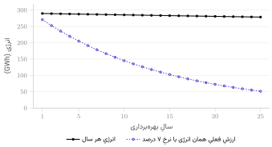
تفسیر. با نرخِ ۷ درصد، ۲۵ سال تولید فقط به اندازهٔ 11.5 سالِ تولیدِ سالِ اول «میارزد» (شکل 3.1). دو نکتهٔ طراحی: (۱) هزینهٔ ترازشده به نرخِ تنزیل بسیار حساس است (34.5 تا 45.2 واحد، حدودِ ۳۰ درصد اختلاف)، چون بیشترِ هزینه در سالِ صفر و بیشترِ انرژی در آینده است؛ نیروگاههای تجدیدپذیر «سرمایهبر»ند. (۲) نسبتِ بیتنزیل (23.8) پروژه را حدودِ ۴۰ درصد ارزانتر از واقع نشان میدهد؛ این خطا در گزارشهای غیرحرفهای رایج است. محدودیت: هزینهها ساختگیاند و مالیات، تورم و ساختارِ وام دیده نشده است.
- جمعِ \(2 + 4 + \dots + 40\) چیست؟
- جمعِ \(1 + 0.9 + 0.81 + \dots\) (نامتناهی) چیست؟
- ارزشِ فعلیِ ۱۰۰ واحد در پایانِ سالِ سوم با نرخِ ۱۰ درصد چیست؟
- چرا \(\text{AF}(r, n)\) با افزایشِ \(r\) کم میشود؟
- اگر نرخِ تنزیل صفر باشد، هزینهٔ ترازشده به چه کسرِ سادهای تبدیل میشود؟
- چرا تنزیلِ انرژی در مخرجِ هزینهٔ ترازشده لازم است؟
3.2.6 هندسه، مثلثات و دستگاهِ مختصات
شهود. خورشید هر روز کمانی در آسمان میپیماید که بلندیاش به عرضِ جغرافیایی و فصل بستگی دارد. همین کمان تعیین میکند ردیفهای ماژول چقدر از هم فاصله داشته باشند تا روی هم سایه نیندازند، و پرتو با چه زاویهای به ماژول برسد. ابزارِ همهٔ اینها مثلثات است.
تعریفها. در مثلثِ قائمالزاویه با زاویهٔ \(\alpha\):
\[ \sin\alpha = \frac{\text{opposite}}{\text{hypotenuse}},\qquad \cos\alpha = \frac{\text{adjacent}}{\text{hypotenuse}},\qquad \tan\alpha = \frac{\sin\alpha}{\cos\alpha} \tag{3.9}\]
یعنی سینوس ضلعِ روبهرو به وتر، کسینوس ضلعِ مجاور به وتر، و تانژانت روبهرو به مجاور است؛ و \(\sin^{2}\alpha + \cos^{2}\alpha = 1\). زاویهها در فرمولهای مثلثاتیِ ریاضی به رادیان اند (\(\pi\ \text{rad} = 180^\circ\))؛ بسیاری از نرمافزارها sin را بر حسبِ رادیان میخواهند و فراموش کردنِ تبدیل، خطای رایجی است.
جای خورشید. با سه زاویه میتوان جای خورشید را حساب کرد (جزئیات و دقتِ بیشتر در فصلِ ۱۲):
- میلِ خورشید \(\delta\): زاویهٔ خورشید با صفحهٔ استوا؛ در طولِ سال میانِ \(-23.45^\circ\) و \(+23.45^\circ\) میگردد. تقریبِ رایج: \(\delta = 23.45^\circ \sin\big(360^\circ (284 + n)/365\big)\)، که \(n\) شمارهٔ روزِ سال است.
- زاویهٔ ساعتی \(\omega\): هر ساعت ۱۵ درجه، صفر در ظهرِ خورشیدی، منفی در صبح.
- عرضِ جغرافیایی \(\phi\): برای نیروگاهِ P، \(34^\circ\) شمالی (فرضِ A-001).
ارتفاعِ خورشید از افق، \(\alpha_\text{s}\)، از قانونِ کسینوسهای کروی به دست میآید:
\[ \sin\alpha_\text{s} = \sin\phi\,\sin\delta + \cos\phi\,\cos\delta\,\cos\omega \tag{3.10}\]
و در ظهرِ خورشیدی (\(\omega = 0\)) ساده میشود به \(\alpha_\text{s} = 90^\circ - \phi + \delta\). سمتِ خورشید (با قراردادِ «از شمال، ساعتگرد»ِ نیروگاهِ P) از رابطهای مشابه میآید و برنامهٔ همراه آن را حساب میکند.
مثال 3.7 (خورشید بالای نیروگاهِ P) پرسش. ارتفاعِ خورشید در ظهرِ خورشیدی و طولِ روز را برای انقلابِ زمستانی، اعتدال و انقلابِ تابستانی در عرضِ \(34^\circ\) شمالی حساب کنید و مسیرِ خورشید را رسم کنید.
پاسخ. طولِ روز از زاویهٔ ساعتیِ طلوع، \(\cos\omega_\text{s} = -\tan\phi\tan\delta\)، به دست میآید: \(2|\omega_\text{s}|/15\) ساعت.
sun at 34 deg N, solar time (Cooper declination)
winter solstice (355) declination -23.45 deg, noon elevation 32.55 deg, day
9.73 h
equinox (81) declination -0.00 deg, noon elevation 56.00 deg, day
12.00 h
summer solstice (172) declination +23.45 deg, noon elevation 79.45 deg, day
14.27 h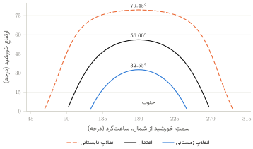
تفسیر. ارتفاعِ ظهر میانِ 32.55° و 79.45° میگردد و طولِ روز میانِ ۹٫۷ و ۱۴٫۳ ساعت. در تابستان خورشید از شمالشرق طلوع و در شمالغرب غروب میکند (شکل 3.2)؛ در زمستان کمانی کوتاه و پایین در جنوب دارد. وارسی: در اعتدال \(\delta = 0\) و ارتفاعِ ظهر \(90 - 34 = 56^\circ\) است (درست)، و روز دوازده ساعت (درست). حدِ اعتبار: فرمولِ میل تقریبی است (حدودِ یک درجه خطا) و شکست و ارتفاعِ محلی را نمیبیند؛ برای غربالگری بس است، برای کنترلِ ردیاب نه.
فاصلهٔ ردیفها. میزهای خورشیدیِ ثابت رو به جنوب و با شیب نصب میشوند. هر میز سایهای به سمتِ شمال میاندازد و اگر ردیفِ بعدی در آن سایه باشد، تولید کم میشود (فصلهای ۱۰ و ۱۴). سادهترین معیار این است که در ظهرِ انقلابِ زمستانی، پایینترین خورشیدِ ظهرِ سال، سایه به ردیفِ بعدی نرسد.
مثال 3.8 (سایه و فاصلهٔ ردیفها) پرسش. میزی با طولِ شیبِ 4.6 m (دو ماژول بهصورتِ ایستاده) و شیبِ 25° (هر دو فرضی، A-031) در عرضِ \(34^\circ\) نصب شده است. ارتفاعِ لبهٔ بالای میز، طولِ سایهٔ ظهرِ انقلابِ زمستانی، فاصلهٔ ردیفها و «نسبتِ پوششِ زمین» (طولِ شیب تقسیم بر فاصلهٔ ردیفها) را بیابید.
پاسخ. ارتفاع \(h = L\sin\beta\)، تصویرِ افقی \(L\cos\beta\)، و سایه \(h/\tan\alpha_\text{s}\):
table slope length 4.6 m (assumed), tilt 25 deg (assumed)
height h = 4.6 sin 25 = 1.944 m; ground projection 4.6 cos 25 = 4.169 m
winter-solstice noon elevation 32.55 deg: shadow h / tan(el) = 3.046 m
row pitch = 7.215 m; ground cover ratio 4.6 / pitch = 0.638
at 10:00 solar time the sun is lower: elevation 25.86 deg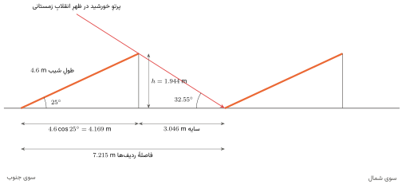
تفسیر. فاصلهٔ 7.2 m و نسبتِ پوششِ 0.64. اما سطرِ آخرِ خروجی هشدار میدهد: در ساعتِ ۱۰ صبحِ همان روز خورشید فقط 25.9° بالاست و سایه بلندتر است؛ پس با این فاصله، صبحها و عصرهای زمستان سایهاندازی هست. انتخابِ فاصلهٔ ردیف یک مصالحه میانِ زمین و تولید است، نه یک قاعدهٔ هندسی؛ فصلهای ۱۰ و ۱۴ آن را با شبیهسازیِ سالانه حل میکنند. وارسی: با شیبِ صفر، ارتفاع صفر و سایه صفر است (حالتِ حدی، درست).
دستگاههای مختصات. هر محاسبهٔ هندسی یک دستگاهِ مختصات دارد و باید آن را گفت (بخش 2.3.5):
- دکارتیِ محلی (\(x\) شرق، \(y\) شمال، \(z\) بالا): برای بردارهای خورشید، باد و نیرو.
- قطبی (فاصله و زاویه): برای جهتِ باد و چیدمانِ توربینها نسبت به یک نقطه؛ \(x = r\sin\theta\) و \(y = r\cos\theta\) اگر \(\theta\) از شمال و ساعتگرد باشد (نه \(r\cos\theta\) و \(r\sin\theta\) ریاضیِ معمول که از شرق و پادساعتگرد است!).
- کروی (ارتفاع و سمت): برای خورشید.
- جغرافیایی و نقشهبرداری (عرض و طول، یا مختصاتِ تصویرِ نقشه): برای جانمایی (فصلهای ۱۴ و ۲۹).
- \(\sin 30^\circ\)، \(\cos 60^\circ\) و \(\tan 45^\circ\) چیست؟ \(30^\circ\) چند رادیان است؟
- ارتفاعِ خورشید در ظهرِ اعتدال در عرضِ \(30^\circ\) و \(40^\circ\) چیست؟
- در مثال 3.8، اگر شیبِ میز 30° باشد، فاصلهٔ ردیفها چه میشود؟
- چرا در فرمولِ قطبیِ نیروگاهِ P، \(x = r\sin\theta\) است و نه \(r\cos\theta\)؟
- در عرضِ \(34^\circ\)، کوتاهترین روزِ سال چند ساعت است؟
- خطای یک درجه در ارتفاعِ خورشیدِ ظهرِ زمستان، طولِ سایه را چند درصد تغییر میدهد؟
3.2.7 بردارها
شهود. کمیتهایی مانندِ دما فقط اندازه دارند (اسکالر)؛ کمیتهایی مانندِ باد، نیرو و پرتوِ خورشید اندازه و جهت دارند (بردار). بردار را با سه مؤلفه در دستگاهِ مختصات مینویسیم: \(\mathbf{a} = (a_x, a_y, a_z)\)، با اندازهٔ \(|\mathbf{a}| = \sqrt{a_x^2 + a_y^2 + a_z^2}\).
عملها. جمعِ دو بردار مؤلفه به مؤلفه است (برآیندِ دو نیرو). ضربِ داخلی یک عدد میدهد:
\[ \mathbf{a}\cdot\mathbf{b} = a_x b_x + a_y b_y + a_z b_z = |\mathbf{a}|\,|\mathbf{b}|\cos\theta \tag{3.11}\]
که \(\theta\) زاویهٔ میانِ دو بردار است. پس ضربِ داخلیِ دو بردارِ یکه کسینوسِ زاویهٔ میانِ آنهاست. این همان چیزی است که برای تابش لازم داریم: شدتِ تابشِ مستقیم روی ماژول، شدتِ پرتو ضربِ کسینوسِ زاویهٔ تابش است. ضربِ خارجی، \(\mathbf{a}\times\mathbf{b}\)، برداری عمود بر هر دو میدهد با اندازهٔ \(|\mathbf{a}||\mathbf{b}|\sin\theta\)؛ گشتاورِ یک نیرو حولِ یک محور (\(\mathbf{T} = \mathbf{r}\times\mathbf{F}\)، فصلِ ۴) از اینجا میآید.
مثال 3.9 (زاویهٔ تابش با ضربِ داخلی) پرسش. در ساعتِ ۱۰ صبحِ خورشیدیِ ۲۱ ژوئن، بردارِ یکهٔ خورشید \(\mathbf{s}\) و بردارِ یکهٔ عمود بر ماژولی با شیبِ 25° رو به جنوب \(\mathbf{n}\) را بنویسید، زاویهٔ تابش را بیابید و شدتِ تابشِ مستقیمِ رسیده به ماژول و به زمینِ افقی را برای پرتوی با شدتِ 850 W/m² (عمود بر پرتو، فرضی) مقایسه کنید.
پاسخ. در دستگاهِ شرق-شمال-بالا، \(\mathbf{s} = (\cos\alpha_\text{s}\sin A,\ \cos\alpha_\text{s}\cos A,\ \sin\alpha_\text{s})\) که \(A\) سمتِ خورشید است، و \(\mathbf{n} = (\sin\beta\sin\gamma,\ \sin\beta\cos\gamma,\ \cos\beta)\) برای شیبِ \(\beta\) و سمتِ رویهٔ \(\gamma\):
21 June, 10:00 solar time: elevation 61.79 deg, azimuth 104.00 deg
sun vector (E, N, U) = (+0.4587, -0.1144, +0.8812), |s| = 1.0000
panel normal, tilt 25 deg facing south = (+0.0000, -0.4226, +0.9063)
cos(theta) = s . n = 0.8470; angle of incidence 32.12 deg
beam of 850 W/m2 normal to the sun -> 719.9 W/m2 on the panel, 749.0 W/m2 on
the ground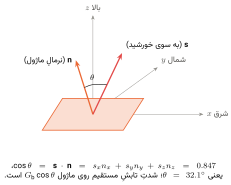
تفسیر. در این ساعت، ماژولِ شیبدار (720 W/m²) کمی کمتر از زمینِ افقی (749 W/m²) تابشِ مستقیم میگیرد، چون خورشیدِ تابستان بلند است و از شرق میتابد؛ ماژولِ رو به جنوب برای کلِ سال بهینه شده است، نه برای صبحِ تابستان. وارسی: \(|\mathbf{s}| = 1\) (درست)؛ اگر ماژول افقی بود (\(\beta = 0\))، \(\mathbf{n} = (0, 0, 1)\) و \(\cos\theta = \sin\alpha_\text{s}\) (درست). کتابخانهٔ همراه همین را با فرمولِ مثلثاتیِ مستقیم هم حساب میکند و آزمونِ test_incidence_equals_dot_product برابریِ دو روش را میسنجد.
- بادی با تندیِ 10 m/s از جنوبغرب (225°) میوزد. بردارِ حرکتِ هوا را بنویسید.
- ضربِ داخلیِ \((1, 0, 0)\) و \((0, 1, 0)\) چیست و چه میگوید؟
- زاویهٔ تابش روی ماژولِ افقی در ظهرِ اعتدال در عرضِ \(34^\circ\) چیست؟
- اگر \(\mathbf{s}\cdot\mathbf{n} < 0\) باشد، خورشید کجاست؟
- اندازهٔ برآیندِ دو نیروی 3 kN به شرق و 4 kN به شمال چیست؟
- چرا ضربِ داخلیِ دو بردارِ یکه همیشه میانِ \(-1\) و \(1\) است؟
3.2.8 تابع و نمودار
تعریف. تابع قاعدهای است که به هر ورودی از یک دامنه دقیقاً یک خروجی نسبت میدهد: \(y = f(x)\). منحنیِ توانِ توربین تابعی است از تندی به توان؛ مدلِ غربالگریِ خورشیدی تابعی است از شدتِ تابش به توان. سه چیز را همیشه باید دربارهٔ یک تابعِ مهندسی دانست: دامنه (کجا تعریف شده و معتبر است)، شکل (خطی، توانی، تکهای، با سقف) و منبع (از فیزیک آمده یا از برازشِ داده).
خطی و غیرِخطی. تابعِ خطی \(y = ax + b\) شیبِ ثابتِ \(a\) دارد: هر واحد افزایشِ \(x\) همان افزایشِ \(y\) را میدهد. بیشترِ رابطههای واقعی غیرِخطیاند و شیبشان جا به جا عوض میشود. مدلِ غربالگریِ خورشیدی تکهایخطی است: تا یک «زانو» با شیبِ ثابت بالا میرود و سپس با سقفِ اینورتر صاف میشود. منحنیِ توانِ توربین سه تکه دارد: صفر تا تندیِ آغازِ کار، رشدِ تند تا تندیِ نامی، و سقف تا تندیِ قطع.
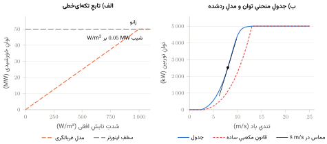
مثال 3.10 (خواندنِ دو تابع) پرسش. از مدلِ غربالگریِ خورشیدی، شیب و جای «زانو» را بیابید. از جدولِ منحنیِ توان، تندیِ آغازِ کار، تندیِ نامی، توان در 8.25 m/s (میانِ دو سطرِ جدول) و توان در 26 m/s (بیرون از جدول) را بخوانید.
پاسخ.
PV screening model P(G) = min(60 x G/1000 x 0.85 x 0.98, 50) MW: piecewise
linear
slope below the knee: 49.980 MW per 1000 W/m2
knee at G = 50 / (60 x 0.833) x 1000 = 1000.4 W/m2
wind power curve: cut-in 3.0 m/s, rated from 13.0 m/s, table ends at 30.0 m/s
P(8.25 m/s) by linear interpolation = 2769.5 kW
P(26 m/s) is outside the table: lerp_table(..., outside='zero') -> 0 kW
(cut-out)تفسیر. زانوی خورشیدی در 1000 W/m² است؛ چون شدتِ تابشِ افقیِ ساختگاه بهندرت به آن میرسد، بُرشِ اینورتر ناچیز است (فصلِ ۱، ۱۵٫۷ مگاواتساعت در سال). مقدارِ 8.25 m/s با درونیابیِ خطی میانِ دو سطرِ جدول آمده است، که میانِ دو نقطهٔ نزدیک معمولاً قابلِ اعتماد است. اما 26 m/s بیرون از دامنهٔ جدول است: ادامه دادنِ خط (برونیابی) میگفت توربین همان 5000 kW را میدهد، در حالی که در واقع در 25 m/s برای حفاظت خاموش میشود. کتابخانهٔ همراه برونیابی را بیاجازهٔ صریح انجام نمیدهد و کاربر باید «سیاستِ بیرون از جدول» را انتخاب کند. درس: هرگز بیفکر برونیابی نکنید؛ فیزیک بیرون از دادهٔ شما ممکن است کاملاً عوض شود.
حد و پیوستگی. حد میپرسد «وقتی \(x\) به \(a\) نزدیک میشود، \(f(x)\) به کجا نزدیک میشود؟»: \(\lim_{x\to a} f(x)\). تابعی پیوسته است اگر حدش در هر نقطه با مقدارش برابر باشد (نمودار بیپرش). منحنیِ توان در تندیِ قطع ناپیوسته است: درست پیش از 25 m/s، 5000 kW؛ درست پس از آن، صفر. این ناپیوستگی واقعی است و پیامد دارد: در روزهای طوفانی که باد حولِ 25 m/s نوسان میکند، توربین مدام خاموش و روشن میشود و تولید و بارِ مکانیکی با آن نوسان میکنند (فصلهای ۱۱ و ۲۰).
3.2.9 مشتق: آهنگِ تغییر و حساسیت
شهود. شیبِ یک خط عددی ثابت است. شیبِ یک منحنی جا به جا عوض میشود؛ مشتق شیبِ منحنی در یک نقطه است: شیبِ خطِ مماس. به زبانِ مهندسی، مشتق حساسیت است: «اگر ورودی کمی تغییر کند، خروجی چقدر تغییر میکند؟»
تعریف. مشتق حدِ شیبِ خطِ میانِ دو نقطهٔ بسیار نزدیک است:
\[ f'(x) = \frac{\mathrm{d}f}{\mathrm{d}x} = \lim_{h\to 0} \frac{f(x + h) - f(x)}{h} \tag{3.12}\]
یکای مشتق یکای خروجی بر یکای ورودی است: شیبِ منحنیِ توان kW بر m/s است.
قاعدههای اصلی. برای ثابتِ \(c\) و تابعهای \(f\) و \(g\):
| تابع | مشتق | نمونه در نیروگاه |
|---|---|---|
| \(c\) | \(0\) | ظرفیتِ نامی نسبت به زمان |
| \(x^{n}\) | \(n\,x^{n-1}\) | توانِ باد \(\propto v^{3}\): مشتق \(\propto 3v^{2}\) |
| \(e^{ax}\) | \(a\,e^{ax}\) | فروپاشیِ نمایی (بخش 3.3.7) |
| \(\ln x\) | \(1/x\) | پروفیلِ لگاریتمیِ باد |
| \(\sin(\omega t)\) | \(\omega\cos(\omega t)\) | ولتاژِ متناوب (فصلِ ۷) |
| \(c\,f + g\) | \(c\,f' + g'\) | خطی بودنِ مشتق |
| \(f\,g\) | \(f'g + f g'\) | توان \(= V\,I(V)\) |
| \(f(g(x))\) | \(f'(g(x))\,g'(x)\) | قاعدهٔ زنجیرهای |
حساسیتِ نسبی. اغلب مهمتر از شیبِ مطلق، حساسیتِ نسبی است: درصدِ تغییرِ خروجی به ازای یک درصد تغییرِ ورودی، \((\mathrm{d}y/y)/(\mathrm{d}x/x) = x f'(x)/f(x)\). برای \(y = kx^{n}\) همیشه برابرِ \(n\) است. فصلِ ۲ دید که انرژیِ سالانهٔ مزرعه حساسیتِ نسبیِ \(1.62\) به تندی دارد، نه \(3\).
مثال 3.11 (شیبِ منحنیِ توان و یک مدلِ ردشده) پرسش. کسی پیشنهاد میکند منحنیِ توان را با «قانونِ مکعبیِ ساده»، \(P = 5000\,(v^{3} - 3^{3})/(13^{3} - 3^{3})\) میانِ تندیِ آغازِ کار و تندیِ نامی، جایگزین کنیم تا بتوان مشتقش را با قاعده گرفت. (الف) این مدل را در 8 m/s با جدول بیازمایید. (ب) شیبِ جدول را در 8 m/s با تفاضلِ مرکزی و با یک اسپلاینِ مکعبی (منحنیِ نرمی که از همهٔ نقطههای جدول میگذرد) بیابید. (پ) حساسیتِ نسبیِ توان به تندی را حساب کنید.
پاسخ. تفاضلِ مرکزی، \(\big(f(x+h) - f(x-h)\big)/(2h)\)، دقیقتر از تفاضلِ یکطرفه است (بخش 3.5):
candidate model: ideal cubic law between cut-in 3 m/s and rated 13 m/s,
P = 5000 (v^3 - 27) / (2197 - 27) kW
P(8) = 1118 kW, but the table gives 2522 kW: -56 % -> model REJECTED
slope of the table at 8 m/s:
central difference, h = 1.00 m/s: 930.5 kW/(m/s)
central difference, h = 0.50 m/s: 944.0 kW/(m/s)
central difference, h = 0.25 m/s: 944.0 kW/(m/s)
cubic spline through the table, exact derivative: 948.0 kW/(m/s)
relative sensitivity (dP/P)/(dv/v) at 8 m/s: 3.01تفسیر. (الف) مدلِ مکعبیِ ساده در 8 m/s ۵۶ درصد کمتر از جدول میدهد و رد میشود (شکل 3.5، ب). شکلِ منحنیِ واقعی را آیرودینامیک و کنترلِ توربین تعیین میکنند، نه یک قانونِ ساده؛ ساده بودنِ مشتق دلیلِ خوبی برای پذیرفتنِ مدلِ نادرست نیست. (ب) سه روشِ عددی شیبِ حدودِ 945 kW بر m/s را میدهند. (پ) حساسیتِ نسبیِ سه در 8 m/s: در میانهٔ منحنی، توانِ توربین تقریباً با مکعبِ تندی میرود؛ حساسیتِ کمترِ انرژیِ سالانه از تندیهای بالا و پایینِ منحنی میآید.
3.2.10 مشتقِ جزئی و بهینهسازی
مشتقِ جزئی. وقتی خروجی به چند ورودی وابسته است، \(y = f(x_1, x_2, \ldots)\)، مشتقِ جزئی \(\partial f/\partial x_i\) حساسیت به یک ورودی است وقتی بقیه ثابتاند. بردارِ همهٔ مشتقهای جزئی گرادیان است و تقریبِ خطیِ تغییرِ خروجی را میدهد:
\[ \Delta y \approx \frac{\partial f}{\partial x_1}\Delta x_1 + \frac{\partial f}{\partial x_2}\Delta x_2 + \cdots \tag{3.13}\]
این همان رابطهای است که قانونِ انتشارِ عدمِ قطعیتِ فصلِ ۲ بر آن بنا شده است: ضریبهای حساسیت \(c_i\) همین مشتقهای جزئیاند.
مثال 3.12 (توانِ ماژول به تابش و دما) پرسش. با مدلِ \(P(G, T) = 550\,(G/1000)\,\big(1 - 0.0035\,(T - 25)\big)\) وات (ضریبِ دمایی از برگهٔ دادهٔ ساختگیِ PVM-550)، در نقطهٔ \(G = 800\ \text{W/m}^2\) و \(T = 45\ ^\circ\text{C}\)، دو مشتقِ جزئی را بیابید و با تقریبِ خطی توان را در \((850, 50)\) تخمین بزنید.
پاسخ. \(\partial P/\partial G = (550/1000)\big(1 - 0.0035(T-25)\big)\) و \(\partial P/\partial T = -550\,(G/1000)\times 0.0035\):
P(G, T) = 550 x G/1000 x (1 - 0.0035 (T - 25)); at G = 800 W/m2, T = 45 C: P =
409.20 W
dP/dG = 0.5115 W per W/m2; dP/dT = -1.540 W per K
linear estimate at (850, 50): 427.07 W; exact 426.59 Wتفسیر. پنجاه وات بر مترمربع تابشِ بیشتر حدودِ 26 W میافزاید و پنج درجه گرمای بیشتر حدودِ 7.7 W میکاهد. تقریبِ خطی 0.5 W خطا دارد، چون مدل یک جملهٔ ضربیِ \(G\cdot T\) دارد که تقریبِ خطی نمیبیند. وارسی: علامتِ \(\partial P/\partial T\) منفی است: گرما توانِ ماژولِ سیلیکونی را کم میکند (درست؛ فصلِ ۱۰).
بیشینه و کمینه. در بیشینه یا کمینهٔ یک تابعِ هموار، مشتق صفر است: مماس افقی است. برای فهمیدنِ اینکه بیشینه است یا کمینه، علامتِ مشتقِ دوم یا مقدارهای اطراف را میبینیم. مهمترین «بیشینهٔ» نیروگاهِ خورشیدی نقطهٔ بیشینهٔ توان است: توانِ ماژول، \(P = V\,I(V)\)، با افزایشِ ولتاژ ابتدا بالا میرود و سپس تند میافتد؛ اینورتر دائماً ولتاژی را میجوید که \(\mathrm{d}P/\mathrm{d}V = 0\) (فصلِ ۹).
مثال 3.13 (نقطهٔ بیشینهٔ توانِ یک ماژول) پرسش. با مدلِ سادهٔ یکدیودیِ فصلِ ۶، \(I(V) = I_\text{sc} - I_0\,(e^{V/(nV_t)} - 1)\)، شرطِ \(\mathrm{d}P/\mathrm{d}V = 0\) را بنویسید و آن را با روشِ نیوتن (بخش 3.5.2) حل کنید.
پاسخ. با قاعدهٔ ضرب، \(\mathrm{d}P/\mathrm{d}V = I + V\,\mathrm{d}I/\mathrm{d}V\). با \(x = V/(nV_t)\):
\[ \frac{\mathrm{d}P}{\mathrm{d}V} = I_\text{sc} + I_0 - I_0\,e^{x}(1 + x) = 0 \tag{3.14}\]
که معادلهای غیرِخطی است و جوابِ بسته ندارد؛ پس عددی حلش میکنیم:
P(V) = V I(V), simplified one-diode model of PVM-550 (no series resistance)
dP/dV = 0 solved with Newton from 40 V: 5 iterations
iterates: 40.0000, 40.7836, 40.7067, 40.7058, 40.7058, 40.7058
V_mpp = 40.706 V, I_mpp = 12.815 A, P_max = 521.7 W
datasheet: 41.96 V, 13.11 A, 550 W -> the model's V_mpp is -3.0 % (no series
resistance; chapter 10)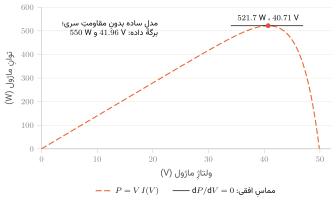
تفسیر. نیوتن در پنج گام به دقتِ ماشین رسید. اما نتیجه، 521.7 W در 40.71 V، با برگهٔ داده (550 W در 41.96 V) نمیخواند: مدلِ ساده مقاومتِ سری و چند جزءِ دیگرِ ماژولِ واقعی را ندارد (فصلِ ۱۰). اینجا با یک درسِ مهم روبهروییم: روشِ عددیِ دقیق نمیتواند مدلِ نادرست را درست کند. خطای عددی (\(10^{-12}\)) و خطای مدل (۵ درصد) دو چیزِ جدااند و باید جدا گزارش شوند.
بهینهسازیِ مقید و ضریبِ لاگرانژ. اغلب باید چیزی را بهینه کنیم در حالی که محدودیتی هست: کمترین تلفات با مقدارِ معینی مس، بیشترین درآمد با ظرفیتِ معینی باتری. روشِ ضریبِ لاگرانژ قید را به تابعِ هدف میافزاید: برای کمینه کردنِ \(f(\mathbf{x})\) با قیدِ \(g(\mathbf{x}) = 0\)، نقطهای را میجوییم که در آن \(\nabla f = \lambda\,\nabla g\)؛ یعنی گرادیانِ هدف و قید همراستا باشند.
مثال 3.14 (تقسیمِ مس میانِ دو فیدر) پرسش. دو فیدرِ DC هر کدام 180 m، یکی 300 A و دیگری 150 A میبرند (فرضی). حجمِ کلِ مس ثابت و برابرِ دو کابلِ 240 mm² است. مقطعها را چطور تقسیم کنیم تا تلفاتِ کل کمینه شود؟
پاسخ. تلفاتِ کل \(\sum 2\rho L_i I_i^{2}/A_i\) است با قیدِ \(\sum A_i L_i = \text{const}\). شرطِ لاگرانژ:
\[ \frac{\partial}{\partial A_i}\Big(\frac{2\rho L_i I_i^{2}}{A_i}\Big) = \lambda L_i \quad\Longrightarrow\quad -\frac{2\rho I_i^{2}}{A_i^{2}} = \lambda \]
برای هر \(i\). پس \(I_i/A_i\) برای همهٔ فیدرها برابر است: مقطعِ بهینه با جریان متناسب است.
two DC feeders, 180 m each, 300 A and 150 A; copper volume fixed at two 240
mm2
equal areas 240/240 mm2: loss 2.90 kW
Lagrange optimum A1/A2 = I1/I2: 320 / 160 mm2, loss 2.61 kW (-10.0 %)
current densities at the optimum: 0.938 and 0.938 A/mm2 (equal)تفسیر. با همان مقدار مس، تقسیمِ ۳۲۰/۱۶۰ بهجای ۲۴۰/۲۴۰ تلفات را ده درصد کم میکند، و قاعدهٔ نتیجه ساده و بهیادماندنی است: چگالیِ جریانِ برابر. این نتیجه نشان میدهد که حتی وقتی محاسبه را با کامپیوتر انجام میدهیم، شرطِ تحلیلیِ بهینه بینشی میدهد که عدد بهتنهایی نمیدهد. محدودیت: در طراحیِ واقعی مقطع از فهرستِ استاندارد انتخاب میشود و قیدهای دیگری (ظرفیتِ جریان، افتِ ولتاژ، اتصالِ کوتاه؛ فصلهای ۶ و ۲۴) هم هست.
- مشتقِ \(P = \tfrac12\rho A v^{3}\) نسبت به \(v\) و نسبت به \(\rho\) چیست؟ یکای هر کدام؟
- با قاعدهٔ زنجیرهای مشتقِ \(e^{-t/\tau}\) نسبت به \(t\) را بنویسید.
- چرا تفاضلِ مرکزی دقیقتر از تفاضلِ پیشرو است؟ (راهنما: بخش 3.5.)
- حساسیتِ نسبیِ \(y = 5x^{-2}\) چیست؟
- چرا روشِ نیوتن در مثال 3.13 پاسخی متفاوت از برگهٔ داده داد؟ خطای کدام است: روش یا مدل؟
- در مثال 3.14، اگر دو فیدر طولهای متفاوت داشتند، قاعدهٔ «چگالیِ جریانِ برابر» هنوز برقرار بود؟
- در یک بیشینه، مشتقِ دوم چه علامتی دارد؟
- با تقریبِ خطیِ معادلهٔ 3.13، اگر \(G\) از ۸۰۰ به ۷۸۰ و \(T\) از ۴۵ به ۴۰ برود، توان چقدر عوض میشود؟
3.2.11 انتگرال: انباشت
شهود. اگر مشتق آهنگِ تغییر است، انتگرال انباشت است: مساحتِ زیرِ منحنی. انرژی انتگرالِ توان است (معادلهٔ 2.3)، بار انتگرالِ جریان، گرمای تولیدشده انتگرالِ توانِ تلفشده، و تولیدِ سالانه انتگرالِ توان در طولِ سال. انتگرالِ معین یک عدد است (مساحت میانِ دو حد)؛ انتگرالِ نامعین یک تابع است (پادمشتق): تابعی که مشتقش تابعِ دادهشده است. قضیهٔ اساسیِ حسابان این دو را پیوند میدهد:
\[ \int_{a}^{b} f(x)\,\mathrm{d}x = F(b) - F(a), \qquad F'(x) = f(x) \tag{3.15}\]
چند پادمشتقِ پایه: \(\int x^{n}\mathrm{d}x = x^{n+1}/(n+1)\) برای \(n \ne -1\)؛ \(\int \mathrm{d}x/x = \ln x\)؛ \(\int e^{ax}\mathrm{d}x = e^{ax}/a\)؛ \(\int \sin(ax)\mathrm{d}x = -\cos(ax)/a\)؛ همه بهاضافهٔ یک ثابت.
مثال 3.15 (انرژیِ یک روز بهصورتِ انتگرال) پرسش. توانِ خورشیدیِ یک روزِ صاف را با یک نیمسینوس مدل کنید: \(P(t) = P_\text{max}\sin\big(\pi(t - t_\text{r})/L\big)\) از طلوع تا غروب. انرژی را با انتگرال بیابید و با جمعِ ساعتیِ روزِ تابستانیِ بستهٔ داده (بیسقفِ اینورتر) مقایسه کنید.
پاسخ.
\[ E = \int_{t_\text{r}}^{t_\text{r}+L} P_\text{max}\sin\!\Big(\frac{\pi(t - t_\text{r})}{L}\Big)\mathrm{d}t = P_\text{max}\frac{L}{\pi}\Big[-\cos u\Big]_{0}^{\pi} = \frac{2P_\text{max}L}{\pi} \tag{3.16}\]
summer day: PV (unclipped AC) from hour 5 to 20, peak 51.86 MW
half-sine model: E = integral of Pmax sin(pi (t - t_r)/L) dt = 2 Pmax L / pi =
495.3 MWh
hourly data, unclipped: 439.6 MWh (+12.7 %)
hourly data, with the 50 MW inverter limit: 436.3 MWh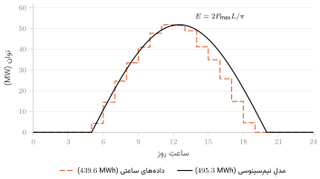
تفسیر. مدلِ نیمسینوسی ۱۳ درصد بیشتر از داده میدهد: شکلِ روزِ واقعی «باریکتر» از نیمسینوس است، چون تابشِ صبح و عصر از مسیرِ طولانیِ پرتو در جو بیشتر کم میشود (فصلِ ۱۲). مدلِ نیمسینوسی برای برآوردِ ذهنیِ سریع خوب است، نه برای برآوردِ تولید. وارسی: \(2/\pi \approx 0.64\)؛ یعنی انرژیِ روز حدودِ ۶۴ درصدِ «بیشینه ضربِ طولِ روز» است؛ عددی که ارزشِ به خاطر سپردن دارد.
مثال 3.16 (گرمای یک جریانِ افزایشی) پرسش. جریانِ یک فیدرِ DC با مقاومتِ 0.0123 Ω (فرضی) در یک ساعت بهطورِ خطی از صفر به 315 A میرسد. گرمای تولیدشده را با انتگرال، با قاعدهٔ ذوزنقهای و با «جریانِ میانگین» حساب کنید.
پاسخ. \(Q = \int_0^{T} R\,(I_\text{f}t/T)^{2}\mathrm{d}t = R I_\text{f}^{2}T/3\):
current rising linearly from 0 to 315 A in one hour through 0.0123 ohm
(assumed)
Q = integral R (I t/T)^2 dt = R I^2 T / 3 = 1464.6 kJ = 0.407 kWh
trapezoid with 6 intervals: 1484.9 kJ (+1.39 %)
using the mean current (157.5 A) instead: 1098.4 kJ (-25 %)تفسیر. گذاشتنِ جریانِ میانگین در \(RI^{2}\) گرما را ۲۵ درصد کم میدهد: میانگینِ مجذور با مجذورِ میانگین برابر نیست؛ همان دامِ «مکعبِ میانگین»ِ فصلِ ۲، این بار با توانِ دو. جریانِ مؤثر (RMS) که گرما را درست میدهد، \(I_\text{f}/\sqrt3 = 181.9\ \text{A}\) است، نه \(157.5\ \text{A}\). درس: هر جا کمیتی غیرِخطی (مجذور، مکعب) انباشته میشود، میانگینِ ورودی کافی نیست؛ باید انتگرالِ تابع را گرفت.
- \(\int_0^{2} 3x^{2}\,\mathrm{d}x\) را حساب کنید.
- توانی که در ۱۰ ساعت بهطورِ خطی از صفر به 50 MW میرسد، چه انرژیای میدهد؟
- مقدارِ مؤثرِ جریانی که بهطورِ خطی از صفر به \(I_\text{f}\) میرسد چیست؟ آن را با مثال 3.16 بسنجید.
- چرا مدلِ نیمسینوسی انرژیِ روزِ واقعی را بیشبرآورد میکند؟
- انرژیِ روزی با بیشینهٔ 40 MW و طولِ ۱۲ ساعت در مدلِ نیمسینوسی چقدر است؟
- اگر \(F(t)\) انرژیِ انباشته از آغازِ سال باشد، \(F'(t)\) چیست؟
3.2.12 هندسه، چرخش و حرکت در نیروگاه
هندسهٔ کاربردی. چند ابزارِ هندسیِ ساده در سراسرِ طراحیِ نیروگاه بهکار میآیند: قضیهٔ فیثاغورس برای فاصلهها (\(d = \sqrt{\Delta x^{2} + \Delta y^{2}}\))، مساحتها (دایره \(\pi r^{2}\)، قطاعِ دایره با زاویهٔ \(\theta\) رادیان \(\tfrac12\theta r^{2}\))، حجمها (استوانه \(\pi r^{2}h\)؛ منشور = مساحتِ قاعده × ارتفاع) و مثلثهای متشابه (نسبتِ ضلعها ثابت است؛ اساسِ محاسبهٔ سایه و ارتفاع با یک چوبِ معلوم).
مثال 3.17 (کابل، روتور و فونداسیون) پرسش. (الف) توربینی 1200 m شرق و 800 m شمالِ پستِ نیروگاه است (فرضی). طولِ کابل در خطِ مستقیم و در امتدادِ دو جادهٔ عمود بر هم چقدر است؟ (ب) مساحتِ جاروبشدهٔ روتورِ 150 m و یک قطاعِ ۱۲۰ درجهای آن را بیابید. (پ) حجمِ بتنِ یک فونداسیونِ استوانهایِ ساده با قطرِ 20 m و عمقِ 3 m (فرضی) چقدر است؟
پاسخ.
cable from the substation to a turbine 1200 m east and 800 m north (assumed):
straight line sqrt(1200^2 + 800^2) = 1442 m; along two roads (east, then
north) 2000 m (+39 %)
rotor swept area pi 75^2 = 17,671 m2; a 120 deg sector of it = 5,890 m2
circular foundation 20 m diameter, 3 m deep: pi 10^2 x 3 = 942 m3 of concreteتفسیر. مسیرِ کنارِ جاده ۳۹ درصد بلندتر از خطِ مستقیم است؛ اما کابلِ کنارِ جاده ارزانتر نصب و نگهداری میشود و از زمینهای دیگران نمیگذرد. انتخابِ مسیر یک مسئلهٔ بهینهسازی با قید است (فصلهای ۱۴ و ۲۴). حجمِ فونداسیون نشان میدهد چرا هر توربین صدها مترمکعب بتن میخواهد، و فونداسیونِ واقعی (با شکلِ پیچیدهتر و آرماتور) را مهندسِ سازه بر پایهٔ بارها و خاک طراحی میکند (فصلِ ۲۹).
چرخشِ دستگاهِ مختصات. گاهی کمیتها در دستگاهِ «شرق-شمال» داده شدهاند، اما پرسش در دستگاهِ دیگری معنادار است: فاصلهٔ دو توربین در امتدادِ باد (که اثرِ ویک را تعیین میکند) و عمود بر باد. اگر \(\mathbf{u}\) بردارِ یکهٔ جهتِ باد و \(\mathbf{w}\) بردارِ یکهٔ عمود بر آن باشد، مؤلفههای هر برداری مثلِ \(\mathbf{d}\) در دستگاهِ تازه ضربِ داخلیِ آن با این دو بردارند. در شکلِ ماتریسی، این یک ماتریسِ متعامد است (با دترمینانِ \(-1\): چرخش همراه با یک قرینهسازی، چون محورِ عمود را سمتِ راستِ باد گرفتهایم):
\[ \begin{bmatrix} d_\parallel \\ d_\perp \end{bmatrix} = \begin{bmatrix} u_x & u_y \\ u_y & -u_x \end{bmatrix} \begin{bmatrix} d_x \\ d_y \end{bmatrix} \tag{3.17}\]
این ماتریس طولها را حفظ میکند: اندازهٔ بردار پیش و پس از چرخش یکی است.
مثال 3.18 (فاصلهٔ دو توربین در دستگاهِ باد) پرسش. بادِ غالب از 163° میوزد. توربینِ دوم 600 m شرق و 1100 m شمالِ توربینِ اول است (فرضی). فاصلهٔ آنها در امتدادِ باد و عمود بر باد چند برابرِ قطرِ روتور است؟
پاسخ.
wind FROM 163 deg blows TO 343 deg: downwind unit vector (-0.2924, +0.9563)
second turbine 600 m east and 1100 m north of the first (assumed)
rotated coordinates: downwind 877 m = 5.84 D, crosswind 895 m = 5.97 D (D =
150 m)
check: sqrt(downwind^2 + crosswind^2) = 1253 m = 1253 m (rotation keeps
lengths)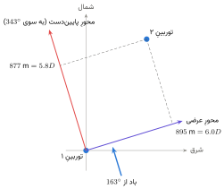
تفسیر. با این باد، توربینِ دوم حدودِ ۵٫۸ قطر پاییندست و ۶ قطر کنارِ توربینِ اول است؛ چون فاصلهٔ عرضی زیاد است، احتمالاً در ویکِ اولی نیست. اما بادِ غالب یک جهت است؛ گلِ باد همهٔ جهتها را دارد و باید این چرخش را برای هر جهت تکرار کرد و با فراوانیِ آن جهت وزن داد (فصلهای ۱۳ و ۱۴). وارسی: طولِ بردار پیش و پس از چرخش 1253 m است (درست).
حرکتِ چرخشی. نقطهای که با تندیِ زاویهایِ \(\omega\) روی دایرهای به شعاعِ \(r\) میچرخد، تندیِ خطیِ \(v = \omega r\) و شتابِ مرکزگرای \(a = \omega^{2}r = v^{2}/r\) دارد. این دو رابطه از مشتقگیری از مکانِ نقطه، \((r\cos\omega t, r\sin\omega t)\)، نسبت به زمان به دست میآیند: مشتقِ اول تندی، مشتقِ دوم شتاب. در توربین، شتابِ مرکزگرا نیرویی کششی در پره میسازد و تندیِ نوکِ پره، صدا و سایشِ لبهٔ حمله را تعیین میکند (فصلهای ۴ و ۱۱).
مثال 3.19 (تندی و شتابِ نوکِ پره) پرسش. روتورِ WT-5.0-150 با 10 rpm (فرضی) میچرخد. تندیِ نوکِ پره، شتابِ مرکزگرای آن و بسامدهای چرخش (\(1P\)) و عبورِ پره از برابرِ برج (\(3P\)) را بیابید.
پاسخ.
rotor at 10 rpm (assumed), radius 75 m:
omega = 1.0472 rad/s; tip speed v = omega r = 78.5 m/s = 283 km/h
centripetal acceleration of the tip omega^2 r = 82.2 m/s2 = 8.4 g
rotation frequency 1P = 0.1667 Hz; blade passing 3P = 0.5000 Hz
a point at mid-span (37.5 m) moves at 39.3 m/s: speed grows linearly with rتفسیر. نوکِ پره 283 km/h حرکت میکند و شتابی بیش از هشت برابرِ گرانش دارد؛ ماده، اتصالِ ریشه و تعادلِ پرهها باید این را تحمل کنند. بسامدهای \(1P\) و \(3P\) در بخش 3.3.10 اهمیت پیدا میکنند: اگر بسامدِ طبیعیِ برج با آنها برابر باشد، برج تشدید میکند.
3.2.13 سریِ تیلور و تقریب
شهود. نزدیکِ هر نقطه، هر تابعِ همواری شبیهِ یک خط است؛ کمی دورتر، شبیهِ یک سهمی؛ و همینطور. سریِ تیلور این ایده را دقیق میکند:
\[ f(x + h) = f(x) + h\,f'(x) + \frac{h^{2}}{2!}f''(x) + \frac{h^{3}}{3!}f'''(x) + \cdots \tag{3.18}\]
جملهٔ اول مقدار، جملهٔ دوم تقریبِ خطی (همان معادلهٔ 3.13)، و هر جمله پس از آن تصحیحی کوچکتر است (اگر \(h\) کوچک باشد). سه کاربردِ مهم: (۱) تقریبهای زاویهٔ کوچک (\(\sin x \approx x\)، \(\cos x \approx 1 - x^{2}/2\)) که در تحلیلِ شبکه و سازه بارها بهکار میروند؛ (۲) خطای روشهای عددی: تفاضلِ پیشرو \(\big(f(x+h) - f(x)\big)/h\) از جملهٔ دومِ تیلور خطایی متناسب با \(h\) دارد و تفاضلِ مرکزی خطایی متناسب با \(h^{2}\) (بخش 3.5.8)؛ (۳) قانونِ انتشارِ عدمِ قطعیت، که چیزی جز تقریبِ مرتبهٔ اولِ تیلور نیست؛ و جملهٔ مرتبهٔ دوم نشان میدهد کِی این تقریب کافی نیست.
مثال 3.20 (تقریبها تا کجا معتبرند؟) پرسش. (الف) خطای \(\sin x \approx x\) و \(\cos x \approx 1 - x^{2}/2\) را برای ۵ تا ۳۰ درجه بیابید. (ب) تغییرِ \(v^{3}\) را برای افزایشِ ۳٫۵، ۷ و ۱۴ درصدیِ \(v\) دقیق، با تقریبِ خطی (\(3\Delta v/v\)) و با تقریبِ درجهٔ دوم (\(3\Delta v/v + 3(\Delta v/v)^{2}\)) حساب کنید.
پاسخ.
small-angle approximations: sin x ~ x, cos x ~ 1 - x^2/2 (x in rad)
5 deg: sin x = 0.08716, x = 0.08727 (+0.13 %); cos x = 0.99619, 1 - x^2/2 =
0.99619
10 deg: sin x = 0.17365, x = 0.17453 (+0.51 %); cos x = 0.98481, 1 - x^2/2 =
0.98477
20 deg: sin x = 0.34202, x = 0.34907 (+2.06 %); cos x = 0.93969, 1 - x^2/2 =
0.93908
30 deg: sin x = 0.50000, x = 0.52360 (+4.72 %); cos x = 0.86603, 1 - x^2/2 =
0.86292
v^3 near 7 m/s, change 3.5 %: exact +10.87 %, linear 3 dv/v +10.50 %,
quadratic +10.87 %
v^3 near 7 m/s, change 7.0 %: exact +22.50 %, linear 3 dv/v +21.00 %,
quadratic +22.47 %
v^3 near 7 m/s, change 14.0 %: exact +48.15 %, linear 3 dv/v +42.00 %,
quadratic +47.88 %تفسیر. (الف) تا ۱۰ درجه، \(\sin x \approx x\) نیم درصد خطا دارد؛ در ۳۰ درجه نزدیکِ پنج درصد. پس تقریبِ «زاویهٔ کوچک»ِ پخشِ توانِ DC (بخش 3.3.2) برای اختلافِ زاویههای چند درجهایِ شبکههای عادی خوب است و برای خطوطِ بسیار پربار نه. (ب) تقریبِ خطیِ مکعب، برای تغییرِ ۳ درصدیِ تندی (عدمِ قطعیتِ رایج)، خطای کوچکی دارد؛ برای تغییرِ ۱۴ درصدی شش واحدِ درصد کم میدهد. این همان دلیلی است که فصلِ ۲ گفت برای عدمِ قطعیتهای بزرگ از مونتکارلو استفاده کنید.
3.2.14 بهینهسازیِ عددی: زاویهٔ شیبِ بهینه
مسئله. میزی رو به جنوب با چه شیبی بیشترین تابشِ سالانه را میگیرد؟ تابعِ هدف (تابشِ سالانه بر حسبِ شیب) فرمولِ بسته ندارد؛ برای هر شیب باید جای خورشید را برای همهٔ ساعتهای سال حساب و جمع کرد. اما میدانیم تابع یکقلهای است (با افزایشِ شیب ابتدا بالا و سپس پایین میرود). برای چنین تابعی، جستوجوی بخشِ طلایی روشی بینیاز از مشتق است: بازه را با دو نقطهٔ داخلی در نسبتِ طلایی (\(0.618\)) تقسیم کن، نیمهای را که بیشینه نمیتواند در آن باشد کنار بگذار و یکی از دو نقطه را برای گامِ بعد نگه دار. هر گام بازه را \(0.618\) برابر میکند و فقط یک ارزیابیِ تازهٔ تابع لازم دارد.
مثال 3.21 (شیبِ بهینه برای پرتوِ مستقیمِ آسمانِ صاف) پرسش. با یک مدلِ سادهٔ آسمانِ صاف برای پرتوِ مستقیم (مدلِ مِینِل: \(1353 \times 0.7^{\text{AM}^{0.678}}\) وات بر مترمربع، که \(\text{AM} = 1/\sin\alpha_\text{s}\) «جرمِ هوا» است) و جای خورشید از بخش 3.2.6، تابشِ مستقیمِ سالانه روی صفحهای رو به جنوب در عرضِ \(34^\circ\) را برای شیبهای صفر تا ۶۰ درجه حساب کنید و شیبِ بهینه را با جستوجوی بخشِ طلایی بیابید.
پاسخ.
annual clear-sky BEAM irradiation on a south-facing plane at 34 deg N
(Meinel model 1353 x 0.7^(AM^0.678) W/m2; every 2nd day, 10-min steps)
tilt (deg): 0 5 10 15 20 25 30 35 40 45
50 55 60
kWh/m2: 1843 1926 1995 2048 2086 2109 2116 2107 2083 2043
1988 1919 1836
golden-section search on [0, 60]: optimum 29.7 deg after 12 steps; 2116
kWh/m2
horizontal plane 1843; latitude tilt (34 deg) 2110 kWh/m2
diffuse light, clouds and row shading are NOT in this model (chapters 10,
12, 15)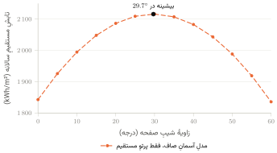
تفسیر. بیشینه حدودِ 30° است و منحنی نزدیکِ بیشینه بسیار صاف است: شیبِ ۲۵ یا ۳۵ درجه کمتر از نیم درصد کم دارد (شکل 3.9). این یک ویژگیِ عمومیِ بهینههای هموار است (مشتق در بیشینه صفر است)، و آزادی میدهد که شیب را بر پایهٔ معیارهای دیگر (فاصلهٔ ردیف، بارِ باد، هزینهٔ سازه) کمی تغییر دهیم. شیبِ 25°ِ فرضِ A-031 از این نظر معقول است. محدودیتهای جدی: فقط پرتوِ مستقیم و فقط آسمانِ صاف؛ تابشِ پخشیده، ابر، بازتابِ زمین و سایهٔ ردیفها نیستند؛ پخشیده، ابر و سایه شیبِ بهینه را کمی پایینتر و بازتابِ زمین آن را کمی بالاتر میبرند (فصلهای ۱۰، ۱۲ و ۱۵).
- فاصلهٔ دو نقطهٔ \((300, 400)\) و \((0, 0)\) متر چیست؟
- اگر باد از شمال بوزد (\(0^\circ\))، فاصلهٔ پاییندستِ توربینِ دوم در مثال 3.18 چقدر است؟
- تندیِ نوکِ پره در 12 rpm و قطرِ 150 m چیست؟
- با سریِ تیلور، \(\sqrt{1 + x}\) را تا جملهٔ خطی تقریب بزنید و برای \(x = 0.1\) بیازمایید.
- چرا جستوجوی بخشِ طلایی در هر گام فقط یک ارزیابیِ تازه لازم دارد؟
- اگر تابعِ هدف دو قله داشته باشد، جستوجوی بخشِ طلایی چه میکند؟
- چرا شیبِ بهینهٔ پرتوِ مستقیم نزدیکِ عرضِ جغرافیایی است؟
- حجمِ بتنِ فونداسیونی با قطرِ 22 m و عمقِ 3.2 m چقدر است؟
3.2.15 مختصاتِ جغرافیایی و فاصله روی زمین
مسئله. جای توربینها، دکل و پست در سندهای پروژه معمولاً با عرض و طولِ جغرافیایی داده میشود، اما طراح به متر نیاز دارد: فاصلهٔ دو توربین بر حسبِ قطرِ روتور، طولِ کابل، فاصله تا مرزِ زمین. عرض و طول زاویهاند، نه طول؛ و یک درجه طول در همهجا یک اندازه نیست.
هندسهٔ کره. اگر زمین را کرهای به شعاعِ \(R\) بگیریم، یک درجه عرض (در امتدادِ نصفالنهار) همهجا \(R\pi/180 \approx 111.2\ \text{km}\) است. اما مدارهای همعرض دایرههایی به شعاعِ \(R\cos\phi\) هستند، پس یک درجه طول در عرضِ \(\phi\) فقط \(111.2\cos\phi\) کیلومتر است. برای فاصلهٔ دقیق میانِ دو نقطه، فرمولِ هاورسین (به انگلیسی haversine) کوتاهترین مسیر روی کره (کمانِ دایرهٔ عظیمه) را میدهد:
\[ \begin{aligned} a &= \sin^{2}\frac{\Delta\phi}{2} + \cos\phi_1\cos\phi_2\sin^{2}\frac{\Delta\lambda}{2} \\ d &= 2R\arcsin\sqrt{a} \end{aligned} \tag{3.19}\]
\(\phi\) عرض و \(\lambda\) طولِ جغرافیایی است. برای محوطهای به اندازهٔ چند کیلومتر، صفحهٔ محلی کافی است: با مبدأیی در \((\phi_0, \lambda_0)\)، جابهجاییِ شرقی \(R\,\Delta\lambda\cos\phi_0\) و شمالی \(R\,\Delta\phi\) (زاویهها بر حسبِ رادیان). نقشهبرداریِ رسمی از بیضیگون و سامانهٔ تصویرِ استاندارد استفاده میکند (فصلهای ۵ و ۲۹)؛ کره و صفحهٔ محلی برای غربالگری و وارسیاند.
مثال 3.22 (فاصلهها و جهتها در چیدمانِ ساختگی) پرسش. سه توربین، دکلِ اندازهگیری و پست با مختصاتِ ساختگیِ A-041 داده شدهاند (طول نسبت به یک نصفالنهارِ مرجعِ \(\lambda_0\)، چون نیروگاهِ P جای واقعی ندارد). مختصاتِ محلی، فاصلهها، جهتها و فاصله بر حسبِ قطرِ روتور (150 m) را بیابید. اگر کسی برای فاصلهٔ شرقی-غربی هم «درجه ضربِ ۱۱۱ کیلومتر» بزند، چقدر خطا میکند؟
پاسخ.
points as (latitude deg N, longitude offset from the reference meridian, deg)
(fictional, A-041; Plant P is not geolocated)
T1 34.0000 N lambda0 +0.0000 -> east 0.0 m, north 0.0 m
T2 34.0000 N lambda0 +0.0081 -> east 746.7 m, north 0.0 m
T3 34.0061 N lambda0 +0.0040 -> east 368.7 m, north 678.3 m
mast 33.9985 N lambda0 -0.0060 -> east -553.1 m, north -166.8 m
substation 33.9850 N lambda0 +0.0200 -> east 1843.7 m, north -1667.9 m
distances and bearings (haversine on a sphere, R = 6371.0 km):
T1-T2: 746.7 m (flat patch 746.7 m), bearing 90.0 deg, 4.98 D
T1-T3: 772.0 m (flat patch 772.0 m), bearing 28.5 deg, 5.15 D
T1-substation: 2486.3 m (flat patch 2486.2 m), bearing 132.1 deg, 16.58 D
mast-T1: 577.7 m (flat patch 577.7 m), bearing 73.2 deg, 3.85 D
one degree of latitude 111.20 km; one degree of longitude at 34 N 92.18 km (x
cos 34 = 0.8290)
T1-T2 with 'degrees x 111 km': 901 m instead of 747 m (+20.6 %)
the T1-T2 row (bearing 90/270 deg) lies within 13 deg of the prevailing
wind axis (from 283 deg): T2 sits in the wake of T1 at about 5 D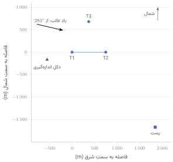
تفسیر. در این مقیاس صفحهٔ محلی و هاورسین تا دهم متر یکیاند؛ پس برای کارِ روزمره صفحهٔ محلی بس است. اما فراموش کردنِ \(\cos\phi\) فاصلهٔ شرقی-غربی را 20.6 % بزرگتر نشان میدهد: توربینهایی که روی کاغذ نُه قطرِ روتور از هم فاصله دارند، در واقع حدودِ هفت و نیم قطر فاصله دارند. نکتهٔ طراحی هم پیداست (شکل 3.10): ردیفِ T1–T2 تقریباً همراستای بادِ غالب (283°، مثال 3.51) است و T2 در ردِ پای T1 با فاصلهٔ حدودِ پنج قطر قرار میگیرد؛ این چیدمانِ ساختگی را فصلِ ۱۴ اصلاح میکند. هشدار: مختصات باید همیشه با مبنای مختصات (دیتوم) و قالبِ عددی (درجهٔ اعشاری یا درجه-دقیقه-ثانیه) ثبت شود؛ جابهجاییِ این دو از خطاهای پرتکرارِ پروژه است (فصلِ ۵).
- یک دقیقهٔ قوسی از عرضِ جغرافیایی چند متر است؟
- در عرضِ ۶۰ درجه، یک درجه طول چند کیلومتر است؟
- چرا برای محوطهٔ نیروگاه صفحهٔ محلی کافی است اما برای خطِ انتقالِ ۲۰۰ کیلومتری نه؟
- جهتِ T1 به T3 حدودِ ۲۹ درجه است. جهتِ T3 به T1 چیست؟
- دو نقطه با \(\Delta\phi = 0.001^\circ\) و \(\Delta\lambda = 0.001^\circ\) در عرضِ ۳۴ درجه چقدر فاصله دارند؟
3.3 ب. مدلهای خطی و پویا
3.3.1 ماتریس و دستگاهِ معادلههای خطی
شهود. شبکهٔ برقِ نیروگاه صدها گره دارد و هر گره یک معادله. نوشتن و حلِ اینهمه معادله با دست ناممکن است، اما اگر معادلهها خطی باشند، همه را میتوان در یک شیء جمع کرد، ماتریس، و با یک الگوریتمِ واحد حل کرد. همین ایده پایهٔ پخشِ بار، تحلیلِ اتصالِ کوتاه، برازشِ داده و شبیهسازیِ دمایی است.
ماتریس و ضرب. ماتریس آرایهای از عددهاست؛ \(\mathbf{A}\) با \(m\) سطر و \(n\) ستون. ضربِ ماتریس در بردار، \(\mathbf{y} = \mathbf{A}\mathbf{x}\)، یعنی هر مؤلفهٔ \(\mathbf{y}\) ضربِ داخلیِ یک سطرِ \(\mathbf{A}\) در \(\mathbf{x}\) است: \(y_i = \sum_j a_{ij}x_j\). ضربِ دو ماتریس، \(\mathbf{C} = \mathbf{A}\mathbf{B}\)، فقط وقتی تعریف شده است که تعدادِ ستونهای \(\mathbf{A}\) با تعدادِ سطرهای \(\mathbf{B}\) برابر باشد، و عموماً \(\mathbf{A}\mathbf{B} \ne \mathbf{B}\mathbf{A}\). ماتریسِ همانی \(\mathbf{I}\) (یک روی قطر، صفر جای دیگر) نقشِ عددِ یک را دارد و وارون \(\mathbf{A}^{-1}\)، اگر وجود داشته باشد، \(\mathbf{A}^{-1}\mathbf{A} = \mathbf{I}\) را برقرار میکند.
دستگاهِ خطی. \(n\) معادله با \(n\) مجهول را میتوان به شکلِ \(\mathbf{A}\mathbf{x} = \mathbf{b}\) نوشت. اگر \(\mathbf{A}\) ناتکین باشد (دترمینانش صفر نباشد)، جوابِ یکتا \(\mathbf{x} = \mathbf{A}^{-1}\mathbf{b}\) است؛ اما در عمل وارون را حساب نمیکنیم، بلکه دستگاه را با حذفِ گاوسی حل میکنیم: با ضرب و تفریقِ سطرها، زیرِ قطر را صفر میکنیم (ماتریسِ بالامثلثی)، سپس از آخرین معادله به عقب جایگذاری میکنیم. برای پایداریِ عددی، در هر ستون بزرگترین عنصر را به جایگاهِ قطر میآوریم (محورگیریِ جزئی). تابعِ کتاب:
def solve_gauss(a, b):
"""Gaussian elimination with partial pivoting, then back substitution."""
a = np.array(a, dtype=float)
b = np.array(b, dtype=float)
n = len(b)
if a.shape != (n, n):
raise ValueError("matrix must be square and match b")
for col in range(n):
pivot = col + int(np.argmax(np.abs(a[col:, col])))
if abs(a[pivot, col]) < 1e-14:
raise np.linalg.LinAlgError("matrix is singular")
if pivot != col:
a[[col, pivot]] = a[[pivot, col]]
b[[col, pivot]] = b[[pivot, col]]
for row in range(col + 1, n):
factor = a[row, col] / a[col, col]
a[row, col:] -= factor * a[col, col:]
b[row] -= factor * b[col]
x = np.zeros(n)
for row in range(n - 1, -1, -1):
x[row] = (b[row] - a[row, row + 1:] @ x[row + 1:]) / a[row, row]
return xمثال 3.23 (شبکهٔ کوچکِ جعبههای تجمیع) پرسش. سه جعبهٔ تجمیع (گرههای ۱ تا ۳) با جریانهای 314.6، 314.6 و 288.4 A از راهِ پنج شاخهٔ کابل به شینهٔ ورودیِ اینورتر (گرهٔ ۴) وصلاند که ولتاژش 1100 V نگه داشته میشود (شکل 3.11؛ مقاومتها فرضی). ولتاژِ گرهها را با روشِ ولتاژِ گره (فصلِ ۶) بیابید.
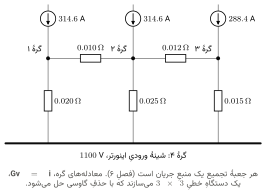
پاسخ. قانونِ جریانِ کیرشهف در هر گره: جریانِ تزریقی برابرِ جمعِ جریانهای بیرونرونده است. با رسانایی \(g = 1/R\)، برای گرهٔ ۱: \(g_{14}(V_1 - V_4) + g_{12}(V_1 - V_2) = I_1\)، و به همین ترتیب برای ۲ و ۳. جملههای \(V_4\) معلوماند و به سمتِ راست میروند:
nodal equations G v = i for three combiner boxes feeding a 1100 V bus
G (S) =
150.00 -100.00 0.00
-100.00 223.33 -83.33
0.00 -83.33 150.00
i (A) = 55314.6 44314.6 73621.7
node voltages, Gaussian elimination: 1106.232, 1106.202, 1105.368 V
node voltages, numpy.linalg.solve: 1106.232, 1106.202, 1105.368 V
condition number of G: 6.26تفسیر. ماتریسِ \(\mathbf{G}\) متقارن است (\(g_{ij} = g_{ji}\)) و قطرش غالب: الگوی همهٔ ماتریسهای رسانایی. ولتاژِ جعبهها چند ولت بالاتر از شینه است، چون جریان از آنها به سوی شینه میرود. حذفِ گاوسیِ کتاب و تابعِ numpy یک جواب میدهند. عددِ وضعیت \(6.3\) کوچک است: یعنی خطای کوچک در ورودیها خطای کوچکی در جواب میسازد (بخش 3.5.1). وارسی: جمعِ جریانهای رسیده به شینه \(\sum g_{i4}(V_i - 1100) = 917.6\ \text{A}\) است، برابرِ جمعِ تزریقها (درست).
3.3.2 پخشِ توان به زبانِ ماتریس
شهود. در شبکهٔ AC توان از گرهای به گرهٔ دیگر جاری میشود، اما نه به سببِ اختلافِ اندازهٔ ولتاژ (که تقریباً همهجا یکی است)، بلکه به سببِ اختلافِ زاویهٔ ولتاژها. برای شبکههای فشارِ قوی، که واکنشی بر مقاومت چیره است، تقریبِ پخشِ توانِ DC (نامی گمراهکننده: این تقریب برای شبکهٔ AC است!) میگوید توانِ گذرنده از خطِ \(i\) به \(j\) با اختلافِ زاویه متناسب است:
\[ P_{ij} = \frac{\theta_i - \theta_j}{x_{ij}}, \qquad \mathbf{P} = \mathbf{B}\,\boldsymbol{\theta} \tag{3.20}\]
که \(x_{ij}\) واکنشیِ خط در واحدِ پریونیت (فصلِ ۷) و \(\mathbf{B}\) ماتریسی همشکلِ ماتریسِ رسانایی است. این همان دستگاهِ خطیِ بخشِ قبل است، با زاویه بهجای ولتاژ. فصلهای ۷ و ۲۸ پخشِ بارِ کامل (غیرِخطی) را میسازند.
مثال 3.24 (سه باس، سه خط) پرسش. پستِ خورشیدیِ نیروگاهِ P (باسِ ۲) 45 MW و پستِ بادی (باسِ ۳) 55 MW تزریق میکنند و هر دو با خطوطی به یکدیگر و به نقطهٔ اتصال (باسِ ۱، مرجعِ زاویه) وصلاند. واکنشیها در پایهٔ 100 MVA فرضیاند. زاویهها و توانِ هر خط را بیابید.
پاسخ. با \(\theta_1 = 0\)، دو معادله برای \(\theta_2\) و \(\theta_3\) میماند:
DC power flow, 100 MVA base: P = B theta; bus 1 slack (theta = 0)
injections: bus 2 (PV) 45 MW, bus 3 (wind) 55 MW; x12 0.08, x13 0.1, x23
0.05 pu
theta2 = 2.441 deg, theta3 = 2.678 deg
flows (MW): 2->1 53.3, 3->1 46.7, 2->3 -8.3
check at the slack: 100.0 MW arrives = 100 MW injected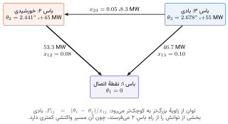
تفسیر. شگفتیِ این مثال این است که 8.3 MW از بادی به خورشیدی میرود (منفیِ جریانِ ۲ به ۳)، و خطِ خورشیدی بیش از تولیدِ خودِ خورشیدی، 53.3 MW، به نقطهٔ اتصال میبرد. توان مسیری را نمیرود که «ما» میخواهیم؛ مسیری را میرود که فیزیک تعیین میکند: به نسبتِ عکسِ واکنشیها. به همین دلیل ظرفیتِ خطوط را با پخشِ بار میسنجند، نه با جمعِ ساده. وارسی: جمعِ توانِ رسیده به باسِ ۱ با جمعِ تزریقها برابر است (تقریبِ DC تلفات ندارد).
3.3.3 کمترین مربعات
مسئله. وقتی بیش از تعدادِ مجهولها داده داریم (شش نقطه برای یک خط با دو پارامتر)، هیچ خطی از همهٔ نقطهها نمیگذرد. کمترین مربعات خطی را برمیگزیند که مجموعِ مربعِ باقیماندهها کمینه شود. در شکلِ ماتریسی، با \(\mathbf{A}\) («ماتریسِ طرح») و بردارِ اندازهگیریهای \(\mathbf{y}\)، ضریبهای \(\mathbf{c}\) از معادلههای نرمال به دست میآیند:
\[ \mathbf{A}^{\mathsf{T}}\mathbf{A}\,\mathbf{c} = \mathbf{A}^{\mathsf{T}}\mathbf{y} \tag{3.21}\]
که \(\mathbf{A}^{\mathsf{T}}\) ترانهادهٔ \(\mathbf{A}\) (سطر و ستون جابهجا) است. فرمولِ شیب و عرض از مبدأ فصلِ ۲ (معادلهٔ 2.8) حالتِ خاصِ همین است. کتابخانههای عددی معمولاً از روشِ پایدارتری (تجزیهٔ QR) استفاده میکنند، چون \(\mathbf{A}^{\mathsf{T}}\mathbf{A}\) ممکن است بدحال باشد (بخش 3.5.1).
مثال 3.25 (ضریبِ دماییِ توانِ ماژول از آزمون) پرسش. توانِ بیشینهٔ یک ماژول در شش دمای سلول در آزمایشگاه اندازهگیری شده است (نقطهها ساختگی). مدلِ \(P = p_0 + p_1(T - 25)\) را با کمترین مربعات برازش دهید و ضریبِ دماییِ نسبی \(\gamma = p_1/p_0\) را بیابید.
پاسخ.
P_max of one module at six cell temperatures (synthetic test points), W:
T (C): 15 25 35 45 55 65
P (W): 568.8 550.3 531.5 510.3 493.2 473.3
model P = p0 + p1 (T - 25); A = [1, T - 25]; normal equations A^T A c = A^T y
normal equations: p0 = 549.95 W, p1 = -1.9143 W/K
numpy lstsq: p0 = 549.95 W, p1 = -1.9143 W/K
gamma = p1 / p0 = -0.3481 %/K (true -0.35 %/K)
residuals (W): -0.29 +0.35 +0.70 -1.36 +0.68 -0.08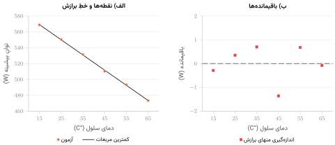
تفسیر. ضریبِ برازششده −0.348 %/K است، نزدیک به −0.35 %/Kِ برگهٔ داده. باقیماندهها کوچک و بیالگواند (شکل 3.13، ب)؛ مدلِ خطی کافی است. اگر الگوی قوسی دیده میشد، باید جملهٔ درجهٔ دوم میافزودیم. وارسی: معادلههای نرمال و تابعِ lstsq یک جواب دادهاند.
3.3.4 مقدارِ ویژه: زمانهای طبیعیِ یک سامانه
شهود. بعضی بردارها وقتی در ماتریسی ضرب میشوند، جهتشان عوض نمیشود؛ فقط کشیده یا فشرده میشوند: \(\mathbf{A}\mathbf{v} = \lambda\mathbf{v}\). چنین \(\mathbf{v}\) را بردارِ ویژه و \(\lambda\) را مقدارِ ویژه مینامند. در سامانههای پویا (بخش 3.3.7)، مقدارهای ویژهٔ ماتریسِ حالت آهنگهای طبیعیِ سامانهاند: هر کدام یک «حالت» از رفتار را توصیف میکند که با \(e^{\lambda t}\) رشد یا میرا میشود. اگر همهٔ مقدارهای ویژه (بخشِ حقیقیشان) منفی باشند، سامانه پایدار است و به تعادل برمیگردد؛ هر کدام \(-1/\lambda\) یک ثابتِ زمانی است. در شبکهٔ برق، همین ایده پایهٔ تحلیلِ پایداریِ نوسانی است (فصلهای ۲۷ و ۲۸).
روشِ توانی. سادهترین الگوریتم برای بزرگترین مقدارِ ویژه (بهلحاظِ اندازه): یک بردارِ دلخواه را بارها در \(\mathbf{A}\) ضرب و نرمال کنید؛ جهتِ آن به جهتِ بردارِ ویژهٔ غالب همگرا میشود.
مثال 3.26 (دمای سیمپیچ و روغنِ ترانسفورماتور) پرسش. مدلِ دمایی دو حالتهای برای ترانسفورماتورِ پست: سیمپیچ (ظرفیتِ گرمایی \(2\times10^{5}\ \text{J/K}\)) گرما را با رسانشِ 4000 W/K به روغن میدهد و روغن (ظرفیتِ \(4\times10^{6}\ \text{J/K}\)) با 2500 W/K به هوا (همه فرضی؛ مدلِ واقعی در فصلِ ۲۵). ماتریسِ حالت را بنویسید، مقدارهای ویژه و ثابتهای زمانی را بیابید.
پاسخ. برای افزایشِ دماها نسبت به هوا، \(\mathbf{T} = (T_\text{w}, T_\text{o})\): \(C_\text{w}\dot T_\text{w} = -G_\text{wo}(T_\text{w} - T_\text{o}) + P_\text{w}\) و \(C_\text{o}\dot T_\text{o} = G_\text{wo}(T_\text{w} - T_\text{o}) - G_\text{oa}T_\text{o} + P_\text{o}\):
transformer winding (w) and oil (o): dT/dt = A T + b P, A in 1/s:
A = [[-0.02000, 0.02000], [0.001000, -0.001625]]
eigenvalues -0.021031 and -0.000594 1/s, both negative: stable
time constants -1/lambda: 48 s (0.8 min) and 1682 s (0.47 h)
power iteration finds the dominant |lambda| -0.021031 1/s in 9 stepsتفسیر. دو زمانِ طبیعی، با فاصلهٔ زیاد: ۴۸ ثانیه (سیمپیچ نسبت به روغن، تند) و ۲۸ دقیقه (کلِ ترانسفورماتور نسبت به هوا، کُند). پس از یک افزایشِ ناگهانیِ بار، دمای سیمپیچ در یکی دو دقیقه چند درجه بالاتر از روغن میایستد و سپس هر دو با هم و آرام بالا میروند. این «دو زمان» دلیلِ آن است که حفاظت و پایشِ ترانسفورماتور هم دمای روغن و هم «نقطهٔ داغِ» سیمپیچ را میسنجد (فصلِ ۲۵). وارسی: هر دو مقدارِ ویژه منفیاند: سامانه پایدار است (درست برای یک جسمِ گرم که به هوا گرما میدهد).
- ماتریسِ \(2\times3\) را در برداری با چند مؤلفه میتوان ضرب کرد؟ نتیجه چند مؤلفه دارد؟
- چرا ماتریسِ رسانایی متقارن است؟
- دستگاهِ \(2x + y = 5\) و \(x - y = 1\) را با حذفِ گاوسی حل کنید.
- در مثال 3.24 اگر \(x_{23}\) بسیار بزرگ شود (خطِ ۲-۳ باز شود)، توانِ هر خط چه میشود؟
- معادلههای نرمال را برای برازشِ خطِ \(y = c_0 + c_1 x\) به سه نقطهٔ \((0,1)\)، \((1,3)\) و \((2,4)\) بنویسید و حل کنید.
- مقدارِ ویژهٔ \(+0.01\ \text{s}^{-1}\) برای یک سامانهٔ دمایی چه معنایی دارد؟
- چرا در حلِ دستگاه، وارونِ ماتریس را حساب نمیکنیم؟
- اگر در مثال 3.26 رسانشِ روغن به هوا نصف شود، کدام ثابتِ زمانی بیشتر عوض میشود؟
3.3.5 عددهای مختلط و فازورها
شهود. ولتاژ و جریانِ شبکه سینوسیاند، با بسامدِ یکسان (50 Hz) اما نه لزوماً همگام: جریانِ یک موتور یا یک کابلِ بلند از ولتاژ عقب یا جلو میافتد. برای توصیفِ هر سینوس فقط دو عدد لازم است: اندازه و زاویهٔ فاز. عددِ مختلط درست همین دو عدد را در یک شیء نگه میدارد و، شگفتانگیز، جمع و ضربِ سینوسها را به جمع و ضربِ ساده تبدیل میکند. این ابزارِ اصلیِ فصلِ ۷ و همهٔ فصلهای شبکه است.
عددِ مختلط. \(z = a + jb\) که \(j^{2} = -1\) (مهندسانِ برق \(j\) را بهجای \(i\) بهکار میبرند، چون \(i\) جریان است). \(a\) بخشِ حقیقی و \(b\) بخشِ موهومی است؛ \(z\) نقطهای در صفحهٔ مختلط است. همان نقطه را میتوان قطبی نوشت: اندازهٔ \(|z| = \sqrt{a^2 + b^2}\) و زاویهٔ \(\varphi = \operatorname{atan2}(b, a)\). فرمولِ اویلر این دو شکل را پیوند میدهد:
\[ e^{j\varphi} = \cos\varphi + j\sin\varphi, \qquad z = |z|\,e^{j\varphi} = |z|\angle\varphi \tag{3.22}\]
عملها. جمع و تفریق در شکلِ دکارتی آسان است (بخشها را جدا جمع کنید). ضرب و تقسیم در شکلِ قطبی آسان است: اندازهها ضرب و زاویهها جمع میشوند. مزدوج \(z^{*} = a - jb\) زاویه را قرینه میکند و \(z\,z^{*} = |z|^{2}\).
فازور. سینوسِ \(v(t) = \sqrt2\,V\cos(\omega t + \varphi)\) را با فازورِ \(\mathbf{V} = V\angle\varphi\) نمایش میدهیم که \(V\) مقدارِ مؤثر است (قراردادِ کتاب). چون همهٔ کمیتها بسامدِ \(\omega\) را دارند، آن را کنار میگذاریم و فقط اندازه و زاویه را حساب میکنیم. مشتقگیری نسبت به زمان در دنیای فازور ضرب در \(j\omega\) است؛ پس معادلههای دیفرانسیلِ مدار به معادلههای جبری تبدیل میشوند.
امپدانس. نسبتِ فازورِ ولتاژ به فازورِ جریان: \(\mathbf{Z} = \mathbf{V}/\mathbf{I} = R + jX\). مقاومت \(R\) حقیقی است؛ سلف \(j\omega L\) و خازن \(1/(j\omega C)\) موهومیاند. امپدانسهای سری جمع و موازی مثلِ مقاومتها ترکیب میشوند (فصلِ ۶)، فقط با عددهای مختلط.
توانِ مختلط. \(\mathbf{S} = \mathbf{V}\mathbf{I}^{*} = P + jQ\)، با \(P\) توانِ اکتیو و \(Q\) توانِ راکتیو (بخش 2.2.6)؛ \(|\mathbf{S}|\) توانِ ظاهری و \(\cos\varphi = P/|\mathbf{S}|\) ضریبِ توان. با قراردادِ کتاب، جریانِ پسفاز (بارِ سلفی) \(Q > 0\) میدهد. سهضلعیِ \(P\)، \(Q\) و \(|\mathbf{S}|\) مثلثِ توان است.
مثال 3.27 (افتِ ولتاژ و تلفاتِ یک کابلِ 33 kV) پرسش. کابلِ 5 kmِ شبکهٔ جمعآوری امپدانسِ فرضیِ \(0.125 + j0.110\ \Omega/\text{km}\) در هر فاز دارد. اگر انتهای گیرنده 33 kV باشد و 30 MW با ضریبِ توانِ 0.95 پسفاز تحویل دهد، جریان، توانِ مختلط، ولتاژِ ابتدای کابل، افتِ ولتاژ و تلفات را بیابید. افتِ دقیق را با تقریبِ رایجِ \((RP + XQ)/V\) مقایسه کنید.
پاسخ. در هر فاز (ستاره)، \(\mathbf{V}_\text{r} = 33\,000/\sqrt3\angle 0^\circ\) و \(\mathbf{I} = P/(\sqrt3\,V_\text{LL}\cos\varphi)\angle{-\varphi}\)؛ سپس \(\mathbf{V}_\text{s} = \mathbf{V}_\text{r} + \mathbf{Z}\mathbf{I}\):
5 km of 33 kV cable, z = 0.125 + j0.110 ohm/km (assumed): Z = 0.625 + j0.550
ohm
receiving end 33 kV, 30 MW at pf 0.95 lagging: I = 552.5 A at -18.19 deg
S = 3 V I* = 30.00 MW + j9.86 Mvar
sending phase voltage V_s = V_r + Z I = 19476.3 V at 0.532 deg
line-to-line drop: exact 734.0 V (2.22 %); approx (RP + XQ)/V = 732.5 V
cable loss 3 I^2 R = 572.3 kW (1.91 % of 30 MW)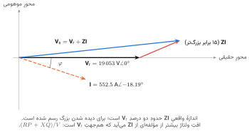
تفسیر. افتِ 2.2 % و تلفاتِ 1.9 %. تقریبِ \((RP + XQ)/V\) فقط 1.5 V با پاسخِ دقیق فاصله دارد، چون افت کوچک است؛ و نشان میدهد چرا توانِ راکتیو ولتاژ را جابهجا میکند: جملهٔ \(XQ\) (اینجا حدودِ یکچهارمِ افت) به جریانِ راکتیو وابسته است، نه به توانِ فروختهشده. فصلهای ۲۰، ۲۷ و ۲۸ از همین برای تنظیمِ ولتاژِ نیروگاه استفاده میکنند. وارسی: \(|\mathbf{S}| = 30/0.95 = 31.58\ \text{MVA}\) و \(\sqrt{30^2 + 9.86^2} = 31.58\) (درست).
3.3.6 تبدیلهای سهفاز
سهفازِ متعادل. سه ولتاژ یا جریان با اندازهٔ برابر و \(120^\circ\) اختلافِ فاز. با عملگرِ \(a = 1\angle 120^\circ\)، مجموعهٔ متعادل \(\mathbf{I}_a\)، \(a^{2}\mathbf{I}_a\)، \(a\,\mathbf{I}_a\) است و جمعشان صفر. چون همه از یک فاز ساخته میشوند، تحلیلِ سامانهٔ متعادل به تحلیلِ یک فاز کاهش مییابد (مثال 3.27).
مؤلفههای متقارن. وقتی سامانه نامتعادل است (اتصالِ کوتاهِ یکفاز به زمین، بارِ نامتعادل)، قضیهٔ فورتسکیو میگوید هر سه فازورِ دلخواه را میتوان جمعِ سه مجموعهٔ متقارن نوشت: مثبت (ترتیبِ عادی)، منفی (ترتیبِ وارونه) و صفر (سه فازورِ همفاز):
\[ \begin{bmatrix} \mathbf{I}_0 \\ \mathbf{I}_1 \\ \mathbf{I}_2 \end{bmatrix} = \frac13 \begin{bmatrix} 1 & 1 & 1 \\ 1 & a & a^{2} \\ 1 & a^{2} & a \end{bmatrix} \begin{bmatrix} \mathbf{I}_a \\ \mathbf{I}_b \\ \mathbf{I}_c \end{bmatrix} \tag{3.23}\]
این تبدیلِ خطی ستونِ تحلیلِ خطاهای نامتعادل است (فصلهای ۷ و ۲۶). مؤلفهٔ منفی میدانی میسازد که خلافِ جهتِ روتور میچرخد و ژنراتورها را گرم میکند؛ مؤلفهٔ صفر از راهِ زمین برمیگردد. تبدیلِ کلارک سه فاز را به دو مؤلفهٔ عمود (\(\alpha\)، \(\beta\)) و یک صفر تبدیل میکند و پایهٔ کنترلِ اینورترها و ژنراتورهای امروزی است (فصلِ ۹).
مثال 3.28 (نامتعادلیِ جریان) پرسش. جریانهای سه فاز در یک فیدرِ نامتعادل \(\mathbf{I}_a = 100\angle 0^\circ\)، \(\mathbf{I}_b = 80\angle{-125^\circ}\) و \(\mathbf{I}_c = 95\angle 118^\circ\) آمپر اند (فرضی). مؤلفههای متقارن و درصدِ نامتعادلی، \(|\mathbf{I}_2|/|\mathbf{I}_1|\)، را بیابید.
پاسخ.
unbalanced currents: Ia 100 /_0, Ib 80 /_-125, Ic 95 /_118 (A)
zero I0 = 6.89 A /_ 62.59 deg
positive I1 = 91.61 A /_ -2.15 deg
negative I2 = 5.93 A /_ -26.96 deg
unbalance |I2|/|I1| = 6.5 %
check: rebuilding Ia from the sequences gives 100.00 Aتفسیر. مؤلفهٔ مثبت (91.6 A) غالب است؛ نامتعادلی 6.5 % است، که برای یک فیدرِ نیروگاهی زیاد است و جریانِ صفرِ 6.9 A از راهِ زمین برمیگردد. ساختنِ دوبارهٔ \(\mathbf{I}_a\) از سه مؤلفه، تبدیل را وارسی میکند. حدهای مجازِ نامتعادلی را الزاماتِ شبکه تعیین میکنند (فصلِ ۲۷).
- \((3 + j4)(1 - j)\) و \(|3 + j4|\) را حساب کنید.
- \(10\angle 30^\circ\) را به شکلِ دکارتی بنویسید.
- امپدانسِ یک سلفِ 10 mH در 50 Hz چیست؟
- چرا \(\mathbf{S} = \mathbf{V}\mathbf{I}^{*}\) و نه \(\mathbf{V}\mathbf{I}\)؟ (راهنما: زاویهها را بنویسید.)
- در مثال 3.27 اگر ضریبِ توان یک باشد (\(Q = 0\))، افتِ تقریبی چه میشود؟
- سه جریانِ \(100\angle 0^\circ\)، \(100\angle{-120^\circ}\) و \(100\angle 120^\circ\) چه مؤلفههای متقارنی دارند؟
- \(a^{3}\) چیست؟ \(1 + a + a^{2}\) چیست؟
- چرا تحلیلِ سامانهٔ سهفازِ متعادل به یک فاز کاهش مییابد؟
3.3.7 معادلهٔ دیفرانسیلِ مرتبهٔ اول و ثابتِ زمانی
شهود. کابلی که ناگهان بارِ بیشتری میبرد، فوراً به دمای نهایی نمیرسد؛ گرم شدنش زمان میبرد، چون باید ظرفیتِ گرماییِ خودش را پُر کند. هر چه به دمای نهایی نزدیکتر شود، کندتر گرم میشود، چون گرمای بیشتری به محیط میدهد. این رفتار، میل به سوی تعادل با آهنگی متناسب با فاصله از آن، در نیروگاه همهجا هست: دمای کابل، ترانسفورماتور و ماژول، ولتاژِ خازن (فصلِ ۶)، تندیِ چرخشِ روتور پس از تغییرِ باد، و بسیاری دیگر.
مدل. اگر \(y\) کمیتی باشد که به مقدارِ نهاییِ \(y_\infty\) میل میکند:
\[ \tau\,\frac{\mathrm{d}y}{\mathrm{d}t} = y_\infty - y \quad\Longrightarrow\quad y(t) = y_\infty + \big(y(0) - y_\infty\big)\,e^{-t/\tau} \tag{3.24}\]
ثابتِ زمانی \(\tau\) زمانی است که سامانه \(1 - e^{-1} \approx 63\,\%\) از راه را میپیماید. پس از \(3\tau\)، ۹۵ درصد؛ پس از \(5\tau\)، بیش از ۹۹ درصد. برای کابل، \(\tau = C_\text{th}R_\text{th}\): ظرفیتِ گرمایی ضربِ مقاومتِ گرمایی؛ همان شکلِ \(RC\)ِ مدارِ الکتریکی. این قیاس (گرما مثلِ بار، دما مثلِ ولتاژ) یکی از سودمندترین ابزارهای مهندسی است.
مثال 3.29 (گرم شدنِ کابل پس از افزایشِ بار) پرسش. کابلی با ثابتِ زمانیِ 1800 s و افزایشِ دمای نهاییِ 40 K (هر دو فرضی) از دمای محیط شروع به گرم شدن میکند. افزایشِ دما در ساعتِ اول چقدر است؟ معادله را با روشهای عددیِ اویلر و رونگه-کوتا با گامهای مختلف حل کنید و خطای هر کدام را با پاسخِ دقیق بسنجید.
پاسخ. پاسخِ دقیق: \(y(3600) = 40(1 - e^{-2}) = 34.59\ \text{K}\). روشِ اویلر سادهترین روش است: شیب را در آغازِ هر گام حساب کن و فرض کن در کلِ گام ثابت است، \(y_{k+1} = y_k + \Delta t\,f(t_k, y_k)\). روشِ رونگه-کوتای مرتبهٔ چهار شیب را در چهار نقطهٔ گام میسنجد و میانگینِ وزندارشان را بهکار میبرد:
def rk4(f: Callable, y0, t0: float, t1: float, dt: float):
"""Classical fourth-order Runge-Kutta with a fixed step. Returns (t, y)."""
n = int(round((t1 - t0) / dt))
t = t0 + dt * np.arange(n + 1)
y = np.empty((n + 1,) + np.shape(y0))
y[0] = y0
for k in range(n):
tk, yk = t[k], y[k]
k1 = np.asarray(f(tk, yk))
k2 = np.asarray(f(tk + dt / 2, yk + dt / 2 * k1))
k3 = np.asarray(f(tk + dt / 2, yk + dt / 2 * k2))
k4 = np.asarray(f(tk + dt, yk + dt * k3))
y[k + 1] = yk + dt / 6 * (k1 + 2 * k2 + 2 * k3 + k4)
return t, ycable temperature rise after a load step: tau = 1800 s, final rise 40 K
dt (s) Euler err (K) RK4 err (K) at t = 3600 s
900 2.9134 -8.58e-03
600 1.9018 -1.47e-03
300 0.9271 -8.00e-05
60 0.1814 -1.15e-07
exact rise at 3600 s: 34.5866 K (1 - e^-2 of the final value)
Euler with dt = 4500 s (> 2 tau): 0, 100, -50, 175, -162, 344, -416 ...
(oscillates and grows)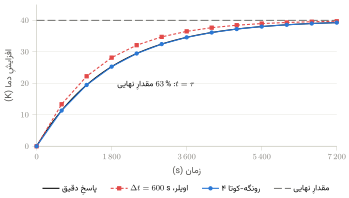
تفسیر. با گامِ 600 s، اویلر 1.9 K خطا دارد و رونگه-کوتا 0.0015 K. نصف کردنِ گام، خطای اویلر را تقریباً نصف و خطای رونگه-کوتا را تقریباً شانزده بار کم میکند: اویلر مرتبهٔ یک و رونگه-کوتا مرتبهٔ چهار است (آزمایشگاهِ بخش 3.8 این را اندازه میگیرد). سطرِ آخر هشدار میدهد: با گامی بزرگتر از \(2\tau\)، اویلر نهتنها نادرست، بلکه ناپایدار است (بخش 3.3.8).
3.3.8 متغیرِ حالت و پایداری
متغیرِ حالت. حالتِ یک سامانه کوچکترین مجموعه از کمیتهاست که اگر اکنون بدانیم، با دانستنِ ورودیهای آینده، کلِ رفتارِ آینده را میدانیم. برای کابل، حالت دمای آن است؛ برای ترانسفورماتور، دمای سیمپیچ و روغن (مثال 3.26)؛ برای باتری، انرژیِ ذخیره (یا وضعیتِ شارژ). مدلِ فضای حالت سامانه را به شکلِ \(\dot{\mathbf{x}} = \mathbf{f}(\mathbf{x}, \mathbf{u}, t)\) مینویسد؛ اگر خطی باشد، \(\dot{\mathbf{x}} = \mathbf{A}\mathbf{x} + \mathbf{B}\mathbf{u}\). شبیهسازیهای بهرهبرداری (فصلهای ۱۹ و ۲۰) همه همین شکل را دارند.
مثال 3.30 (انرژیِ باتری در یک روز) پرسش. باتریِ سناریوی S1 روز را با 4 MWh (کفِ ۱۰ درصد) شروع میکند، از ساعتِ ۹ تا ۱۵ با 5 MW شارژ و از ۱۸ تا ۲۲ با 6 MW دشارژ میشود (برنامهٔ فرضی). بازدهِ یکطرفه \(\sqrt{0.86}\) است (فرضِ A-010). انرژیِ ذخیره را در طولِ روز حساب کنید، وارسی کنید که در بازهٔ مجاز میماند، و تلفات را بیابید.
پاسخ. معادلهٔ حالت با قراردادِ «دشارژ مثبت» (بخش 2.3.5):
\[ \frac{\mathrm{d}E}{\mathrm{d}t} = \begin{cases} -\eta\,P & P < 0 \ \text{(charge)} \\ -P/\eta & P \ge 0 \ \text{(discharge)} \end{cases} \tag{3.25}\]
با توانِ ثابت در هر ساعت، انتگرال در هر ساعت دقیق است:
dE/dt = -P eta_c (charging, P < 0) or -P / eta_d (discharging, P > 0);
one-way efficiency sqrt(0.86) = 0.927 (scenario S1)
start 4.0 MWh; charge 5 MW from 09 to 15; discharge 6 MW from 18 to 22
after charging (15:00): 31.82 MWh; after discharging (22:00): 5.94 MWh
window 4..36 MWh (10..90 % of 40 MWh): min 4.00, max 31.82 -> inside
energy in 30 MWh, out 24 MWh, stored change +1.94 MWh -> losses 4.06 MWh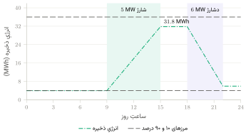
تفسیر. از 30 MWh گرفتهشده و 24 MWh تحویلشده، 1.94 MWh در باتری مانده و 4.06 MWh تلف شده است: همان ۱۴ درصدِ تلفاتِ رفتوبرگشت. وارسی: پایستگیِ انرژی: ورودی = خروجی + تغییرِ ذخیره + تلفات (درست). این شبیهسازی ساده، هستهٔ مدلِ دیسپاچِ فصلهای ۱۹ و ۲۰ است.
پایداری. سامانهٔ \(\dot{\mathbf{x}} = \mathbf{A}\mathbf{x}\) پایدار است اگر بخشِ حقیقیِ همهٔ مقدارهای ویژهٔ \(\mathbf{A}\) منفی باشد: هر اختلالی با زمان میرا میشود. اگر یکی مثبت باشد، اختلال رشد میکند. اما یک سامانهٔ فیزیکیِ پایدار میتواند در شبیهسازی ناپایدار شود، اگر روشِ عددی نامناسب باشد. برای معادلهٔ \(\dot y = -y/\tau\)، اویلر در هر گام \(y\) را در \((1 - \Delta t/\tau)\) ضرب میکند؛ اگر \(\Delta t > 2\tau\)، این ضریب از \(-1\) کمتر است و پاسخ با علامتِ متناوب رشد میکند.
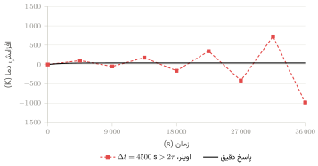
درسِ عملی. در سامانههایی با چند ثابتِ زمانیِ بسیار متفاوت (مثلِ سیمپیچ و روغن در مثال 3.26: ۴۸ ثانیه و ۲۸ دقیقه)، کوچکترین ثابتِ زمانی گامِ مجازِ روشهای صریح را محدود میکند، حتی اگر به رفتارِ تند علاقهای نداشته باشیم. چنین سامانههایی را سخت مینامند و روشهای ضمنی برایشان ساخته شدهاند (کتابخانههای عددی آنها را دارند؛ فصلِ ۵). همیشه نتیجهٔ شبیهسازی را با گامِ نصف تکرار کنید: اگر نتیجه عوض شد، گام بزرگ بوده است.
- سامانهای با \(\tau = 10\ \text{min}\) چقدر طول میکشد تا به ۹۵ درصدِ مقدارِ نهایی برسد؟
- پاسخِ \(\tau\dot y = y_\infty - y\) را با جایگذاری در معادله وارسی کنید.
- حالتِ یک توربینِ بادی را (دستکم دو متغیر) نام ببرید.
- چرا در مثال 3.30 انرژیِ تحویلشده کمتر از انرژیِ گرفتهشده است، حتی اگر باتری به نقطهٔ آغاز برگردد؟
- بیشینهٔ گامِ پایدارِ اویلر برای سامانهای با \(\tau = 48\ \text{s}\) چیست؟
- اگر ماتریسِ حالتِ یک سامانه مقدارهای ویژهٔ \(-0.1 \pm j2\) داشته باشد، رفتارِ سامانه چگونه است؟
- چرا رونگه-کوتا در هر گام چهار بار تابع را حساب میکند؟ آیا این هزینه میارزد؟
- قیاسِ گرما و برق را کامل کنید: دما متناظرِ ولتاژ است؛ توانِ گرمایی و ظرفیتِ گرمایی متناظرِ چهاند؟
3.3.9 سامانهٔ پریونیت و اصلاحِ ضریبِ توان
پریونیت. در شبکهای که ولتاژهایش از 1.5 kV تا 132 kV و توانهایش از کیلووات تا صدها مگاوات گستردهاند، مقایسهٔ عددها سخت است. سامانهٔ پریونیت هر کمیت را بر یک مقدارِ پایه تقسیم میکند: معمولاً توانِ پایهٔ \(S_\text{b}\) (مثلاً 100 MVA) برای کلِ شبکه و ولتاژِ پایهٔ \(V_\text{b}\) برای هر سطحِ ولتاژ. بقیهٔ پایهها از این دو ساخته میشوند:
\[ Z_\text{b} = \frac{V_\text{b}^{2}}{S_\text{b}}, \qquad I_\text{b} = \frac{S_\text{b}}{\sqrt3\,V_\text{b}}, \qquad Z_\text{pu} = \frac{Z}{Z_\text{b}} \tag{3.26}\]
سه سود: (۱) ولتاژها همه نزدیکِ یکاند و انحرافها بیدرنگ دیده میشوند؛ (۲) امپدانسِ ترانسفورماتور در دو سو یکی میشود و ترانسفورماتورِ ایدهآل از مدل حذف میشود؛ (۳) امپدانسِ تجهیزاتِ همنوع با اندازههای مختلف در بازههای مشابه است و خطای داده آسان دیده میشود. پخشِ توانِ بخش 3.3.2 در همین سامانه حساب شد؛ فصلِ ۷ آن را کامل میکند.
اصلاحِ ضریبِ توان. بارِ سلفی جریانِ راکتیو میکشد که توانی نمیبرد اما کابلها و ترانسفورماتورها را پُر میکند و افتِ ولتاژ میسازد (مثال 3.27). خازن جریانِ راکتیوِ مخالف تولید میکند. برای بردنِ ضریبِ توانِ بارِ \(P\) از \(\cos\varphi_1\) به \(\cos\varphi_2\)، از مثلثِ توان:
\[ Q_\text{c} = P\,\big(\tan\varphi_1 - \tan\varphi_2\big) \tag{3.27}\]
مثال 3.31 (پریونیت و جبرانسازیِ راکتیو) پرسش. (الف) با پایهٔ 100 MVA و 33 kV، امپدانسِ کابلِ مثال 3.27 و جریانِ 552.5 A را به پریونیت بنویسید. (ب) بخشی از نیروگاه 50 MW با ضریبِ توانِ 0.90 تحویل میدهد. چند مگاوار جبرانسازی آن را به 0.98 میرساند و توانِ ظاهری چقدر کم میشود؟
پاسخ.
per-unit system, S_base = 100 MVA, V_base = 33 kV:
Z_base = V^2/S = 10.890 ohm; I_base = S/(sqrt(3) V) = 1749.5 A
cable 0.625 + j0.550 ohm = 0.05739 + j0.05051 pu
30 MW at pf 0.95 -> I = 552.5 A = 0.3158 pu
power-factor correction: 50 MW from pf 0.90 to 0.98 needs
Qc = P (tan phi1 - tan phi2) = 50 (0.4843 - 0.2031) = 14.06 Mvar
apparent power falls from 55.56 to 51.02 MVA (current -8.2 %)تفسیر. کابلِ پنجکیلومتری فقط حدودِ شش صدمِ پریونیت امپدانس دارد: «کوچک» بهطورِ خودکار دیده میشود. جبرانسازیِ 14 Mvar جریان را هشت درصد کم میکند، پس تلفات حدودِ ۱۶ درصد کم میشود (مجذورِ جریان). در نیروگاههای امروزی، اینورترها و توربینها خودشان توانِ راکتیو میسازند و الزاماتِ شبکه تعیین میکند چقدر و در کدام شرایط (فصلهای ۹، ۲۰ و ۲۸).
3.3.10 سامانهٔ مرتبهٔ دوم: ارتعاشِ برج
شهود. کابلی که گرم میشود یک «حافظه» دارد: دمایش. برجی که در باد خم میشود دو حافظه دارد: جابهجایی و تندی؛ و برخلافِ کابل، نوسان میکند: پس از رها شدن از جابهجاییِ اولیه، چندین بار به این سو و آن سو میرود تا آرام شود. سادهترین مدلِ چنین رفتاری جرم-فنر-میراگر است:
\[ m\ddot x + c\,\dot x + k\,x = F(t), \qquad \omega_n = \sqrt{k/m}, \qquad \zeta = \frac{c}{2\sqrt{km}} \tag{3.28}\]
که \(\omega_n\) بسامدِ طبیعی (بر حسبِ رادیان بر ثانیه؛ \(f_n = \omega_n/2\pi\)) و \(\zeta\) نسبتِ میرایی است. با \(\zeta < 1\) (زیرمیرا) پاسخِ آزاد نوسانی است که پوشش با \(e^{-\zeta\omega_n t}\) کم میشود. با نوشتنِ \(y_1 = x\) و \(y_2 = \dot x\)، این معادلهٔ مرتبهٔ دوم به دو معادلهٔ مرتبهٔ اول تبدیل میشود (بخش 3.3.8) و با رونگه-کوتا حل میشود.
تشدید. اگر نیروی \(F\) سینوسی با بسامدِ \(f\) باشد، دامنهٔ پاسخ نسبت به پاسخِ ایستا در ضریبِ بزرگنمایی ضرب میشود:
\[ |H(r)| = \frac{1}{\sqrt{(1 - r^{2})^{2} + (2\zeta r)^{2}}}, \qquad r = \frac{f}{f_n} \tag{3.29}\]
نزدیکِ \(r = 1\) و با میراییِ کم، \(|H|\) بسیار بزرگ میشود (\(1/(2\zeta)\)): تشدید. روتورِ توربین برج را با بسامدِ چرخش (\(1P\)) و بسامدِ عبورِ پرهها (\(3P\)) تحریک میکند؛ طراحِ برج باید بسامدِ طبیعی را دور از هر دو نگه دارد (فصلهای ۴ و ۱۱).
مثال 3.32 (ارتعاشِ آزاد و تشدیدِ برج) پرسش. بالای برج و ناسل را جرمِ معادلِ 300 t با بسامدِ طبیعیِ 0.25 Hz و میراییِ یک درصد مدل کنید (همه فرضی). (الف) پاسخِ آزاد از جابهجاییِ 0.5 m را با رونگه-کوتا حل کنید و کاهشِ لگاریتمیِ دامنه را با نظریه بسنجید. (ب) ضریبِ بزرگنمایی را برای \(1P\) و \(3P\) در 10 rpm بیابید.
پاسخ.
tower and nacelle as mass-spring-damper: m x'' + c x' + k x = F(t)
m = 300 t, f_n = 0.25 Hz, damping ratio 1 % (all assumed): k = m (2 pi
f_n)^2 = 740 kN/m
free vibration from 0.5 m (RK4, dt 0.01 s): period 4.0 s; log decrement
0.0628 (theory 2 pi zeta = 0.0628)
amplitude after 60 s: 0.195 m
dynamic amplification |H| = 1/sqrt((1-r^2)^2 + (2 zeta r)^2):
1P at 10 rpm: r = 0.667, |H| = 1.80; 3P: r = 2.00, |H| = 0.33; at r = 1:
50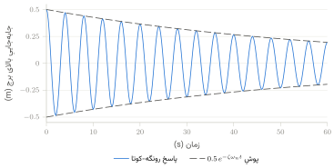
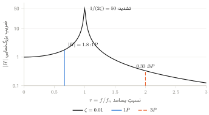
تفسیر. (الف) کاهشِ لگاریتمیِ اندازهگیریشده از شبیهسازی (\(0.0628\)) با نظریه (\(2\pi\zeta\)) یکی است: وارسیِ روشِ عددی با پاسخِ تحلیلی. با میراییِ یک درصد، پس از یک دقیقه هنوز ۴۰ درصدِ دامنه مانده است: برجهای بلند بسیار کممیرااند. (ب) بسامدِ طبیعیِ 0.25 Hz میانِ \(1P\) (0.167 Hz) و \(3P\) (0.5 Hz) است: طراحیِ «نرم-سخت» رایجِ برجهای امروزی. \(1P\) دامنه را ۱٫۸ برابر و \(3P\) آن را ۰٫۳۳ برابر میکند؛ اما اگر توربین در تندیِ چرخشیِ 15 rpm کار کند، \(1P\) به 0.25 Hz میرسد و تشدیدِ کامل رخ میدهد. به همین دلیل کنترلرِ توربین از برخی بازههای تندیِ چرخش «عبور» میکند (فصلِ ۱۱). محدودیت: برجِ واقعی چند مُدِ ارتعاشی و میراییِ آیرودینامیکی دارد؛ تحلیلِ رسمی کارِ سازنده و طراحِ سازه است.
3.3.11 دستگاهِ غیرِخطی: پخشِ بار با نیوتن-رافسون
مسئله. پخشِ توانِ DC (بخش 3.3.2) تقریب بود. معادلههای واقعیِ پخشِ بار غیرِخطیاند: توان به حاصلضربِ ولتاژها و به سینوس و کسینوسِ اختلافِ زاویهها وابسته است. برای حلِ دستگاهِ غیرِخطیِ \(\mathbf{f}(\mathbf{x}) = \mathbf{0}\)، روشِ نیوتنِ یکمتغیره (بخش 3.5.2) به چند متغیر تعمیم مییابد: بهجای مشتق، ژاکوبی \(\mathbf{J}\) (ماتریسِ همهٔ مشتقهای جزئی)، و بهجای تقسیم، حلِ یک دستگاهِ خطی:
\[ \mathbf{J}(\mathbf{x}_k)\,\Delta\mathbf{x} = -\mathbf{f}(\mathbf{x}_k), \qquad \mathbf{x}_{k+1} = \mathbf{x}_k + \Delta\mathbf{x} \tag{3.30}\]
این روشِ نیوتن-رافسون موتورِ همهٔ نرمافزارهای پخشِ بار است و ترکیبی است از سه ابزارِ این فصل: مشتقِ جزئی، ماتریس و ریشهیابی.
مثال 3.33 (ولتاژِ باسِ نیروگاه) پرسش. باسِ نیروگاه با خطی به امپدانسِ \(0.01 + j0.05\) پریونیت (فرضی) به شبکهٔ «بینهایت» (ولتاژ و زاویهٔ ثابت) وصل است و 50 MW با ضریبِ توانِ یک تزریق میکند. ولتاژ و زاویهٔ باسِ نیروگاه را با نیوتن-رافسون بیابید.
پاسخ. مجهولها \(\theta_2\) و \(V_2\) اند و معادلهها اختلافِ توانِ اکتیو و راکتیوِ محاسبهشده با مقدارِ خواسته. ژاکوبی با تفاضلِ عددی ساخته شده است:
two buses: bus 1 slack 1.0 /_ 0 pu; plant bus 2 injects P = 0.50, Q = 0 pu;
line z = 0.01 + j0.05 pu (assumed, 100 MVA base)
iteration theta2 (deg) V2 (pu) largest mismatch (pu)
0 0.00000 1.000000 5.00e-01
1 1.43239 1.005000 6.05e-03
2 1.42589 1.004667 2.13e-06
3 1.42589 1.004667 5.22e-13
solution V2 = 1.00467 pu at 1.426 deg; the plant bus voltage rises 0.47 %
mismatch falls roughly as the square of the previous one: quadratic
convergenceتفسیر. سه تکرار تا دقتِ \(10^{-13}\): همگراییِ درجهٔ دوِ نیوتن در دو بُعد. ولتاژِ باسِ نیروگاه 0.47 % بالا رفته است: نیروگاهی که توانِ اکتیو تزریق میکند، ولتاژِ نقطهٔ اتصالِ خود را بالا میبرد، بهویژه در شبکههای ضعیف با نسبتِ \(R/X\) بزرگ. این یکی از دلایلی است که الزاماتِ شبکه از نیروگاه میخواهند توانِ راکتیو را برای کنترلِ ولتاژ تنظیم کند (فصلهای ۲۷ و ۲۸). وارسی: تقریبِ \(\Delta V \approx RP + XQ\) پریونیت (\(0.01 \times 0.5 = 0.005\)) همان جهت و بزرگی را میدهد.
- امپدانسِ پایه در 132 kV و 100 MVA چیست؟
- چرا امپدانسِ ترانسفورماتور در پریونیت در دو سوی آن یکی است؟
- چند مگاوار لازم است تا 20 MW از ضریبِ توانِ 0.85 به 0.95 برسد؟
- اگر میراییِ برج دو برابر شود، ضریبِ بزرگنمایی در تشدید چه میشود؟
- در چه تندیِ چرخشی \(3P\) با بسامدِ طبیعیِ 0.25 Hz برابر میشود؟
- معادلهٔ \(m\ddot x + c\dot x + kx = 0\) را به دو معادلهٔ مرتبهٔ اول تبدیل کنید.
- چرا نیوتن-رافسون به یک دستگاهِ خطی در هر تکرار نیاز دارد؟
- اگر نیروگاه در مثال 3.33 توانِ راکتیوِ منفی (جذب) داشته باشد، ولتاژ چه میشود؟
3.3.12 ماتریسِ امپدانسِ باس و جریانِ اتصالِ کوتاه
شهود. اگر در باسی اتصالِ کوتاهِ سهفاز رخ دهد، جریانِ خطا با ولتاژِ پیش از خطا تقسیم بر امپدانسِ معادلِ تونن در آن باس برابر است (فصلِ ۶). در شبکهای با چند باس، امپدانسِ تونن هر باس از ماتریسِ امپدانسِ باس خوانده میشود: وارونِ ماتریسِ ادمیتانسِ باس، \(\mathbf{Z}_\text{bus} = \mathbf{Y}_\text{bus}^{-1}\). عنصرِ قطریِ \(Z_{kk}\) امپدانسِ تونن در باسِ \(k\) است و جریانِ خطای سهفازِ متقارن، با ولتاژِ پیش از خطای یک پریونیت:
\[ I_{\text{f},k} = \frac{1}{|Z_{kk}|}\ \text{pu} \tag{3.31}\]
ساختنِ \(\mathbf{Y}_\text{bus}\) قاعدهٔ سادهای دارد: هر عنصرِ قطری جمعِ ادمیتانسهای وصل به آن باس است (از جمله ادمیتانسِ منبع یا زمین)، و هر عنصرِ غیرِقطری منفیِ ادمیتانسِ میانِ دو باس. همان الگوی ماتریسِ رسانایی (مثال 3.23)، با عددهای مختلط.
مثال 3.34 (سطحِ اتصالِ کوتاه در شبکهٔ جمعآوری) پرسش. شبکهٔ سهباسیِ مثال 3.24 را با امپدانسهای مختلطِ خطوط (\(0.010 + j0.080\)، \(0.012 + j0.100\) و \(0.006 + j0.050\) پریونیت) در پایهٔ 100 MVA و 33 kV، و شبکهٔ سراسری پشتِ امپدانسِ \(j0.080\) پریونیت در باسِ ۱ (همه فرضی) در نظر بگیرید. جریانِ اتصالِ کوتاهِ سهفاز را در هر باس بیابید (سهمِ خودِ نیروگاه را نادیده بگیرید).
پاسخ.
three buses on a 33 kV, 100 MVA base; grid behind j0.080 pu at bus 1 (assumed)
bus Z_kk (pu) fault current |1/Z_kk| (pu) (kA)
1 0.00000 + j0.08000 12.50 21.9
2 0.00643 + j0.13217 7.56 13.2
3 0.00686 + j0.13652 7.32 12.8
three-phase bolted fault, prefault 1.0 pu, plant contribution neglected
the diagonal of Z_bus = Y_bus^-1 is the Thevenin impedance seen at each busتفسیر. جریانِ خطا در باسِ اتصال 21.9 kA است و هر چه از شبکه دورتر شویم (امپدانسِ خطوط افزوده شود)، کمتر: 13.2 و 12.8 kA. این عددها ظرفیتِ قطعِ کلیدها و تحملِ اتصالِ کوتاهِ کابلها و شینهها را تعیین میکنند (فصلهای ۲۴ تا ۲۶). محدودیتهای مهم: سهمِ اینورترها و ژنراتورهای توربینها (که جریانِ خطای محدود اما غیرِصفر دارند)، مؤلفهٔ DCِ جریانِ خطا و خطاهای نامتقارن (با مؤلفههای متقارنِ بخش 3.3.6) نیامدهاند؛ محاسبهٔ رسمی با روشِ استانداردِ حاکم و دادهٔ شبکه از بهرهبردار انجام میشود.
- چرا عنصرِ قطریِ \(\mathbf{Z}_\text{bus}\) امپدانسِ تونن است؟
- اگر امپدانسِ شبکهٔ سراسری نصف شود (شبکهٔ قویتر)، جریانِ خطا در باسِ ۱ چه میشود؟
- جریانِ پایهٔ 33 kV و 100 MVA چیست؟ \(7.56\) پریونیت چند کیلوآمپر است؟
- چرا افزودنِ نیروگاه به شبکه جریانِ خطای تجهیزاتِ موجود را بیشتر میکند؟
3.3.13 سیگنالِ دورهای، سریِ فوریه و هارمونیکها
شهود. ولتاژِ شبکه تقریباً یک سینوسیِ 50 Hz است، اما جریانِ بسیاری از تجهیزات (یکسوکنندهها، اینورترها، ترانسفورماتورِ اشباعشده) سینوسیِ خالص نیست. ژوزف فوریه نشان داد که هر شکلموجِ دورهایِ معقول را میتوان جمعِ سینوسیهایی با بسامدهای \(f_1, 2f_1, 3f_1, \dots\) نوشت. سینوسیِ \(h\)اُم هارمونیکِ مرتبهٔ \(h\) است:
\[ x(t) = A_0 + \sum_{h=1}^{\infty} A_h \sin(2\pi h f_1 t + \varphi_h) \tag{3.32}\]
\(A_0\) مقدارِ میانگین (مؤلفهٔ DC)، \(A_h\) دامنهٔ اوج و \(\varphi_h\) فازِ هارمونیکِ \(h\) است. دو ابزارِ کلیدی از این نمایش میآیند:
- مقدارِ مؤثر (RMS). چون سینوسیهای با بسامدِ مختلف در یک دوره «متعامد»ند (میانگینِ حاصلضربشان صفر است)، مربعِ مقدارِ مؤثر جمعِ مربعِ مقدارهای مؤثرِ هارمونیکهاست؛ همان قضیهٔ فیثاغورس، در فضایی با بینهایت بُعد:
\[ X_\text{rms}^{2} = A_0^{2} + \sum_{h \ge 1} \frac{A_h^{2}}{2} \tag{3.33}\]
- اعوجاجِ هارمونیکیِ کل (به انگلیسی total harmonic distortion, THD): اندازهٔ همهٔ هارمونیکهای غیرِاصلی نسبت به هارمونیکِ اصلی:
\[ \text{THD} = \frac{\sqrt{\sum_{h \ge 2} A_h^{2}}}{A_1} \tag{3.34}\]
تقارنها کار را ساده میکنند. شکلموجی که نیمهٔ منفیاش قرینهٔ نیمهٔ مثبت باشد (تقارنِ نیمموج) هیچ هارمونیکِ زوجی ندارد. در سامانههای سهفازِ متعادل، هارمونیکهای مضربِ ۳ در جریانِ خط حذف میشوند (فصلِ ۷). پس جریانِ یک یکسوکنندهٔ ششپالسی فقط هارمونیکهای \(h = 6k \pm 1\) دارد: ۵، ۷، ۱۱، ۱۳ و…
مثال 3.35 (جریانِ بلوکیِ یک یکسوکننده) پرسش. یکسوکنندهٔ دیودیِ ششپالسیِ ایدهآل (مثلاً در تغذیهٔ کمکیِ یک تجهیزِ قدیمی؛ فرضی) جریانی بلوکی با پهنای ۱۲۰ درجه در هر نیمدوره میکشد. دامنهٔ هارمونیکها، مقدارِ مؤثر و اعوجاجِ هارمونیکیِ کل را بیابید. اگر فقط تا هارمونیکِ ۱۳ را اندازه بگیریم، چه خطایی میکنیم؟
پاسخ.
120-degree block current of a six-pulse diode rectifier, I_d = 1 (assumed)
RMS of the block: sqrt(2/3) = 0.8165
fundamental peak 2 sqrt(3) / pi = 1.1027 (RMS 0.7797)
harmonic h: 1 3 5 7 9 11 13
A_h / A_1: 1.000 0.000 0.200 0.143 0.000 0.091 0.077
THD from harmonics up to 13: 27.3 %
THD from harmonics up to 25: 29.0 %
THD from harmonics up to 49: 30.0 %
THD from the RMS values: sqrt(I^2 - I_1^2) / I_1 = 31.1 %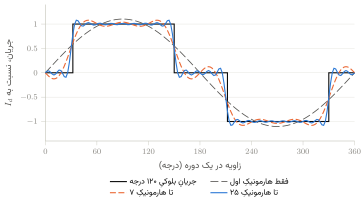
تفسیر. دامنهٔ هر هارمونیک \(1/h\) دامنهٔ اصلی است و هارمونیکهای ۳ و ۹ صفرند، همانطور که تقارن پیشبینی میکرد. اعوجاجِ کل 31.1 % است، اما جمعِ هارمونیکها تا مرتبهٔ ۱۳ فقط 27.3 % میدهد: دنبالهٔ هارمونیکهای بالا آهسته کم میشود. پس هر عددِ اعوجاج باید بگوید تا کدام مرتبه حساب شده است؛ استانداردهای کیفیتِ توان این مرتبه را مشخص میکنند (فصلِ ۲۷). شکل 3.20 نشان میدهد که با افزودنِ هارمونیکها شکل به بلوک نزدیک میشود، اما کنارِ پرشها نوسانی باقی میماند (پدیدهٔ گیبس) که با افزودنِ جملهها از بین نمیرود، فقط باریکتر میشود.
3.3.14 نمونهبرداری، تبدیلِ فوریهٔ گسسته و دگرنمایی
از سیگنالِ پیوسته به عدد. دستگاههای اندازهگیری و کنترلکنندهها سیگنال را در لحظههای گسسته نمونهبرداری میکنند: \(x_n = x(n/f_s)\)، که \(f_s\) بسامدِ نمونهبرداری است. اگر \(N\) نمونه دقیقاً یک دورهٔ کامل را بپوشانند، تبدیلِ فوریهٔ گسسته (به انگلیسی discrete Fourier transform, DFT)
\[ X_h = \sum_{n=0}^{N-1} x_n\, e^{-j 2\pi h n / N} \tag{3.35}\]
دامنهٔ هارمونیکِ \(h\) را دقیقاً میدهد: \(A_h = 2|X_h|/N\) (برای \(1 \le h < N/2\)). الگوریتمِ تبدیلِ فوریهٔ سریع (FFT) همین محاسبه را بهجای \(N^{2}\) عمل با حدودِ \(N\log_2 N\) عمل انجام میدهد؛ همین است که تحلیلِ طیفی را در هر کنتورِ کیفیتِ توان ممکن کرده است.
دو دام. (۱) نشت (به انگلیسی leakage): اگر پنجرهٔ نمونهها شاملِ تعدادِ درستی دوره نباشد، انرژیِ یک هارمونیک میانِ چند «سطلِ» بسامدی پخش میشود. (۲) دگرنمایی (به انگلیسی aliasing): سینوسیای با بسامدِ \(f\) که با \(f_s\) نمونهبرداری شود، از روی نمونهها با سینوسیای با بسامدِ \(|f - f_s\,\mathrm{round}(f/f_s)|\) قابلِ تشخیص نیست. شرطِ نایکوئیست: \(f_s > 2 f_\text{max}\)، و پیش از مبدلِ آنالوگ به دیجیتال یک فیلترِ ضدِدگرنمایی که بسامدهای بالاتر را حذف کند.
مثال 3.36 (طیفِ جریانِ اینورتر و یک دامِ نمونهبرداری) پرسش. جریانِ یک اینورتر با هارمونیکِ اصلیِ یک پریونیت، هارمونیکِ پنجمِ 0.04 و هفتمِ 0.03 پریونیت (فرضی، A-040) با ۶۴ نمونه در هر دوره ثبت شده است. (الف) دامنهها و اعوجاج را با تبدیلِ فوریهٔ گسسته بیابید. (ب) اگر پنجره ۷۰ نمونه باشد چه میشود؟ (پ) سیگنالِ 50 Hz با نمونهبرداریِ 60 Hz، و هارمونیکِ ۲۵ام (1250 Hz) با نمونهبرداریِ 1 kHz در کجا دیده میشوند؟
پاسخ.
inverter current: 1.0 pu at 50 Hz + 0.04 pu 5th + 0.03 pu 7th (A-040, assumed)
64 samples over one cycle (3.2 kHz); DFT peak amplitudes (pu):
h: 1 2 3 4 5 6 7 8 9
A: 1.000 0.000 0.000 0.000 0.040 0.000 0.030 0.000 0.000
THD = sqrt(0.04^2 + 0.03^2) / 1 = 5.0 %
window of 70 samples (1.09 cycles): bins are 45.7 Hz apart, 50 Hz falls
between bins; largest bins 46 Hz: 0.947, 91 Hz: 0.129, 137 Hz: 0.069
(leakage)
aliasing: a sinusoid of f sampled at fs appears at |f - fs round(f/fs)|
f = 50 Hz, fs = 60 Hz -> appears at 10 Hz
f = 50 Hz, fs = 1000 Hz -> appears at 50 Hz
f = 1250 Hz, fs = 1000 Hz -> appears at 250 Hz
f = 650 Hz, fs = 1000 Hz -> appears at 350 Hz
rule: fs > 2 f_max, and a low-pass filter before the converterتفسیر. (الف) با پنجرهٔ درست، تبدیلِ گسسته دامنهها را تا آخرین رقم بازمیسازد و اعوجاج 5.0 % است. (ب) با ۷۰ نمونه، بسامدِ 50 Hz میانِ دو سطل میافتد: بزرگترین سطل 0.947 بهجای ۱ نشان میدهد و بقیه به سطلهای کناری «نشت» کرده است؛ کنتورهای کیفیتِ توان پنجره را با بسامدِ واقعیِ شبکه همگام میکنند (فصلِ ۲۷). (پ) سیگنالِ 50 Hz با نمونهبرداریِ 60 Hz مثلِ یک نوسانِ 10 Hz دیده میشود، و هارمونیکِ ۲۵ام مثلِ 250 Hz: یک «هارمونیکِ پنجم»ِ دروغین. دادهای که بدونِ فیلترِ مناسب نمونهبرداری شده، با هیچ پردازشِ بعدی درست نمیشود؛ مشخصاتِ ثبتکنندهها در فصلهای ۳۴ و ۳۷ همین را تضمین میکنند.
3.3.15 پاسخِ فرکانسیِ یک سامانهٔ مرتبهٔ اول
ایده. سامانهٔ مرتبهٔ اولِ \(\tau\,\mathrm{d}y/\mathrm{d}t + y = u\) (بخش 3.3.7) را با ورودیِ سینوسیِ \(u = \sin(2\pi f t)\) تحریک کنید. پس از گذرا، خروجی هم سینوسی با همان بسامد است، اما کوچکتر و دیرتر. با فازورها (بخش 3.3.5) و جایگذاریِ \(\mathrm{d}/\mathrm{d}t \to j\omega\):
\[ \begin{aligned} \frac{Y}{U} &= \frac{1}{1 + j\omega\tau} \\ \left|\frac{Y}{U}\right| &= \frac{1}{\sqrt{1 + (\omega\tau)^{2}}} \\ \phi &= \arctan(\omega\tau) \end{aligned} \tag{3.36}\]
در بسامدهای پایین (\(\omega\tau \ll 1\)) خروجی ورودی را دنبال میکند؛ در بسامدهای بالا (\(\omega\tau \gg 1\)) دامنه با \(1/(\omega\tau)\) کم میشود. بسامدِ گوشه \(f_c = 1/(2\pi\tau)\) مرزِ این دو رفتار است و در آن دامنه \(1/\sqrt{2}\) و تأخیرِ فاز ۴۵ درجه است. سامانهٔ مرتبهٔ اول یک فیلترِ پایینگذر است. همین ایده، با ابزارِ کاملترِ تبدیلِ لاپلاس و تابعِ تبدیل، زبانِ طراحیِ کنترل در فصلهای ۲۰ و ۳۴ است.
مثال 3.37 (بادسنجی که تندباد را کوچک میبیند، کابلی که دیر گرم میشود) پرسش. (الف) یک بادسنجِ فنجانی را سامانهٔ مرتبهٔ اول با ثابتِ فاصلهٔ 3 m (فرضی) بگیرید؛ ثابتِ زمانی در تندیِ \(v\) برابرِ \(L_0/v\) است. در 8 m/s، تندبادهای با بسامدهای مختلف با چه نسبتِ دامنهای ثبت میشوند؟ (ب) کابلِ دفنشده با ثابتِ زمانیِ سه ساعت زیرِ چرخهٔ روزانهٔ بار است. نوسانِ دما چقدر میرا و چقدر دیر میشود؟
پاسخ.
cup anemometer as a first-order lag, distance constant 3 m (assumed):
at 8 m/s tau = 3 / 8 = 0.375 s
gust at 0.05 Hz: amplitude ratio 0.993, lag 6.7 deg
gust at 0.20 Hz: amplitude ratio 0.905, lag 25.2 deg
gust at 0.50 Hz: amplitude ratio 0.647, lag 49.7 deg
gust at 1.00 Hz: amplitude ratio 0.391, lag 67.0 deg
gust at 2.00 Hz: amplitude ratio 0.208, lag 78.0 deg
buried cable, tau = 3 h (A-033 variant), daily load cycle f = 1/24 per hour:
amplitude ratio 0.786; lag 38.1 deg = 2.54 h
(the temperature swing is damped and the peak comes later than the load)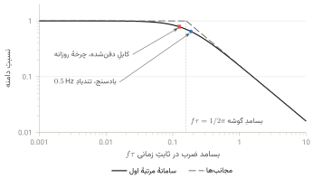
تفسیر. (الف) تندبادِ نیمهرتزی فقط با 65 % دامنهاش ثبت میشود؛ پس شدتِ تلاطم و تندبادهای اندازهگیریشده به پاسخِ حسگر بستگی دارد و مقایسهٔ دو دکل با حسگرهای مختلف بدونِ این نکته گمراهکننده است (فصلِ ۱۳). میانگینِ دهدقیقهای تقریباً بیاثر میماند، چون بسامدش بسیار پایین است. (ب) نوسانِ دمای کابل 79 % نوسانِ «تعادلی» است و قله حدودِ 2.5 ساعت دیرتر میآید؛ این با شبیهسازیِ مثال 3.78 (قلهٔ دما در ساعتِ ۱۴، یک ساعت پس از کابلِ هوایی) همجهت است. محدودیت: چرخهٔ روزانه سینوسیِ خالص نیست؛ برای پاسخِ دقیق آن را به هارمونیکهایش تجزیه میکنیم و هر کدام را جدا عبور میدهیم، که همان قدرتِ ترکیبِ فوریه و سامانههای خطی است.
- مقدارِ مؤثرِ موجی با \(A_1 = 10\) و \(A_5 = 2\) (بدونِ مؤلفهٔ DC) چیست؟ اعوجاجِ آن؟
- چرا جریانِ یکسوکنندهٔ ششپالسی هارمونیکِ سوم ندارد؟
- با نمونهبرداریِ 3.2 kHz، بالاترین هارمونیکِ قابلِ اندازهگیری کدام است؟
- سیگنالی 55 Hz با 50 Hz نمونهبرداری شده است. در کجا دیده میشود؟
- نشتِ طیفی چرا رخ میدهد و چگونه کم میشود؟
- بسامدِ گوشهٔ سامانهای با \(\tau = 0.2\ \text{s}\) چیست؟
- در بسامدِ ده برابرِ گوشه، نسبتِ دامنه تقریباً چقدر است؟
- چرا پاسخِ کندِ بادسنج روی میانگینِ دهدقیقهای اثرِ کمی دارد اما روی تندبادها اثرِ زیاد؟
3.3.16 معادلهٔ دیفرانسیلِ جزئی: پخشِ گرما در خاک
از یک دما به یک نیمرخ. معادلهٔ دمای کابل در بخش 3.3.7 یک متغیرِ حالت داشت: «دمای کابل». اما دمای خاکِ اطرافِ کابل در هر عمق فرق میکند؛ مجهول تابعی از دو متغیر است: \(u(z, t)\). معادلهٔ حاکم، معادلهٔ پخش (یا معادلهٔ گرما)، یک معادلهٔ دیفرانسیلِ جزئی است:
\[ \frac{\partial u}{\partial t} = \alpha\,\frac{\partial^{2} u}{\partial z^{2}} \tag{3.37}\]
\(\alpha\) ضریبِ پخشِ گرمایی خاک است (m²/s). معنای فیزیکی: نقطهای که از میانگینِ همسایههایش سردتر است (انحنای مثبت) گرم میشود. همین معادله پخشِ رطوبت، آلودگی و حتی بخشی از رفتارِ الکتروشیمیاییِ باتری را هم توصیف میکند.
گسستهسازی. عمق را با گامِ \(\Delta z\) و زمان را با گامِ \(\Delta t\) تقسیم میکنیم. مشتقِ دوم را با تفاضلِ مرکزی (بخش 3.5.8) و مشتقِ زمانی را با اویلرِ پیشرو جایگزین میکنیم:
\[ \begin{aligned} u_i^{n+1} &= u_i^{n} + r\left(u_{i+1}^{n} - 2u_i^{n} + u_{i-1}^{n}\right) \\ r &= \frac{\alpha\,\Delta t}{\Delta z^{2}} \end{aligned} \tag{3.38}\]
این روشِ صریح فقط وقتی پایدار است که \(r \le 1/2\). شرط سختگیرانه است: نصف کردنِ \(\Delta z\) گامِ زمانی را چهار برابر کوچک میکند. شرطِ مرزی در سطح، دمای سطح است؛ در کفِ دامنه (به اندازهٔ کافی عمیق) «بدونِ شار».
پاسخِ تحلیلی برای وارسی. اگر دمای سطح سینوسی با بسامدِ زاویهایِ \(\omega\) باشد، پس از گذرا دامنه با عمق بهصورتِ \(e^{-z/d}\) کم و تأخیرِ فاز \(z/d\) رادیان زیاد میشود؛ \(d = \sqrt{2\alpha/\omega}\) عمقِ میرایی است. یک پاسخِ تحلیلیِ ساده، بهترین آزمونِ برنامهٔ عددی است (بخش 3.8.1).
مثال 3.38 (خاک چه چیزی را به کابلِ دفنشده میرساند؟) پرسش. دمای سطحِ خاک روزانه میانِ ۱۰ و ۳۰ درجهٔ سلسیوس نوسان میکند و ضریبِ پخشِ خاک \(0.5 \times 10^{-6}\ \text{m}^2/\text{s}\) است (فرضی، A-043). (الف) با روشِ صریح، دامنه و تأخیر را در عمقهای 0.1، 0.2 و 0.4 m بیابید و با پاسخِ تحلیلی مقایسه کنید. (ب) در عمقِ کابل (0.8 m) نوسانِ روزانه و سالانه (\(\pm 12\ \text{K}\)، فرضی) چقدر است؟ (پ) اگر \(r = 0.6\) بگیریم چه میشود؟
پاسخ.
soil diffusivity 5.0e-07 m2/s (A-043, assumed); surface 20 C +- 10 K daily
sine
explicit scheme: dz = 0.02 m, dt = 300 s, r = alpha dt / dz^2 = 0.375
(stable if <= 0.5)
damping depth of the daily wave d = sqrt(2 alpha / omega) = 0.117 m
depth amplitude: numeric analytic lag (h): numeric analytic
0.1 m 4.27 K 4.26 K 3.2 3.3
0.2 m 1.83 K 1.82 K 6.5 6.5
0.4 m 0.33 K 0.33 K 13.1 13.0
annual wave (+- 12 K, assumed): damping depth 2.24 m
at 0.8 m (cable depth, A-043): amplitude 8.4 K, lag 21 days; daily wave
there 0.0109 K
r = 0.6 (guard removed), 60 steps: max |u - 20| = 9.0e+06 K (unstable)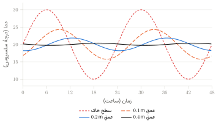
تفسیر. (الف) عددی و تحلیلی تا صدمِ کلوین و دهمِ ساعت میخوانند: برنامه درست است. هر 12 سانتیمتر عمق، دامنهٔ نوسانِ روزانه حدودِ \(e \approx 2.7\) برابر کم میشود و قله دیرتر میرسد (شکل 3.22). (ب) در عمقِ کابل نوسانِ روزانهٔ سطح عملاً به صفر میرسد (یک صدمِ کلوین)، اما نوسانِ فصلی با 8.4 K و حدودِ سه هفته تأخیر میرسد: داغترین خاک در عمقِ کابل در اواخرِ تابستان است، نه در اوجِ گرما. ظرفیتِ کابلِ دفنشده با دمای خاکِ فصلِ بحرانی تعیین میشود (فصلِ ۲۴). (پ) با \(r = 0.6\) خطا در هر گام بزرگتر میشود و پس از ۶۰ گام به میلیونها کلوین میرسد: ناپایداریِ عددی، نه فیزیک. تابعِ کتابخانهٔ همراه چنین گامی را نمیپذیرد. محدودیت: خاکِ واقعی لایهلایه و با رطوبتِ متغیر است و خودِ کابل گرما تولید میکند؛ محاسبهٔ رسمیِ ظرفیت روشِ استانداردِ خودش را دارد.
- چرا معادلهٔ معادلهٔ 3.37 «جزئی» است؟
- با \(\alpha = 10^{-6}\ \text{m}^2/\text{s}\) و \(\Delta z = 0.05\ \text{m}\)، بزرگترین گامِ زمانیِ پایدار چیست؟
- عمقِ میرایی برای موجِ سالانه چند برابرِ موجِ روزانه است؟ چرا \(\sqrt{365}\)؟
- چرا کفِ دامنه را «بدونِ شار» گرفتیم و چه عمقی کافی است؟
- یک راهِ دور زدنِ شرطِ \(r \le 1/2\) (با هزینهٔ حلِ دستگاهِ معادله در هر گام) نام ببرید.
3.3.17 قابِ چرخان: تبدیلِ پارک
شهود. سه جریانِ فاز سینوسیاند و پیوسته تغییر میکنند؛ کنترل کردنِ چیزی که دائم میچرخد دشوار است. تبدیلِ کلارک (بخش 3.3.6) سه فاز را به دو مؤلفهٔ عمود \((\alpha, \beta)\) میبرد که در یک مجموعهٔ متوازن نوکِ یک بردارِ چرخان با بسامدِ شبکهاند. حال اگر خودمان هم با همان سرعت بچرخیم، بردار ساکن دیده میشود؛ درست مثلِ مسافرِ چرخوفلک که صندلیِ کناری را بیحرکت میبیند. این همان تبدیلِ پارک (یا تبدیلِ \(dq\)) است، یک ماتریسِ دوران (بخش 3.2.12) با زاویهٔ \(\theta = \omega t\):
\[ \begin{bmatrix} x_d \\ x_q \end{bmatrix} = \begin{bmatrix} \cos\theta & \sin\theta \\ -\sin\theta & \cos\theta \end{bmatrix} \begin{bmatrix} x_\alpha \\ x_\beta \end{bmatrix} \tag{3.39}\]
در قابِ \(dq\)، جریانِ متوازن دو عددِ ثابت است: \(i_d\) (همفاز با مرجع، مربوط به توانِ اکتیو اگر مرجع ولتاژ باشد) و \(i_q\) (عمود بر آن، مربوط به توانِ راکتیو). کنترلکنندههای اینورتر و مبدلِ توربین (فصلهای ۹ و ۲۰) دقیقاً همین دو عدد را با کنترلکنندههای سادهٔ تناسبی-انتگرالی تنظیم میکنند. زاویهٔ \(\theta\) را حلقهٔ قفلِ فاز (PLL) از ولتاژِ شبکه استخراج میکند.
مثال 3.39 (جریانِ اینورتر در قابِ چرخان) پرسش. جریانی 1.0 پریونیت با ۲۰ درجه پسفاز (فرضی) را در قابِ چرخانِ 50 Hz ببینید: (الف) متوازن؛ (ب) با ۱۰ درصد مؤلفهٔ منفی؛ (پ) وقتی بسامدِ شبکه 50.2 Hz است اما قاب با 50 Hz میچرخد.
پاسخ.
Park transform of a 1.0 pu current lagging 20 deg; frame angle 2 pi 50 t
case d mean q mean d range q range
balanced 0.940 -0.342 0.940..0.940 -0.342..-0.342
10 % negative seq. 0.940 -0.342 0.840..1.040 -0.442..-0.242
grid at 50.2 Hz 0.948 -0.318 0.940..0.956 -0.342..-0.294
balanced: d = cos(-20 deg) = 0.940, q = sin(-20 deg) = -0.342, constant
negative sequence: a 100 Hz ripple of amplitude 0.1 rides on d and q
frequency error: d and q drift slowly (0.2 Hz) instead of staying put
(40 ms shown); a phase-locked loop makes theta follow the grid (ch. 9)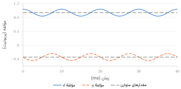
تفسیر. (الف) سه سینوسی به دو عددِ ثابت تبدیل شدند: \(\cos(-20^\circ) = 0.940\) و \(\sin(-20^\circ) = -0.342\). (ب) مؤلفهٔ منفی خلافِ جهت میچرخد، پس نسبت به قاب با دو برابرِ بسامد (100 Hz) دیده میشود: نوسانی با دامنهٔ 0.1 روی هر دو مؤلفه (شکل 3.23). کنترلکنندهای که این نوسان را نشناسد، آن را به خروجی منتقل میکند؛ به همین دلیل اینورترهای امروزی مؤلفههای مثبت و منفی را جدا کنترل میکنند (فصلِ ۹). (پ) اگر قاب با بسامدِ غلط بچرخد، \(d\) و \(q\) آهسته (با اختلافِ بسامد، 0.2 Hz) جابهجا میشوند؛ حلقهٔ قفلِ فاز این خطا را صفر میکند. همین سه پدیده، به زبانِ کنترل، در فصلهای ۹، ۲۰ و ۲۸ دوباره دیده میشوند.
- چرا جریانِ متوازن در قابِ همسرعت ثابت دیده میشود؟
- مؤلفهٔ منفیِ 50 Hz در قابِ \(dq\) با چه بسامدی دیده میشود؟ هارمونیکِ پنجم (که دنبالهٔ منفی دارد) چطور؟
- اگر \(\theta\) ده درجه از زاویهٔ واقعیِ ولتاژ عقب باشد، \(i_d\) و \(i_q\) گزارششده چه خطایی دارند؟
- دترمینانِ ماتریسِ معادلهٔ 3.39 چیست و چرا این تبدیل طول را حفظ میکند؟
3.4 پ. ریاضیاتِ داده و عدمِ قطعیت
3.4.1 آمارِ توصیفی
شهود. یک سال دادهٔ ساعتی ۸۷۶۰ عدد برای هر کمیت است. هیچکس نمیتواند اینهمه عدد را بخواند؛ باید آنها را خلاصه کرد، اما طوری که چیزِ مهمی گم نشود. آمارِ توصیفی ابزارِ این خلاصهسازی است و هر خلاصهای چیزی را پنهان میکند؛ مهارت در این است که بدانیم چه چیزی را.
اندازههای مرکز. میانگین \(\bar x = \sum x_i/n\) مرکزِ ثقلِ داده است و به مقدارهای بزرگ حساس. میانه مقدارِ وسطِ دادهٔ مرتبشده است و به مقدارهای دور حساس نیست. مُد پرتکرارترین مقدار است.
اندازههای پراکندگی. انحرافِ معیار \(s\) (معادلهٔ 2.9) پراکندگیِ معمول حولِ میانگین است؛ چارکها (\(Q_1\)، میانه، \(Q_3\)) داده را به چهار بخشِ برابر تقسیم میکنند و دامنهٔ میانچارکی \(Q_3 - Q_1\) پهنای نیمهٔ میانیِ داده است. چولگی نشان میدهد دنبالهٔ کدام طرفِ توزیع بلندتر است.
مثال 3.40 (خلاصهٔ یک سال باد و تابش) پرسش. دادهٔ ساعتیِ تندیِ باد در 100 m و شدتِ تابشِ افقی را (فقط ساعتهای روشن) در بستهٔ دادهٔ 1.0.0 خلاصه کنید.
پاسخ.
hourly wind speed at 100 m, Plant P Reference Data Pack 1.0.0, scenario S0
(no-BESS):
n 8760, mean 7.103, std 3.529, min 0.19, Q1 4.45, median 6.75, Q3 9.41, max
24.28 m/s
skewness 0.519 (> 0: long tail of strong winds; median < mean)
GHI in daylight hours (> 0): n 4569, mean 426.2, median 415.6, max 1042.6 W/m2تفسیر. میانهٔ تندی (6.75 m/s) کمتر از میانگین (7.10 m/s) است و چولگی مثبت: توزیعِ باد دنبالهٔ بلندی به سوی تندیهای زیاد دارد. این دنباله کمشمار است اما، چون توان با مکعبِ تندی میرود، سهمِ بزرگی از انرژی را میسازد (مثال 2.11). درس: برای باد، میانگین و انحرافِ معیار کافی نیستند؛ شکلِ توزیع لازم است.
3.4.2 متغیرِ تصادفی و توزیع
متغیرِ تصادفی کمیتی است که مقدارش پیش از مشاهده معلوم نیست، اما الگوی مقدارهای ممکنش معلوم است. تابعِ چگالیِ احتمال \(f(x)\) این الگو را توصیف میکند: احتمالِ افتادنِ مقدار در بازهٔ \([a, b]\) مساحتِ زیرِ \(f\) در آن بازه است، و مساحتِ کل یک. تابعِ توزیعِ تجمعی \(F(x)\) احتمالِ «کمتر یا مساوی \(x\)» است. میانگینِ هر تابعِ \(g\) از متغیر، امیدِ ریاضی، انتگرالِ \(g(x)f(x)\) است:
\[ \mathbb{E}[g(X)] = \int g(x)\,f(x)\,\mathrm{d}x \tag{3.40}\]
انرژیِ سالانهٔ یک توربین درست همین است: \(g\) منحنیِ توان و \(f\) توزیعِ تندی، ضربِ تعدادِ ساعتهای سال.
توزیعهای پرکاربرد در این کتاب.
| توزیع | شکل | کاربرد در نیروگاه |
|---|---|---|
| یکنواخت | مستطیلی میانِ دو حد | عدمِ قطعیتِ نوعِ ب از حدِ خطا (فصلِ ۲) |
| نرمال (گاوسی) | زنگولهای، متقارن | خطای اندازهگیری، جمعِ اثرهای مستقلِ بسیار |
| وایبول | دو پارامتری، چوله | تندیِ باد |
| ریلی | وایبول با \(k = 2\) | تقریبِ تندیِ باد وقتی فقط میانگین معلوم است |
| نمایی | میرا | زمانِ میانِ خرابیها با نرخِ ثابت (فصلِ ۵۲) |
توزیعِ نرمال و قضیهٔ حدِ مرکزی. جمع یا میانگینِ تعدادِ زیادی متغیرِ مستقل، هر شکلی که داشته باشند، به توزیعِ نرمال نزدیک میشود. به همین دلیل خطای کلِ یک اندازهگیری، که جمعِ ریزخطاهای بسیار است، معمولاً نرمال است و ضریبِ پوششِ \(k = 2\) حدودِ ۹۵ درصد میدهد (فصلِ ۲).
توزیعِ وایبول. تندیِ باد در بیشترِ ساختگاهها با توزیعِ دوپارامتریِ وایبول خوب توصیف میشود:
\[ f(v) = \frac{k}{c}\Big(\frac{v}{c}\Big)^{k-1} e^{-(v/c)^{k}}, \qquad F(v) = 1 - e^{-(v/c)^{k}} \tag{3.41}\]
که \(k\) ضریبِ شکل (هر چه بزرگتر، توزیع باریکتر و تندی پایدارتر) و \(c\) ضریبِ مقیاس (نزدیکِ تندیِ میانگین) است. میانگین \(c\,\Gamma(1 + 1/k)\) و میانگینِ مکعب \(c^{3}\,\Gamma(1 + 3/k)\) است، که \(\Gamma\) تابعِ گاماست (تعمیمِ فاکتوریل: \(\Gamma(n + 1) = n!\)).
سه روشِ برازش. (۱) روشِ گشتاورها: \(k\) و \(c\) را طوری انتخاب کن که میانگین و انحرافِ معیارِ وایبول با داده برابر شود؛ \(k\) از یک معادلهٔ غیرِخطی به دست میآید که با ریشهیابی حل میشود (مثال 3.61). (۲) درستنمایی بیشینه: پارامترهایی که داده را «محتملترین» میکنند؛ از نظرِ آماری کارآمدترین روش. (۳) کمترین مربعات روی تابعِ تجمعیِ خطیشده: با دو بار لگاریتم، \(\ln(-\ln(1 - F)) = k\ln v - k\ln c\) که خطی است؛ روشی قدیمی و تصویری.
مثال 3.41 (برازشِ توزیعِ باد و انرژیِ سالانه) پرسش. توزیعِ وایبول را با سه روش به ۸۷۶۰ تندیِ ساعتیِ ارتفاعِ توپی (بستهٔ دادهٔ 1.0.0، ساختگی) برازش دهید. برای هر برازش، میانگین، میانگینِ مکعب و انرژیِ سالانهٔ مزرعه را از \(E = 8760 \times 12 \times (1 - 0.12)\int P(v)f(v)\,\mathrm{d}v\) حساب کنید و با محاسبهٔ ساعتبهساعت مقایسه کنید.
پاسخ.
Weibull fits to the 8760 hourly speeds at 100 m (Plant P Reference Data Pack
1.0.0, scenario S0 (no-BESS))
method k c (m/s) mean mean v^3 farm GWh
moments 2.116 8.020 7.103 648.2 191.5
max. likelihood 2.114 8.017 7.101 648.2 191.4
least squares 2.092 8.026 7.108 656.9 191.6
data (hourly) 7.103 646.4 192.5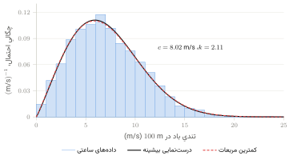
تفسیر. سه روش \(k \approx 2.1\) و \(c \approx 8.0\ \text{m/s}\) میدهند و انرژیِ مزرعه از برازشها (191.4 تا 191.6 GWh) تنها نیم درصد با محاسبهٔ ساعتبهساعت (192.5 GWh) فاصله دارد. بافتنگار و منحنیها روی هم میخوابند (شکل 3.24). وارسی: میانگینِ روشِ گشتاورها دقیقاً میانگینِ داده است (این روش آن را تحمیل میکند). هشدار: این برازشِ خوب تا حدی ساختگی است، چون دادهٔ بستهٔ داده خودش با فرضِ رفتارِ وایبول ساخته شده است. دادهٔ واقعیِ یک ساختگاه ممکن است دو قله داشته باشد (مثلاً بادِ شب و بادِ روز) و وایبول آن را بد توصیف کند؛ آنگاه سریزمانی یا توزیعِ تجربی جایگزین میشود (فصلِ ۱۳).
3.4.3 نمونهگیری و بازهٔ اطمینان
نمونه و جامعه. یک سال اندازهگیری نمونهای از آبوهوای بلندمدتِ ساختگاه است، نه خودِ آن. میانگینِ نمونه با میانگینِ واقعیِ بلندمدت فرق دارد و این فرق را خطای نمونهگیری مینامیم. اگر \(n\) مشاهدهٔ مستقل داشته باشیم، انحرافِ معیارِ میانگینِ نمونه \(s/\sqrt n\) است و بازهٔ اطمینانِ ۹۵ درصدیِ میانگین تقریباً \(\bar x \pm t\,s/\sqrt n\).
دامِ خودهمبستگی. تندیِ باد در دو ساعتِ پیاپی مستقل نیست: اگر الان باد تند است، احتمالاً یک ساعتِ بعد هم تند است. خودهمبستگی با تأخیرِ یک، \(r_1\)، این وابستگی را میسنجد. وقتی داده خودهمبسته است، ۸۷۶۰ ساعت اطلاعاتِ ۸۷۶۰ مشاهدهٔ مستقل را ندارند؛ اندازهٔ مؤثرِ نمونه برای یک فرایندِ ساده چنین است:
\[ n_\text{eff} = n\,\frac{1 - r_1}{1 + r_1} \tag{3.42}\]
مثال 3.42 (یک سال باد چقدر دربارهٔ باد میگوید؟) پرسش. میانگینهای ماهانه، خودهمبستگی و اندازهٔ مؤثرِ نمونه را برای تندیهای ساعتیِ بستهٔ داده بیابید. بازهٔ اطمینانِ ۹۵ درصدیِ میانگینِ سالانه را یک بار سادهلوحانه (با \(n = 8760\)) و یک بار با \(n_\text{eff}\) بسازید. سپس با روشِ بوتاسترپِ بلوکی (نمونهگیریِ دوباره از روزها) پراکندگیِ میانگین و انرژیِ مزرعه را برآورد کنید.
پاسخ. بوتاسترپ یعنی: ۳۶۵ روز را با جایگذاری از همان سال بکش، یک «سالِ بدیل» بساز، کمیت را حساب کن، ۴۰۰ بار تکرار کن و پراکندگیِ نتیجهها را ببین. روزها را کامل میکشیم تا وابستگیِ ساعتبهساعت درونِ روز حفظ شود:
monthly mean speeds (m/s): 6.81 7.74 7.33 6.80 8.17 5.65 6.65 5.81 8.13 6.45
6.38 9.34
spread of monthly means (std) 1.077 m/s
lag-1 autocorrelation of hourly speeds r1 = 0.959
effective number of independent hours n_eff = n (1 - r1)/(1 + r1) = 184 of
8760
95 % CI of the annual mean: naive (n = 8760) 7.029 .. 7.177; with n_eff 6.589
.. 7.616 m/s
block bootstrap by day (400 resamples): std of the mean 0.157 m/s, std of farm
energy 7.37 GWh (3.8 %)
(sampling within ONE synthetic year only; year-to-year variability is
extra)تفسیر. خودهمبستگیِ 0.96 یعنی ۸۷۶۰ ساعت فقط به اندازهٔ حدودِ ۱۸۴ مشاهدهٔ مستقل اطلاعات دارند. بازهٔ اطمینانِ سادهلوحانه (±0.07 m/s) هفت برابر باریکتر از بازهٔ واقعبینانه (±0.5 m/s) است: اعتمادِ کاذب. بوتاسترپِ روزانه پراکندگیِ 0.16 m/s در میانگین و 3.8 % در انرژی میدهد. و این فقط تغییرپذیریِ درونِ یک سال است؛ تفاوتِ سالبهسال، که یک سال داده اصلاً آن را نمیبیند، اغلب بزرگتر است و فصلِ ۱۶ آن را با دادهٔ بلندمدت میسنجد. درس: فرمولهای آماری فرض دارند؛ «استقلال» رایجترین فرضی است که در دادههای نیروگاه شکسته میشود.
- چرا میانهٔ تندیِ باد معمولاً کمتر از میانگین است؟
- احتمالِ آنکه تندی از \(c\) (ضریبِ مقیاسِ وایبول) کمتر باشد چیست؟ (راهنما: \(F(c)\).)
- برای وایبول با \(k = 2\) و \(c = 8\ \text{m/s}\)، میانگین چیست؟ (\(\Gamma(1.5) = 0.8862\).)
- چرا ضریبِ شکلِ بزرگتر یعنی بادِ پایدارتر؟
- اگر \(r_1 = 0.5\) باشد، ۱۰۰ مشاهده به اندازهٔ چند مشاهدهٔ مستقلاند؟
- چرا در بوتاسترپ روزها را کامل میکشیم و نه ساعتها را؟
- قضیهٔ حدِ مرکزی چه میگوید و چرا برای عدمِ قطعیتِ اندازهگیری مهم است؟
- دادهٔ بادی دو قله دارد. آیا برازشِ وایبول کافی است؟ چه میکنید؟
3.4.4 رگرسیون و همبستگی
رگرسیونِ خطی رابطهٔ میانگینِ یک کمیت (\(y\)) را با کمیتِ دیگر (\(x\)) با خطِ کمترین مربعات توصیف میکند (بخش 3.3.3). ضریبِ تعیین \(r^{2}\) کسری از پراکندگیِ \(y\) است که خط توضیح میدهد. برای شیب، بازهٔ اطمینان هم میتوان ساخت، به شرطِ آنکه باقیماندهها مستقل و همپراکنده باشند. در ارزیابیِ باد، رگرسیونِ دادهٔ کوتاهمدتِ ساختگاه بر دادهٔ بلندمدتِ یک ایستگاهِ مرجع پایهٔ روشِ اندازهگیری-همبستگی-پیشبینی است (فصلِ ۱۳).
مثال 3.43 (تندی در 100 m از تندی در 80 m) پرسش. تندیهای ساعتیِ ارتفاعِ 100 m را بر تندیهای 80 m رگرسیون کنید (بستهٔ دادهٔ 1.0.0). شیب، عرض از مبدأ، \(r^{2}\) و انحرافِ معیارِ باقیمانده را بدهید.
پاسخ.
v100 = a v80 + b, least squares on 8760 hours
a = 1.0403 (95 % CI 1.0395 .. 1.0412), b = -0.0089 m/s
r^2 = 0.9985, residual std 0.134 m/s
predicted mean at 100 m from the 80 m mean: 7.103 m/s (data 7.103)
warning: the CI assumes independent residuals; hourly residuals are not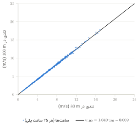
تفسیر. شیبِ 1.040 یعنی تندی در 100 m حدودِ چهار درصد بیشتر از 80 m است؛ با \(r^{2} = 0.9985\) رابطه بسیار محکم است (این دادهٔ ساختگی از یک پروفیلِ قائمِ ساده ساخته شده؛ در دادهٔ واقعی پراکندگیِ بیشتری میبینیم). هشدار: بازهٔ اطمینانِ شیب (چهار رقم اعشار!) بیش از حد باریک است، چون فرمول باقیماندهها را مستقل فرض میکند و آنها، مثلِ خودِ تندیها، خودهمبستهاند (بخش 3.4.3).
همبستگی. ضریبِ همبستگیِ پیرسون، \(r\)، میانِ \(-1\) و \(+1\)، اندازهٔ رابطهٔ خطی میانِ دو متغیر است: \(+1\) یعنی با هم بالا و پایین میروند، \(-1\) یعنی برعکس، صفر یعنی رابطهٔ خطیای نیست. سه نکته که همیشه باید در ذهن بماند: (۱) همبستگی علیت نیست؛ (۲) همبستگیِ صفر یعنی رابطهٔ خطی نیست، نه اینکه رابطهای نیست؛ (۳) همبستگی به مقیاسِ زمانی بستگی دارد.
مثال 3.44 (آیا باد و آفتابِ نیروگاهِ P مکملِ یکدیگرند؟) پرسش. همبستگیِ تولیدِ خورشیدی و بادیِ نیروگاهِ P را در سه مقیاسِ ساعتی، روزانه و ماهانه حساب کنید.
پاسخ.
Pearson correlation of PV and wind output (Plant P Reference Data Pack 1.0.0,
scenario S0 (no-BESS)):
hourly -0.124; daily energies -0.117; monthly energies -0.339
negative = complementary; the sign and size depend on the time scale
correlation measures LINEAR association only; it is not causation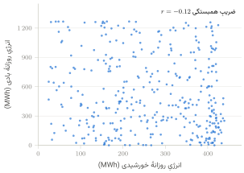
تفسیر. همبستگی در هر سه مقیاس منفی است: وقتی آفتاب کم است، باد کمی بیشتر است، و این مکمل بودن همان چیزی است که نیروگاهِ هیبریدی را ارزشمند میکند (فصلِ ۱). اما همبستگیِ ساعتی و روزانه ضعیف است (−0.12؛ نقطهها در شکل 3.26 پخشاند) و فقط در مقیاسِ ماهانه (−0.34) محسوس میشود: باد در ماههای کمآفتاب قویتر است. درس: «مکمل بودن» بدونِ ذکرِ مقیاسِ زمانی ادعایی نیمهکاره است، و چون این داده ساختگی است، عددِ واقعیِ ساختگاه را فقط اندازهگیری میدهد.
3.4.5 دادهٔ پرت
تعریف. دادهٔ پرت مشاهدهای است که با الگوی بقیهٔ داده نمیخواند. ممکن است خطا باشد (حسگرِ یخزده، قطعِ ارتباط، گیر کردنِ مقدار) یا رویدادِ واقعیِ نادر (طوفان). قاعدهٔ طلایی: پرت یعنی «بررسی کن»، نه «پاک کن»؛ پرچم بزن (بخش 2.4.6) و دلیلِ تصمیم را بنویس.
آزمونهای رایج. (۱) حصارهای توکی: بیرون از \([Q_1 - k\,\text{IQR},\ Q_3 + k\,\text{IQR}]\). (۲) امتیازِ \(z\): \(|x - \bar x|/s\) بزرگتر از ۳ یا ۴. (۳) آزمونهای فیزیکی: گسترهٔ ممکن، آهنگِ تغییرِ ممکن (باد در یک ساعت از ۵ به ۴۰ متر بر ثانیه نمیرود)، و ثابت ماندنِ غیرعادی. دو آزمونِ اول آماریاند و فقط مقدارهای بزرگ را میبینند؛ آزمونهای فیزیکی دانشِ مهندسی را بهکار میبرند و خطاهایی را میبینند که آمار نمیبیند.
مثال 3.45 (پنج جهش و یک حسگرِ گیرکرده) پرسش. در رونوشتی از تندیهای بستهٔ داده، پنج جهشِ ساختگی (38.0، 41.5، 0.0، 36.2 و 44.0 m/s) و دوازده ساعت مقدارِ ثابت (حسگرِ گیرکرده) بگذارید. کدام آزمون کدام را مییابد؟
پاسخ.
five spikes injected (38.0, 41.5, 0.0, 36.2, 44.0 m/s) and a 12-hour stuck
sensor
IQR fences (k = 3): 4 flagged; spikes found 4 of 5
|z| > 4: 9 flagged; spikes found 4 of 5
step > 12 m/s in one hour: 8 flagged (each spike gives 2 steps)
same value 6 or more hours in a row: 12 flagged (the stuck run: 12 of 12)
the 0.0 m/s spike is inside the normal range: only the step test sees itتفسیر. آزمونهای آماری چهار جهشِ بزرگ را یافتند اما جهشِ صفر را ندیدند، چون صفر در گسترهٔ عادیِ باد است؛ فقط آزمونِ آهنگِ تغییر آن را دید. حسگرِ گیرکرده را هیچ آزمونِ آماری نمیبیند، چون مقدارش کاملاً عادی است؛ فقط آزمونِ «ثابت ماندن» آن را گرفت. آزمونِ \(z\) چند مقدارِ واقعیِ طوفان را هم پرچم زد (۹ پرچم برای ۵ جهش). درس: هیچ آزمونِ تنهایی کافی نیست؛ مجموعهای از آزمونهای آماری و فیزیکی، و سپس داوریِ انسانی با فرادادهٔ دکل، لازم است (فصلهای ۵ و ۱۳).
3.4.6 انتشارِ عدمِ قطعیت با ورودیهای همبسته
شکلِ ماتریسی. فصلِ ۲ قانونِ انتشار را برای ورودیهای مستقل و یک جملهٔ همبستگی نوشت. شکلِ کلیِ آن با ژاکوبی \(\mathbf{J}\) (بردارِ ضریبهای حساسیت) و ماتریسِ کوواریانس \(\boldsymbol{\Sigma}\) (واریانسها روی قطر، \(r_{ij}u_iu_j\) بیرونِ قطر) چنین است:
\[ u_\text{c}^{2}(y) = \mathbf{J}\,\boldsymbol{\Sigma}\,\mathbf{J}^{\mathsf{T}} \tag{3.43}\]
همبستگیِ مثبت میانِ دو ورودی که اثرِ همجهت دارند، عدمِ قطعیت را بیشتر میکند (خطاها جمع میشوند) و همبستگیِ منفی آن را کمتر.
- \(r^{2} = 0.81\) یعنی چه؟ ضریبِ همبستگی چقدر است؟
- مثالی بزنید که دو متغیر همبستگیِ قوی دارند اما یکی علتِ دیگری نیست.
- رابطهٔ \(y = x^{2}\) روی بازهٔ \([-1, 1]\) چه ضریبِ همبستگیِ خطیای دارد؟ این چه میگوید؟
- چرا آزمونِ \(z\) جهشِ صفرِ تندیِ باد را نمیبیند؟
- سه آزمونِ فیزیکی برای دادهٔ شدتِ تابش پیشنهاد کنید.
- اگر \(u(f_v)\) و \(u(f_H)\) کاملاً همبسته (\(r = 1\)) باشند، \(u_\text{c}\) با جمعِ خطی یا مربعی به دست میآید؟
- ماتریسِ کوواریانسِ دو ورودی با \(u_1 = 0.03\)، \(u_2 = 0.04\) و \(r = 0.5\) را بنویسید.
- چرا فرضِ استقلالِ منابعِ عدمِ قطعیت معمولاً خوشبینانه است؟
3.4.7 احتمال: دسترسپذیریِ توربینها
قاعدههای پایه. احتمالِ رویدادِ \(A\)، \(\Pr(A)\)، میانِ صفر و یک است. برای دو رویدادِ مستقل، \(\Pr(A \text{ and } B) = \Pr(A)\Pr(B)\)؛ برای دو رویدادِ ناسازگار (که با هم رخ نمیدهند)، \(\Pr(A \text{ or } B) = \Pr(A) + \Pr(B)\)؛ و \(\Pr(\text{not } A) = 1 - \Pr(A)\). احتمالِ شرطی، \(\Pr(A \mid B) = \Pr(A \text{ and } B)/\Pr(B)\)، احتمالِ \(A\) است وقتی میدانیم \(B\) رخ داده است.
توزیعِ دوجملهای. اگر \(n\) آزمایشِ مستقل داشته باشیم و هر کدام با احتمالِ \(p\) «موفق» شود، تعدادِ موفقیتها توزیعِ دوجملهای دارد:
\[ \Pr(K = k) = \binom{n}{k}\,p^{k}(1 - p)^{n-k}, \qquad \binom{n}{k} = \frac{n!}{k!\,(n-k)!} \tag{3.44}\]
با میانگینِ \(np\). برای مزرعهای با دوازده توربین که هر کدام با احتمالِ \(p\) در دسترس است، \(K\) تعدادِ توربینهای در دسترس است.
فرایندِ پواسون. رویدادهایی که بهطورِ تصادفی و مستقل با نرخِ ثابتِ \(\lambda\) رخ میدهند (خرابیها، صاعقهها)، در بازهٔ زمانیِ \(t\) تعدادی با توزیعِ پواسون دارند: \(\Pr(N = n) = (\lambda t)^{n}e^{-\lambda t}/n!\). احتمالِ «هیچ رویدادی» \(e^{-\lambda t}\) است و زمانِ میانِ رویدادها توزیعِ نمایی با میانگینِ \(1/\lambda\) دارد. فصلِ ۵۲ اینها را پایهٔ تحلیلِ قابلیتِ اطمینان قرار میدهد.
مثال 3.47 (چند توربین در دسترس است؟) پرسش. هر یک از ۱۲ توربین با احتمالِ 0.97، مستقل از بقیه، در دسترس است (فرضی). (الف) احتمالِ آنکه هر دوازده، دستکم یازده، یا ده و کمتر در دسترس باشند چیست؟ (ب) اگر خرابیها با نرخِ دو بار در سال برای هر توربین رخ دهند، احتمالِ هیچ خرابی در یک ماه برای یک توربین و برای کلِ مزرعه چیست؟
پاسخ.
12 turbines, each available with probability 0.97, independently (assumed)
P(all 12) = 0.97^12 = 0.6938; P(exactly 11) = 0.2575; P(at least 11) =
0.9514
P(10 or fewer) = 0.0486; expected number available 11.64 = 12 x 0.97
failures as a Poisson process, 2 per turbine per year (assumed):
one turbine, one month: P(0) = e^-0.1667 = 0.8465; P(1 or more) = 0.1535
whole farm, one month (rate 2): P(0) = 0.1353; P(3 or more) = 0.3233
independence is an assumption: a grid outage or icing stops many turbines at
once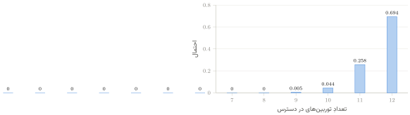
تفسیر. با وجودِ دسترسپذیریِ ۹۷ درصدیِ هر توربین، فقط ۶۹ درصدِ وقت همه در دسترساند؛ اما ۹۵ درصدِ وقت دستکم یازده توربین کار میکنند. اینکه «مزرعه» در دسترس است یا نه بستگی دارد به تعریف: همهٔ توربینها، یا ظرفیتِ کافی برای تعهد؟ (ب) مزرعه در یک ماه تنها ۱۳٫۵ درصد شانس دارد که هیچ خرابی نداشته باشد؛ سه خرابی یا بیشتر در یکسوم ماهها رخ میدهد. برنامهٔ نگهداری و قطعاتِ یدکی بر همین احتمالها بنا میشود (فصلهای ۵۱ و ۵۲). فرضِ حساس: استقلال. قطعیِ شبکه یا یخزدگی همهٔ توربینها را با هم متوقف میکند و احتمالِ «همه از کار افتاده» را بسیار بیشتر از \(0.03^{12}\) میکند.
3.4.8 توزیعِ نرمال و احتمالِ فراگذشت
توزیعِ نرمالِ استاندارد. اگر \(X\) نرمال با میانگینِ \(\mu\) و انحرافِ معیارِ \(\sigma\) باشد، \(Z = (X - \mu)/\sigma\) نرمالِ استاندارد است (میانگینِ صفر، انحرافِ معیارِ یک). احتمالها از جدولِ \(Z\) یا تابعِ توزیعِ تجمعیِ \(\Phi\) خوانده میشوند؛ چند عددِ پرکاربرد: \(\Phi(1.2816) = 0.90\)، \(\Phi(1.6449) = 0.95\)، \(\Phi(2.3263) = 0.99\).
احتمالِ فراگذشت. در ارزیابیِ تولید، P90 مقداری است که تولیدِ سالانه با احتمالِ ۹۰ درصد از آن بیشتر است. اگر تولید نرمال باشد:
\[ P_{q} = \mu - z_{q}\,\sigma, \qquad \Phi(z_{q}) = q/100 \tag{3.45}\]
مثال 3.48 (از P50 تا P99) پرسش. با میانگینِ 289.8 GWh و انحرافِ معیارِ 10.1 GWh (عدمِ قطعیتِ آموزشیِ منبع، مثال 2.35)، P50، P75، P90، P95 و P99 را بیابید. احتمالِ آنکه یک سال بیش از 300 GWh تولید کند چیست؟
پاسخ.
normal model of annual energy: mean 289.8 GWh, standard deviation 10.1 GWh
P50 = mean - z sigma, z = 0.0000: 289.8 GWh
P75 = mean - z sigma, z = 0.6745: 283.0 GWh
P90 = mean - z sigma, z = 1.2816: 276.9 GWh
P95 = mean - z sigma, z = 1.6449: 273.2 GWh
P99 = mean - z sigma, z = 2.3263: 266.3 GWh
probability that a year exceeds 300 GWh: 0.156
these numbers inherit every assumption of the 10.1 GWh (teaching values,
chapter 2)تفسیر. فاصلهٔ P50 تا P99 حدودِ 24 GWh است: هشت درصد. وامدهندهها بدهی را معمولاً بر پایهٔ P90 یا P99 یکساله میسنجند (فصلِ ۲۱)؛ پس هر واحد کاهشِ \(\sigma\) مستقیماً ظرفیتِ وام را بالا میبرد. هشدار: فرضِ نرمال بودن در دنبالهها (P99) کماعتبارتر از میانه است و «عدمِ قطعیتِ یکساله» با «عدمِ قطعیتِ میانگینِ دهساله» فرق دارد (تغییرپذیریِ سالبهسال با میانگینگیری کم میشود)؛ فصلِ ۱۶ هر دو را میسازد.
3.4.9 آزمونِ فرض
ایده. آیا اختلافِ دو میانگین «واقعی» است یا ممکن است تصادفی باشد؟ آزمونِ فرض یک فرضِ صفر (مثلاً «اختلافی نیست») را میگیرد و میپرسد: اگر این فرض درست بود، دیدنِ اختلافی به این بزرگی چقدر محتمل بود؟ آمارهای مثلِ \(t = (\bar x_1 - \bar x_2)/\text{se}\) ساخته میشود و مقدارِ \(p\) احتمالِ دیدنِ \(|t|\)ای دستکم به این بزرگی تحتِ فرضِ صفر است. مقدارِ \(p\) کوچک (مثلاً زیرِ ۰٫۰۵) فرضِ صفر را زیرِ سؤال میبرد. سه هشدار: (۱) \(p\) احتمالِ درستیِ فرضِ صفر نیست؛ (۲) «معنادارِ آماری» یعنی «احتمالاً تصادفی نیست»، نه «مهم»؛ (۳) آزمون به فرضهایش وابسته است، و رایجترینِ آنها استقلالِ مشاهدهها است.
مثال 3.49 (بهار بادیتر از پاییز است؟) پرسش. میانگینِ تندیِ باد در بهار (ماههای مارس تا مهٔ میلادی) و پاییز (سپتامبر تا نوامبر) در بستهٔ داده را مقایسه کنید. آیا اختلاف معنادار است؟ یک بار با فرضِ استقلالِ ساعتها و یک بار با اندازهٔ مؤثرِ نمونه پاسخ دهید.
پاسخ.
is the mean speed of spring (Mar-May) different from autumn (Sep-Nov)?
means 7.439 and 6.978 m/s; difference +0.462 m/s
naive t = diff / se, se from n = 2208 and 2184: t = 4.76, p = 1.9e-06
with effective sizes 62 and 55: t = 0.78, p = 0.44
the naive test calls the difference significant; the honest one does notتفسیر. آزمونِ سادهلوحانه \(p\) را حدودِ دو در میلیون میدهد و اختلافِ 0.46 m/s را «قطعی» میخواند؛ آزمونِ درست، با حدودِ ۶۰ مشاهدهٔ مؤثر در هر فصل، \(p = 0.44\) میدهد: با یک سال داده نمیتوان گفت بهارِ این ساختگاه بادیتر است. این همان درسِ مثال 3.42 است، این بار در لباسِ آزمونِ فرض. در گزارشهای منبع ادعاهای «معنادار»ی که خودهمبستگی را نادیده گرفتهاند، کم نیستند.
3.4.10 سریزمانی و پیشبینیِ ساده
الگوهای سریزمانی. دادهٔ نیروگاه سریزمانی است: ترتیب مهم است. سه جزء را از هم جدا میکنیم: چرخهٔ روزانه (خورشید همیشه، باد گاهی)، چرخهٔ فصلی، و تغییرپذیریِ تصادفیِ باقیمانده که خودهمبسته است. میانگینِ هر ساعتِ روز در طولِ سال چرخهٔ روزانه را نشان میدهد و میانگینِ متحرک نوسانهای کوتاه را صاف میکند.
پیشبینیِ ماندگاری. سادهترین پیشبینی برای ساعتِ بعد: «همان مقدارِ اکنون». این پیشبینیِ ماندگاری معیارِ پایهای است که هر روشِ پیشبینیِ پیشرفته باید از آن بهتر باشد (فصلِ ۲۰). خطا با میانگینِ خطای مطلق (\(\text{MAE}\)) و ریشهٔ میانگینِ مربعِ خطا (\(\text{RMSE}\)) سنجیده میشود؛ دومی به خطاهای بزرگ حساستر است.
مثال 3.50 (چرخهٔ روزانه و خطای پیشبینی) پرسش. چرخهٔ روزانهٔ میانگینِ تولیدِ خورشیدی و بادی را بسازید. خطای پیشبینیِ ماندگاریِ توانِ مزرعهٔ بادی را برای افقهای ۱ تا ۲۴ ساعت حساب کنید و با «اقلیمشناسی» (همیشه میانگینِ سالانه) مقایسه کنید.
پاسخ.
persistence forecast of farm power: 'the next value equals the current one'
lead 1 h: MAE 3.98 MW ( 6.6 % of 60 MW), RMSE 6.35 MW
lead 3 h: MAE 7.05 MW (11.7 % of 60 MW), RMSE 10.77 MW
lead 6 h: MAE 9.98 MW (16.6 % of 60 MW), RMSE 14.76 MW
lead 12 h: MAE 13.60 MW (22.7 % of 60 MW), RMSE 19.09 MW
lead 24 h: MAE 17.23 MW (28.7 % of 60 MW), RMSE 23.00 MW
'climatology' (always the annual mean): MAE 17.27 MW
mean daily cycle: PV peaks at hour 11; wind mean ranges 18.4..25.8 MW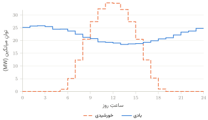
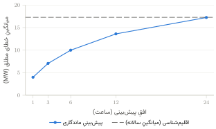
تفسیر. تولیدِ بادیِ این دادهٔ ساختگی چرخهٔ روزانهٔ ملایمی دارد و تا حدی وقتی خورشیدی صفر است بیشتر است (شکل 3.28). پیشبینیِ ماندگاری برای یک ساعت بعد خطای حدودِ 4 MW (۷ درصدِ ظرفیت) دارد، اما با افقِ ۲۴ ساعت خطایش به اقلیمشناسی میرسد (شکل 3.29): ماندگاری برای فردا هیچ ارزشی ندارد. این مرز نشان میدهد پیشبینیِ روزِ بعد، که بازارها و برنامهریزیِ شبکه لازم دارند، مدلهای جوّی میخواهد (فصلِ ۲۰).
- اگر هر توربین با احتمالِ ۰٫۹۵ در دسترس باشد، احتمالِ آنکه هر دوازده در دسترس باشند چیست؟
- احتمالِ دستکم یک خرابی در یک سال برای توربینی با نرخِ ۰٫۵ خرابی در سال چیست؟
- میانگینِ زمانِ میانِ دو خرابیِ فرایندی با نرخِ ۲ در سال چیست؟
- P90 تولیدی با میانگینِ 100 GWh و انحرافِ معیارِ 8 GWh چیست؟
- مقدارِ \(p\) برابرِ ۰٫۰۳ یعنی احتمالِ درست بودنِ فرضِ صفر ۳ درصد است؟ توضیح دهید.
- چرا آزمونِ سادهلوحانه در مثال 3.49 «معنادار» نتیجه گرفت؟
- فرقِ \(\text{MAE}\) و \(\text{RMSE}\) چیست؟ کدام به خطاهای بزرگ حساستر است؟
- چرا پیشبینیِ ماندگاری برای افقِ ۲۴ ساعت از اقلیمشناسی بهتر نیست؟
3.4.11 آمارِ جهت: گلِ باد
مسئله. جهتِ باد کمیتی دایرهای است (مثال 2.19) و میانگینِ سادهاش بیمعناست. بهجای آن، جهتها را در بخشها (مثلاً دوازده بخشِ ۳۰ درجهای) دستهبندی و برای هر بخش فراوانی، تندیِ میانگین و سهم از انرژی را حساب میکنیم. نمودارِ قطبیِ اینها گلِ باد است. سهمِ انرژی از سهمِ زمان مهمتر است، چون بخشی با بادِ کمتر اما تندتر ممکن است انرژیِ بیشتری بیاورد؛ و چیدمانِ توربینها (فصلِ ۱۴) بر پایهٔ گلِ انرژی است، نه گلِ فراوانی.
مثال 3.51 (گلِ بادِ نیروگاهِ P) پرسش. با تندی و جهتِ ساعتیِ ارتفاعِ 100 m بستهٔ داده، فراوانی، تندیِ میانگین و سهمِ انرژیِ توربین را در دوازده بخش حساب کنید. پربرکتترین بخش کدام است؟
پاسخ.
12 sectors of 30 deg (centre, FROM direction): frequency, mean speed, energy
share
0 deg: 1.1 % of hours, mean 7.15 m/s, 1.0 % of energy
30 deg: 0.1 % of hours, mean 9.58 m/s, 0.1 % of energy
60 deg: 1.8 % of hours, mean 8.22 m/s, 2.4 % of energy
90 deg: 6.1 % of hours, mean 7.87 m/s, 7.5 % of energy
120 deg: 6.1 % of hours, mean 7.90 m/s, 7.3 % of energy
150 deg: 2.5 % of hours, mean 6.03 m/s, 1.8 % of energy
180 deg: 0.1 % of hours, mean 7.03 m/s, 0.1 % of energy
210 deg: 1.5 % of hours, mean 7.47 m/s, 1.6 % of energy
240 deg: 10.0 % of hours, mean 7.49 m/s, 11.0 % of energy
270 deg: 30.6 % of hours, mean 7.12 m/s, 30.8 % of energy
300 deg: 29.1 % of hours, mean 6.85 m/s, 26.9 % of energy
330 deg: 10.9 % of hours, mean 6.49 m/s, 9.3 % of energy
most energetic sector: 270 deg (30.80 % of energy)
speed-weighted vector mean direction: 283 deg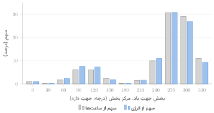
تفسیر. دو بخشِ غربی (270° و 300°) حدودِ ۶۰ درصدِ ساعتها و ۵۸ درصدِ انرژی را دارند: بادِ این ساختگاهِ ساختگی جهتدار است. بخشهای شرقی (90° و 120°) کمشمارترند اما تندیِ میانگینِ بیشتری دارند و سهمِ انرژیشان بیشتر از سهمِ زمانشان است. میانگینِ برداریِ وزندار با تندی 283° است، یعنی بادِ غالب از غرب-شمالغرب. پیامدِ طراحی: ردیفهای توربین بهتر است شمالی-جنوبی (عمود بر بادِ غالب) چیده شوند و فاصلهٔ میانِ ردیفها در امتدادِ شرق-غرب بیشتر از فاصلهٔ توربینها درونِ هر ردیف باشد (فصلِ ۱۴). یادآوری: بادِ غالبِ مثال 3.18 (163°) فقط جهتِ نخستین ساعتِ داده بود، نه جهتِ غالب؛ این مثال نشان میدهد چرا نباید از یک نمونه نتیجه گرفت.
3.4.12 نمونهبرداری از یک توزیع
روشِ تبدیلِ وارون. شبیهسازیِ مونتکارلو (فصلِ ۲) به عددهای تصادفی از توزیعهای مشخص نیاز دارد. رایانه عددهای شبهتصادفیِ یکنواخت میانِ صفر و یک تولید میکند (با بذر، تا نتیجه بازتولیدپذیر باشد). اگر \(U\) یکنواخت باشد و \(F\) تابعِ توزیعِ تجمعیِ هدف، \(X = F^{-1}(U)\) توزیعِ \(F\) را دارد. برای وایبول، از \(F(v) = 1 - e^{-(v/c)^{k}}\):
\[ v = c\,\big(-\ln(1 - U)\big)^{1/k} \tag{3.46}\]
مثال 3.52 (تندیهای ساختگی از وایبول) پرسش. صد هزار تندی از وایبولِ برازششدهٔ مثال 3.41 بسازید و میانگین، میانگینِ مکعب و انرژیِ سالانه را با نظریه و دادهٔ ساعتی مقایسه کنید. این نمونهها برای چه کاری مناسب نیستند؟
پاسخ.
inverse-transform sampling of the fitted Weibull (k = 2.114, c = 8.017 m/s):
U uniform on (0, 1) -> v = c (-ln(1 - U))^(1/k)
100,000 samples: mean 7.123 m/s (theory 7.101), mean of v^3 651.6 (theory
648.2)
energy from the samples: 192.6 GWh/yr
independent samples have no autocorrelation: fine for annual sums, wrong for
anything that depends on the order of hours (batteries, ramps,
curtailment)تفسیر. میانگینها با نظریه و انرژی با سریزمانی (192.5) میخوانند. اما نمونههای مستقل ترتیب ندارند: ساعتِ بعدی هیچ ربطی به ساعتِ قبلی ندارد، در حالی که بادِ واقعی خودهمبستگیِ 0.96 دارد. پس این نمونهها برای هر محاسبهای که به ترتیبِ ساعتها بستگی دارد (شارژِ باتری، شیبِ تغییرِ توان، بُرشِ پیدرپی) نادرستاند و مدلهای سریزمانیِ ساختگی لازم است (فصلِ ۱۶). درس: «توزیعِ درست» با «رفتارِ درست» یکی نیست.
3.4.13 منحنیِ تداوم و چندکها
تعریف. اگر توانِ ساعتیِ یک سال را از بزرگ به کوچک مرتب کنیم و بر حسبِ «شمارهٔ ساعت» رسم کنیم، منحنیِ تداوم به دست میآید (فصلِ ۱). این همان تابعِ توزیعِ تجمعیِ وارونه است، با محورِ زمان: نقطهٔ \((h, P)\) میگوید «در \(h\) ساعت از سال، توان دستکم \(P\) بود». مساحتِ زیرِ آن، مثلِ سریزمانی، انرژی است، چون مرتب کردن جمع را عوض نمیکند؛ اما ترتیبِ زمانی را دور میریزد.
مثال 3.53 (خواندنِ منحنیِ تداومِ صادرات) پرسش. از منحنیِ تداومِ توانِ صادراتیِ نیروگاهِ P (شکل 1.12 در فصلِ ۱)، انرژی، تعدادِ ساعتهای بالای ۵۰ و ۸۰ مگاوات، میانه، چندکِ ۹۰ درصد و سهمِ انرژیِ هزار ساعتِ پربارتر را بیابید.
پاسخ.
duration curve: hourly export sorted from largest to smallest (data pack
1.0.0, S0)
area under the curve = energy: 289.8 GWh (same as the time series)
hours above 50 MW: 2493; above 80 MW: 276; below 5 MW: 1223
median hourly export 32.6 MW; 10 % of hours exceed 60.6 MW
energy delivered in the top 1000 hours: 73.4 GWh (25 %)تفسیر. فقط ۲۷۶ ساعت بالای ۸۰ مگاوات: یعنی بیست مگاواتِ بالاییِ اتصالِ ۱۰۰ مگاواتی (از ۸۰ تا ۱۰۰) فقط در حدودِ سه درصدِ سال به کار میآید؛ این نکته در طراحیِ اندازهٔ اتصال و باتری (فصلهای ۱۸ و ۱۹) کلیدی است. یکچهارمِ انرژی از هزار ساعتِ پربارتر میآید. میانهٔ ساعتی (32.6 MW) از میانگین (33.1 MW) کمی کمتر است. محدودیت: منحنیِ تداوم نمیگوید این ساعتها کِی و پشتِ هم رخ دادهاند؛ برای باتری، ترتیب حیاتی است.
- چرا «گلِ انرژی» برای چیدمانِ توربین مهمتر از «گلِ فراوانی» است؟
- با \(U = 0.5\)، تندیِ وایبولِ \(k = 2\) و \(c = 8\) چیست؟ این چه چندکی است؟
- بذرِ مولدِ عددهای تصادفی چرا در کتاب ثابت است؟
- چرا نمونههای مستقلِ وایبول برای شبیهسازیِ باتری نامناسباند؟
- مساحتِ زیرِ منحنیِ تداوم چه یکایی دارد؟
- اگر سقفِ اتصال 80 MW بود، از منحنیِ تداوم چطور انرژیِ بریدهشده را برآورد میکنید؟
3.4.14 آمارِ مقادیرِ حدی: بادِ پنجاهساله
مسئله. برج، پره و فونداسیون باید بادهایی را تاب بیاورند که شاید در عمرِ نیروگاه یک بار رخ دهند. توزیعِ وایبول (بخش 3.4.2) برای ساعتهای عادی ساخته شده و دنبالهٔ بالایش را خوب نمیشناسد. ابزارِ درست، آمارِ مقادیرِ حدی است: بهجای همهٔ دادهها، فقط بیشینهٔ هر سال را نگاه میکنیم. نظریه نشان میدهد که بیشینهٔ تعدادِ زیادی متغیرِ تصادفی (با دنبالهای از نوعِ نمایی، مثلِ وایبول) به توزیعِ گامبل میل میکند:
\[ F(x) = \exp\!\left[-\exp\!\left(-\frac{x - \mu}{\beta}\right)\right] \tag{3.47}\]
\(\mu\) پارامترِ مکان و \(\beta\) پارامترِ مقیاس است. میانگینِ گامبل \(\mu + 0.5772\,\beta\) و انحرافِ معیارش \(\pi\beta/\sqrt{6}\) است؛ از این دو، برازش با روشِ گشتاورها ساده است.
دورهٔ بازگشت. مقداری که احتمالِ فراگذشتِ آن در یک سال \(1/T\) است، مقدارِ \(T\)ساله نام دارد؛ یعنی «بهطورِ میانگین یک بار در \(T\) سال»، نه «دقیقاً یک بار در هر \(T\) سال». از معادلهٔ 3.47:
\[ x_T = \mu - \beta \ln\!\left[-\ln\!\left(1 - \frac{1}{T}\right)\right] \tag{3.48}\]
نمودارِ گامبل. اگر بیشینهها را مرتب کنیم و به هر کدام احتمالِ \(F_i = i/(n + 1)\) بدهیم، روی محورِ متغیرِ کاهشیافته \(y = -\ln(-\ln F)\) نقطهها باید روی خطِ راستِ \(x = \mu + \beta y\) بیفتند. این نمودار هم برازش میدهد و هم آزمونِ چشمیِ مدل است: انحنای منظمِ نقطهها یعنی گامبل مناسب نیست.
عمرِ نیروگاه. احتمالِ آنکه مقدارِ \(T\)ساله دستکم یک بار در \(n\) سال رخ دهد (با فرضِ استقلالِ سالها) \(1 - (1 - 1/T)^{n}\) است؛ برای ۵۰ سال و عمرِ ۲۵ ساله، حدودِ ۴۰ درصد. «پنجاهساله» یعنی «نادر»، نه «بعید».
مثال 3.54 (بادِ حدیِ ساختگاه از سی سال بیشینه) پرسش. سی بیشینهٔ سالانهٔ تندیِ میانگینِ دهدقیقهای در ارتفاعِ توپی (ساختگی، A-036؛ در عمل از بازتحلیل یا ایستگاهِ بلندمدت میآید و به ساختگاه منتقل میشود، فصلِ ۱۳) در اختیار است. گامبل را با دو روش برازش دهید، مقدارهای ۱۰، ۵۰ و ۱۰۰ ساله را بیابید، و با بوتاسترپ نشان دهید اگر فقط ده سال داده داشتیم چه میشد.
پاسخ.
30 annual maxima of the 10-minute mean wind at hub height (synthetic, A-036)
mean 26.69 m/s, std 3.35 m/s, largest 34.81 m/s
Gumbel by moments: mu = 25.19, beta = 2.61 m/s
Gumbel by line on the Gumbel plot: mu = 25.12, beta = 2.94 m/s
10-year value: moments 31.1 m/s, plot 31.7 m/s
50-year value: moments 35.4 m/s, plot 36.6 m/s
100-year value: moments 37.2 m/s, plot 38.7 m/s
chance the 50-year value is exceeded in a 25-year life: 39.7 %
50-year value from 10 years: 90 % bootstrap range 30.7 .. 39.4 m/s
50-year value from 30 years: 90 % bootstrap range 32.8 .. 37.6 m/s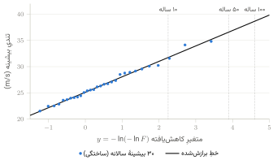
تفسیر. دو روشِ برازش در مقدارِ ۵۰ساله 1.2 m/s اختلاف دارند (35.4 و 36.6)؛ روشِ خطی به دو بیشینهٔ بزرگترِ سمتِ راستِ شکل 3.31 حساستر است. با ده سال داده، بازهٔ ۹۰ درصدیِ مقدارِ ۵۰ساله حدودِ 9 m/s پهنا دارد و با سی سال حدودِ 5 m/s. چون بار روی سازه تقریباً با مربعِ تندی بالا میرود، چند متر بر ثانیه یعنی دهها درصد بار. پیامد: بادِ حدی ورودیِ انتخابِ کلاسِ توربین (با تعریفهای استانداردِ حاکم، فصلِ ۱۴) و طراحیِ سازه (فصلِ ۳۰) است و برآوردِ رسمیِ آن کارِ متخصصِ منابع با دادهٔ بلندمدت است؛ این مثال فقط ریاضیات را نشان میدهد.
3.4.15 زنجیرهٔ مارکوف: خرابی و تعمیر در طولِ زمان
از عکس به فیلم. در مثال 3.47 فرض کردیم هر توربین در هر ساعت مستقل از ساعتِ قبل با احتمالِ 0.97 در دسترس است. اما توربینی که الان خراب است، به احتمالِ زیاد یک ساعت بعد هم خراب است: خرابی حافظه دارد. سادهترین مدلِ این حافظه زنجیرهٔ مارکوف است: وضعیتها (کار / خراب) و احتمالِ رفتن از هر وضعیت به وضعیتِ بعدی در یک گام. اگر \(\lambda\) نرخِ خرابی (وارونِ میانگینِ زمانِ میانِ خرابیها، MTBF) و \(\mu\) نرخِ تعمیر (وارونِ میانگینِ زمانِ تعمیر، MTTR) در هر ساعت باشد، ماتریسِ گذار این است:
\[ \mathbf{P} = \begin{bmatrix} 1 - \lambda & \lambda \\ \mu & 1 - \mu \end{bmatrix} \tag{3.49}\]
هر سطر جمعِ یک دارد. اگر \(\boldsymbol{\pi}\) بردارِ احتمالِ وضعیتها باشد، پس از یک گام \(\boldsymbol{\pi}\mathbf{P}\) میشود و پس از \(k\) گام \(\boldsymbol{\pi}\mathbf{P}^{k}\). توزیعِ پایا برداری است که دیگر تغییر نکند: \(\boldsymbol{\pi}\mathbf{P} = \boldsymbol{\pi}\)؛ یعنی بردارِ ویژهٔ چپِ \(\mathbf{P}\) با مقدارِ ویژهٔ یک (بخش 3.3.4). برای دو وضعیت، پاسخ ساده است: دسترسپذیری برابرِ \(\text{MTBF}/(\text{MTBF} + \text{MTTR})\).
مثال 3.55 (دسترسپذیری با حافظه) پرسش. هر توربین بهطورِ میانگین 2000 ساعت کار میکند و تعمیرش 60 ساعت طول میکشد (فرضی، A-039). توزیعِ پایا را حساب کنید، دوازده توربین را ده سال ساعت به ساعت شبیهسازی کنید و نتیجه را با مدلِ دوجملهایِ مثال 3.47 مقایسه کنید. توربینی که الان خراب است، با چه احتمالی ۲۴ ساعت بعد هم خراب است؟
پاسخ.
one turbine: MTBF 2000 h, MTTR 60 h (A-039, assumed)
transition matrix per hour: [[0.9995 0.0005] [0.0167 0.9833]]
stationary distribution (pi P = pi): up 0.9709, down 0.0291
MTBF / (MTBF + MTTR) = 0.9709
12 turbines simulated for 10 years, hourly: availability 0.9713
hours with 2 or more down: simulated 4.5 %, binomial 4.6 %
a turbine down now is still down 24 h later with probability 0.670
(an independent hourly draw would give 0.029)تفسیر. دسترسپذیری 97.1 % است و سهمِ ساعتهایی که دو توربین یا بیشتر خراباند با مدلِ دوجملهای میخواند: در یک لحظه، دو مدل یکیاند. تفاوت در زمان است: توربینِ خراب به احتمالِ 0.67 فردا هم خراب است، نه 0.03. پس خرابیها در دورههای طولانی رخ میدهند و اگر یک دورهٔ خرابی با هفتهای پرباد همزمان شود، انرژیِ ازدسترفته بسیار بیشتر از میانگین است. برنامهریزیِ نگهداری (فصلهای ۵۱ و ۵۲)، موجودیِ قطعاتِ یدکی و برآوردِ عدمِقطعیتِ تولید (فصلِ ۱۶) به همین «حافظه» حساساند. محدودیت: نرخِ ثابتِ خرابی یعنی «بیحافظه بودنِ عمر»؛ فرسودگی و خرابیهای اولِ عمر این فرض را میشکنند.
- «بادِ صدساله» را با زبانِ احتمال تعریف کنید. آیا ممکن است دو سالِ پشتِ سر هم رخ دهد؟
- احتمالِ وقوعِ مقدارِ ۱۰۰ساله در عمرِ ۲۵ ساله چیست؟
- چرا برای بادِ حدی از بیشینههای سالانه استفاده میکنیم، نه از همهٔ ساعتها؟
- در نمودارِ گامبل، نقطههایی که رو به بالا خم میشوند دربارهٔ مدل چه میگویند؟
- با MTBF برابرِ 1000 h و MTTR برابرِ 100 h، دسترسپذیری چیست؟
- چرا توزیعِ پایای یک زنجیرهٔ مارکوف بردارِ ویژه است؟
- اگر زمانِ تعمیر نصف شود اما خرابیها دو برابر شوند، دسترسپذیری چه میشود؟ چه چیزی تغییر میکند؟
3.4.16 احتمالِ شرطی و قضیهٔ بیز: یک هشدار چقدر میارزد؟
شهود. سامانهٔ پایشِ وضعیت (فصلهای ۳۷ و ۵۲) برای جعبهدندهٔ یک توربین هشدارِ ارتعاش داده است. چقدر محتمل است که واقعاً خرابی در راه باشد؟ پاسخِ شهودیِ بیشترِ مردم «به اندازهٔ دقتِ حسگر» است، و تقریباً همیشه غلط است. پاسخ به احتمالِ پیشین (اینکه خرابی در کل چقدر رایج است) هم بستگی دارد.
احتمالِ شرطی. \(P(A \mid B)\) یعنی «احتمالِ \(A\)، اگر بدانیم \(B\) رخ داده است»: \(P(A \mid B) = P(A \cap B)/P(B)\). از دو بار نوشتنِ \(P(A \cap B)\) قضیهٔ بیز به دست میآید:
\[ P(F \mid +) = \frac{P(+ \mid F)\,P(F)}{P(+ \mid F)\,P(F) + P(+ \mid \bar F)\,P(\bar F)} \tag{3.50}\]
\(F\) «خرابی هست»، \(\bar F\) «خرابی نیست» و \(+\) «هشدار آمد». \(P(+ \mid F)\) حساسیت و \(P(+ \mid \bar F)\) نرخِ هشدارِ کاذب است. بیان با شمارش شهودیتر است: از هزار حالت، چند خرابِ واقعی هشدار میدهند و چند سالم هشدارِ کاذب؟
مثال 3.56 (هشدارِ ارتعاشِ جعبهدنده) پرسش. در هر توربین-ماه احتمالِ آغازِ یک خرابیِ جعبهدنده ۲ درصد است؛ حسگرِ ارتعاش ۹۰ درصدِ خرابیها را میبیند و در ۵ درصدِ ماههای سالم هشدارِ کاذب میدهد (همه فرضی، A-042). (الف) احتمالِ خرابی پس از هشدار چیست؟ (ب) اگر آزمونِ مستقلِ ذراتِ روغن (حساسیتِ ۸۰ و هشدارِ کاذبِ ۳ درصد) هم مثبت شود؟ (پ) دوازده توربین در سال چند هشدارِ کاذب میدهند؟ (ت) اثرِ احتمالِ پیشین را نشان دهید.
پاسخ.
gearbox condition monitoring, per turbine-month (A-042, assumed):
prior P(fault) = 0.02; vibration alarm: sensitivity 0.9, false alarms 0.05
out of 1000 turbine-months: 20 with a fault -> 18 alarms; 980 healthy -> 49
false alarms
P(fault | alarm) = 0.018 / (0.018 + 0.049) = 0.269
P(no fault | no alarm) = 0.9979
a second, independent test (oil debris: sensitivity 0.8, false alarms 0.03)
after an alarm:
prior is now 0.269; P(fault | both positive) = 0.907
12 turbines: expected false alarms per month 0.59, per year 7.1
prior 0.005: P(fault | alarm) = 0.083
prior 0.020: P(fault | alarm) = 0.269
prior 0.100: P(fault | alarm) = 0.667تفسیر. (الف) با حسگری که «۹۰ درصد درست» است، فقط 27 % هشدارها خرابیِ واقعیاند: در هزار توربین-ماه، ۱۸ هشدارِ درست در برابرِ ۴۹ هشدارِ کاذب. دلیلش نادر بودنِ خرابی است، نه بدیِ حسگر. (ب) آزمونِ دوم، با احتمالِ پیشینِ تازهٔ 0.27، اطمینان را به 91 % میرساند؛ این منطقِ «تأییدِ هشدار پیش از اعزامِ گروه و جرثقیل» است. (پ) حدودِ هفت هشدارِ کاذب در سال یعنی اگر هر هشدار توقفِ توربین را در پی داشته باشد، تولیدِ ازدسترفته و خستگیِ هشدار در اپراتور جدی است. (ت) همان حسگر در ناوگانی با خرابیِ ۱۰ درصدی 67 % و با خرابیِ نیمدرصدی فقط 8 % دقت دارد. درس: کیفیتِ یک هشدار را بدونِ نرخِ پایه نمیتوان سنجید؛ طراحیِ منطقِ هشدار (فصلهای ۳۵ و ۵۱) باید هر دو را ببیند. فرض: دو آزمون به شرطِ وضعیتِ واقعی مستقلاند؛ اگر هر دو به یک عاملِ مشترک (مثلاً بارِ زیاد) حساس باشند، اطمینانِ ترکیبی کمتر است.
- \(P(A \mid B)\) و \(P(B \mid A)\) را با یک مثالِ نیروگاهی از هم جدا کنید.
- با احتمالِ پیشینِ ۲ درصد، حسگری با هشدارِ کاذبِ یک درصد (حساسیتِ ۹۰ درصد) چه دقتی دارد؟
- چرا «حسگرِ ۹۵ درصد دقیق» جملهٔ ناقصی است؟
- دو آزمونِ وابسته را چرا نمیتوان مثلِ دو آزمونِ مستقل ترکیب کرد؟
- نرخِ هشدارِ کاذب را چطور از دادهٔ بهرهبرداری برآورد میکنید؟
3.4.17 نمودارِ بلوکیِ قابلیتِ اطمینان: سری، موازی و افزونگی
شهود. انرژیِ نیروگاه از زنجیرهای از تجهیزات میگذرد: کلید، ترانسفورماتور، کلید، خط. اگر هر کدام از کار بیفتد، صادرات قطع میشود؛ اینها سریاند. اگر دو ترانسفورماتور داشته باشیم که هر کدام بهتنهایی کافی باشد، موازیاند. با فرضِ استقلالِ خرابیها، قاعدهها از ضربِ احتمالها میآیند (بخش 3.4.7):
\[ \begin{aligned} A_\text{series} &= \prod_i A_i \\ A_\text{parallel} &= 1 - \prod_i (1 - A_i) \end{aligned} \tag{3.51}\]
\(A_i\) دسترسپذیریِ بلوکِ \(i\) است. زنجیرهٔ سری همیشه از ضعیفترین حلقهاش هم ضعیفتر است و موازی همیشه از قویترین شاخهاش قویتر. نکتهٔ ظریف این است که «از کار افتادن» همیشه همهیاهیچ نیست: با دو ترانسفورماتورِ ۵۰ درصدی، از کار افتادنِ یکی فقط بخشی از ظرفیت را میگیرد و هزینهاش به این بستگی دارد که نیروگاه در آن زمان چقدر تولید میکند.
مثال 3.57 (یک ترانسفورماتور یا دو؟) پرسش. مسیرِ صادراتِ نیروگاهِ P را سریِ «کلید، ترانسفورماتور، کلید، خط» بگیرید با دسترسپذیریهای 0.999، 0.995، 0.999 و 0.997 (فرضی، A-044). انرژیِ ازدسترفتهٔ مورد انتظار را برای سه گزینه بیابید: یک ترانسفورماتورِ 100 MVA، دو ترانسفورماتورِ ۱۰۰ درصدی، و دو ترانسفورماتورِ ۵۰ درصدی (از منحنیِ تداومِ مثال 3.53 برای انرژیِ بالای 50 MW استفاده کنید).
پاسخ.
export path of Plant P: breaker - transformer - breaker - line, in series
breaker 0.999, transformer 0.995, line 0.997 (A-044, assumed)
one 100 MVA transformer: A = 0.99003; expected loss 2.89 GWh/yr of 289.8
two 100 % transformers in parallel: transformer pair A = 0.999975; path A =
0.99498; loss 1.45 GWh/yr
two 50 % transformers: with one out, only export above 50 MW is lost (27.9
GWh/yr of 289.8)
expected loss 1.73 GWh/yr
assumes independent failures and losses independent of the weatherتفسیر. با یک ترانسفورماتور حدودِ 2.9 GWh در سال (یک درصد) از دست میرود و سهمِ خودِ ترانسفورماتور در آن حدودِ نیمی است. دو ترانسفورماتورِ کامل این سهم را تقریباً صفر میکنند، اما کلیدها و خط همچنان سریاند و افت به 1.45 GWh میرسد: افزونگی فقط به بلوکی کمک میکند که افزونه شده است. دو ترانسفورماتورِ ۵۰ درصدی تقریباً همان سود را دارند (1.73 GWh)، چون بیشترِ ساعتها نیروگاه زیرِ ۵۰ مگاوات تولید میکند و فقط 27.9 GWh از انرژیِ سالانه بالای این مرز است. تصمیمِ نهایی به هزینهٔ هر گزینه، زمانِ واقعیِ تعمیر یا جایگزینیِ ترانسفورماتور (که ممکن است ماهها باشد) و الزاماتِ اتصال بستگی دارد (فصلهای ۱۸، ۲۳ و ۲۵). فرضهای پنهان: خرابیها مستقلاند (یک صاعقه یا آتشسوزی میتواند هر دو ترانسفورماتورِ کنارِ هم را از کار بیندازد) و احتمالِ خرابی به آبوهوا وابسته نیست.
3.4.18 نمونهبرداریِ لایهای و کاهشِ واریانس
مسئله. شبیهسازیِ مونتکارلو (فصلِ ۲) برای برآوردِ میانگین و P90 به تعدادِ زیادی نمونه نیاز دارد، چون خطای نمونهگیری با \(1/\sqrt{n}\) کم میشود (بخش 3.8.2). وقتی هر اجرای مدل گران است (مثلاً شبیهسازیِ ساعتیِ یک سالِ کامل)، هزاران اجرا ممکن نیست. نمونهبرداریِ ابرمکعبِ لاتین (به انگلیسی Latin hypercube sampling) راهی ساده برای کاهشِ این خطاست: بازهٔ هر ورودی را به \(n\) لایهٔ هماحتمال تقسیم میکنیم و از هر لایه دقیقاً یک نمونه برمیداریم؛ ترتیبِ لایهها در هر ورودی بهتصادف جابهجا میشود. نتیجه این است که هیچ بخشی از توزیعِ هیچ ورودیای «جا نمیماند» و نمونهها یکنواختتر از نمونههای کاملاً تصادفی میپوشانند. نمونههای یکنواخت با وارونِ تابعِ توزیع (بخش 3.4.12) به توزیعِ دلخواه تبدیل میشوند.
مثال 3.58 (P90 با نمونههای کمتر) پرسش. انرژیِ سالانهٔ نیروگاهِ P را مدلی ساده از چهار عاملِ نامطمئنِ نرمال بگیرید (فرضی، A-045). میانگین و P90 را ۲۰۰ بار، هر بار با \(n\) نمونه، با مونتکارلوی ساده و با ابرمکعبِ لاتین برآورد کنید و پراکندگیِ برآوردها را مقایسه کنید.
پاسخ.
annual energy with four uncertain factors (A-045, assumed):
E = 192.5 (1 + dv)^2 (1 + dl) + 97.3 (1 + dg)(1 + dp) GWh
std: wind speed 3 %, wind losses 2 %, irradiance 4 %, PV losses 2 %
reference (400 000 samples): mean 290.00 GWh, P90 273.53 GWh
200 repeated studies of n samples: spread (std) of the estimates
n mean: plain MC LHS P90: plain MC LHS
50 1.818 0.152 2.722 1.800
200 0.939 0.041 1.416 0.915
1000 0.420 0.009 0.655 0.424
(GWh) LHS shrinks the spread of the mean most; tails gain lessتفسیر. برای میانگین، ابرمکعبِ لاتین با ۵۰ نمونه دقیقتر از مونتکارلوی ساده با هزار نمونه است: پراکندگیِ 0.15 در برابرِ 0.42 GWh. دلیلش این است که این مدل تقریباً جمعی است و لایهبندیِ هر ورودی سهمِ آن را تقریباً بیخطا میانگین میگیرد. برای P90 سود کمتر است (حدودِ یکسوم کاهش)، چون دنبالهها به ترکیبِ ورودیها وابستهاند. درس: روشِ نمونهبرداری را با کمیتی که میخواهید بسنجید؛ و همیشه با تکرارِ مطالعه با بذرهای مختلف نشان دهید که عددِ گزارششده به بذر وابسته نیست. ابزارهای برآوردِ تولید (فصلِ ۱۶) از همین روشها استفاده میکنند.
- دسترسپذیریِ سه بلوکِ سریِ 0.99 چیست؟ دو بلوکِ موازیِ 0.9؟
- چرا افزودنِ ترانسفورماتورِ دوم افتِ ناشی از خط را کم نمیکند؟
- یک «خرابیِ با علتِ مشترک» در پستِ نیروگاه مثال بزنید. چرا فرضِ استقلال را میشکند؟
- با ابرمکعبِ لاتین و \(n = 4\)، نمونههای یک ورودیِ یکنواخت در کدام بازهها میافتند؟
- چرا لایهبندی برای میانگین بیشتر از P90 سود دارد؟
3.5 ت. روشهای عددی و وارسی
چرا روشِ عددی؟ بیشترِ مسئلههای واقعی جوابِ «بسته» (فرمولی) ندارند: نقطهٔ بیشینهٔ توانِ ماژول (مثال 3.13)، تندیای که مزرعه را به توانِ معینی میرساند، انرژیِ یک منحنیِ توانِ جدولی. روشِ عددی جوابِ تقریبی میدهد، و مهارت در این است که بدانیم تقریب چقدر خوب است. سه منبعِ خطا را از هم جدا کنید: خطای مدل (معادله واقعیت را درست توصیف نمیکند)، خطای گسستهسازی یا برش (جایگزینیِ پیوسته با گامهای محدود) و خطای گرد کردن (عددهای رایانه رقمهای محدود دارند). روشهای این بخش دو خطای آخر را کنترل میکنند؛ خطای اول را فقط مقایسه با واقعیت نشان میدهد.
3.5.1 گرد کردن و بدحالی
گرد کردن. رایانه عددهای اعشاری را با حدودِ ۱۶ رقمِ بامعنا نگه میدارد (دقتِ مضاعف، \(\varepsilon \approx 2.2\times10^{-16}\)). خطای گرد کردنِ یک عمل ناچیز است، اما دو حالتِ خطرناک دارد: (۱) تفریقِ دو عددِ بسیار نزدیک، که رقمهای بامعنا را از بین میبرد (حذفِ فاجعهبار)؛ (۲) جمعِ هزاران عدد با دقتِ کم، که خطاها را انباشته میکند.
بدحالی. یک مسئله بدحال است اگر تغییرِ کوچکی در ورودی تغییرِ بزرگی در خروجی بدهد، مستقل از روشِ حل. برای دستگاهِ خطی، عددِ وضعیت \(\kappa(\mathbf{A})\) میگوید خطای نسبیِ ورودی حداکثر چند برابر میشود؛ اگر \(\kappa = 10^{k}\)، حدودِ \(k\) رقمِ بامعنا از دست میرود. برازشِ چندجملهایِ درجهٔ بالا مثالِ کلاسیکِ بدحالی است.
مثال 3.59 (سه دامِ عددی) پرسش. (الف) \(1 - \cos(10^{-8})\) را مستقیم و با اتحادِ \(2\sin^{2}(x/2)\) حساب کنید. (ب) ۸۷۶۰ مقدارِ ساعتیِ توانِ خورشیدی را با دقتِ ۶۴ بیتی و ۳۲ بیتی جمع کنید. (پ) عددِ وضعیتِ ماتریسِ برازشِ چندجملهایهای درجهٔ ۱ تا ۱۰ روی تندیهای صفر تا ۲۵ را بیابید.
پاسخ.
1 - cos(1e-8): naive 0.000e+00; stable 2 sin^2(x/2) 5.000e-17 (true 5.0e-17)
sum of 8760 hourly PV values: float64 97304.2129 MWh; numpy float32
97304.2109;
running float32 sum 97304.1328 (error -0.0801 MWh)
condition number of polynomial-fit matrices on 0..25 m/s:
degree 1: 2.84e+01
degree 3: 2.26e+04
degree 6: 5.44e+08
degree 10: 7.36e+14تفسیر. (الف) فرمولِ مستقیم صفر میدهد: \(\cos(10^{-8})\) در دقتِ مضاعف دقیقاً یک است و تفریق همهچیز را میبرد؛ اتحادِ مثلثاتی پاسخِ درست را حفظ میکند. راهحل: فرمول را طوری بازنویسی کنید که تفریقِ عددهای نزدیک حذف شود. (ب) جمعِ پیاپیِ ۳۲ بیتی 0.08 MWh خطا دارد؛ در یک سریزمانیِ دهساله یا دهدقیقهای، خطا بزرگتر میشود. پیشفرضِ ۶۴ بیتی را عوض نکنید. (پ) عددِ وضعیتِ برازشِ درجهٔ ۱۰ حدودِ \(10^{15}\) است: تقریباً همهٔ رقمهای دقتِ مضاعف از دست میروند. چندجملهایِ درجهٔ بالا برای برازشِ منحنیِ توان انتخابِ بدی است (بخش 3.5.3).
3.5.2 ریشهیابی
مسئله. \(x\) را بیابید که \(f(x) = 0\). هر معادلهای را میتوان به این شکل نوشت: «تندیای که توانِ مزرعه را 30 MW میکند» یعنی ریشهٔ \(f(v) = P(v) - 30\).
سه روش.
- دوبخشی: اگر \(f(a)\) و \(f(b)\) همعلامت نباشند، ریشه در \([a, b]\) است؛ بازه را نصف کن و نیمهای را نگه دار که تغییرِ علامت دارد. همیشه همگرا میشود، اما آهسته: هر گام یک رقمِ دودویی (حدودِ \(0.3\) رقمِ دهدهی) میافزاید.
- نیوتن: از نقطهٔ فعلی خطِ مماس را بکش و ریشهٔ آن را حدسِ بعدی بگیر: \(x_{k+1} = x_k - f(x_k)/f'(x_k)\). نزدیکِ ریشه بسیار تند است (تعدادِ رقمهای درست در هر گام تقریباً دو برابر میشود)، اما مشتق لازم دارد و اگر حدسِ اولیه بد باشد، ممکن است واگرا شود.
- وتری: نیوتن با مشتقِ تقریبی از دو نقطهٔ آخر. تقریباً به تندیِ نیوتن، بینیاز به مشتق.
def newton(f: Callable[[float], float], df: Callable[[float], float], x0: float,
tol: float = 1e-12, max_iter: int = 50) -> RootResult:
"""Newton's method: x <- x - f(x)/f'(x). Fast near a simple root; may diverge."""
x = x0
history = [x]
for k in range(1, max_iter + 1):
d = df(x)
if d == 0:
raise ZeroDivisionError("zero derivative: Newton step undefined")
step = f(x) / d
x -= step
history.append(x)
if abs(step) < tol * max(1.0, abs(x)):
return RootResult(x, k, history)
return RootResult(x, max_iter, history, converged=False)مثال 3.60 (وارونهٔ منحنیِ توان) پرسش. مزرعهٔ بادیِ نیروگاهِ P در چه تندیای 30 MW تحویل میدهد (با ۱۲ درصد تلفات)؟ با سه روش حل کنید و آهنگِ همگرایی را مقایسه کنید.
پاسخ. هر توربین باید \(30\,000/12/0.88 = 2840.9\ \text{kW}\) بدهد:
farm output 30 MW -> each turbine 2840.9 kW before 12 % losses
bisection on [3, 13] (table): v = 8.322130 m/s after 24 halvings
secant from 6 and 10 (table): v = 8.322130 m/s after 4 steps
Newton on a cubic spline: v = 8.326478 m/s after 6 steps
Newton iterates: 10.000000, 7.648617, 8.377665, 8.326658, 8.326478, 8.326478
error per step: bisection halves it; secant and Newton square it (roughly)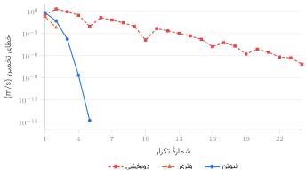
تفسیر. دوبخشی ۲۴ گام لازم داشت تا خطا به \(10^{-6}\) برسد و خطایش در هر گام تقریباً نصف میشود (خطِ صافِ نزولی در شکل 3.32، با کمی ناهمواری). نیوتن در پنج گام به دقتِ ماشین رسید: وقتی به ریشه نزدیک شد، توانِ ده در خطا در هر گام تقریباً دو برابر شد، یعنی همگراییِ درجهٔ دو. وتری روی جدولِ خطیِ تکهای حتی تندتر بود، چون وقتی دو نقطه در یک تکهٔ خطی بیفتند، خطِ وتر دقیقاً همان تکه است. نکتهٔ ظریف: نیوتن روی اسپلاین و دو روشِ دیگر روی جدولِ خطی کار کردند و ریشههایشان چهار هزارم متر بر ثانیه فرق دارد: اختلافِ مدل، نه روش.
مثال 3.61 (ضریبِ شکلِ وایبول با دوبخشی) پرسش. در روشِ گشتاورها (مثال 3.41)، \(k\) از معادلهٔ \(\Gamma(1 + 2/k)/\Gamma(1 + 1/k)^{2} - 1 = (s/\bar v)^{2}\) به دست میآید. چرا دوبخشی روشِ مناسبی است؟ آن را حل کنید.
پاسخ. سمتِ چپ با \(k\) یکنوا کم میشود، پس یک ریشه دارد و بازهٔ \([0.5, 20]\) آن را حتماً در بر میگیرد؛ مشتقِ تابعِ گاما هم در دسترس نیست. دوبخشی تضمین میدهد:
method of moments: Gamma(1+2/k)/Gamma(1+1/k)^2 - 1 = (s/mean)^2 = 0.24683
bisection on [0.5, 20]: k = 2.116341 after 31 steps
first iterates: 10.250, 5.375, 2.938, 1.719, 2.328, 2.023, 2.176, 2.100تفسیر. ۳۱ گام برای دقتِ \(10^{-8}\)؛ در عمل ارزان است. قاعدهٔ انتخاب: وقتی تابع ارزان و بازه معلوم است و ایمنی مهمتر از سرعت، دوبخشی؛ وقتی مشتق در دسترس و حدسِ اولیه خوب است، نیوتن؛ کتابخانههای عددی معمولاً ترکیبی از هر دو را بهکار میبرند (روشِ برنت).
3.5.3 درونیابی و برونیابی
درونیابی مقداری را میانِ نقطههای معلوم برآورد میکند؛ برونیابی بیرون از آنها. درونیابیِ خطیِ تکهای (خط میانِ هر دو نقطهٔ پیاپی) ساده، پایدار و برای جدولهای ریز (مثلِ منحنیِ توان با گامِ 0.5 m/s) معمولاً کافی است و همان روشی است که مدلِ غربالگریِ فصلِ ۱ بهکار میبرد. اسپلاینِ مکعبی منحنیِ نرمی است که از همهٔ نقطهها میگذرد و مشتقِ پیوسته دارد. یک چندجملهایِ درجهٔ بالا از همهٔ نقطهها، وسوسهانگیز اما خطرناک است.
مثال 3.62 (یازده گره، دو رفتار) پرسش. از منحنیِ توان فقط یازده نقطه را نگه دارید (۳ تا ۲۳ متر بر ثانیه با گامِ ۲) و منحنی را یک بار با درونیابیِ خطیِ تکهای و یک بار با چندجملهایِ درجهٔ ۱۰ (لاگرانژ) بازسازی کنید. بیشترین خطا کجاست؟
پاسخ.
11 nodes of the power curve, 3..23 m/s every 2 m/s
linear interpolation: worst error 244 kW
degree-10 polynomial (Lagrange): worst error 772 kW (at 3.6 m/s)
polynomial value at 22 m/s: 4434 kW (true 5000 kW)
high-degree polynomials oscillate between nodes (Runge); piecewise methods
do not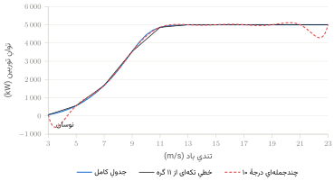
تفسیر. چندجملهای از همهٔ گرهها دقیقاً میگذرد، اما میانِ آنها نوسان میکند: نزدیکِ تندیِ آغازِ کار توانِ منفی (−772 kW خطا) و در 22 m/s بهجای 5000، 4434 kW میدهد. این پدیدهٔ رونگه است: افزودنِ درجه، تقریب را بدتر میکند، بهویژه نزدیکِ لبهها. درونیابیِ خطیِ تکهای خطای بیشینهٔ 244 kW دارد، در زانوی منحنی، و هرگز نوسان نمیکند. درس: گذشتن از همهٔ نقطهها معیارِ خوبی برای مدل نیست؛ رفتارِ میانِ نقطهها و بیرون از آنها را هم بسنجید.
برونیابی همیشه پرمخاطره است، چون رابطه بیرون از داده ممکن است کاملاً عوض شود: منحنیِ توان پس از تندیِ قطع صفر میشود (مثال 3.10)، دمای ماژول ممکن است در تابشهای بسیار زیاد رفتارِ دیگری داشته باشد، و روندِ ده سالِ گذشتهٔ قیمت لزوماً ادامه نمییابد. اگر برونیابی ناگزیر است، مدلِ فیزیکی را به برازشِ تجربی ترجیح دهید و دامنهٔ اعتبار را صریحاً بنویسید.
3.5.4 انتگرالگیریِ عددی و خطای گسستهسازی
قاعدهها. برای نمونههای همفاصله با گامِ \(h\):
- ذوزنقهای: هر دو نقطهٔ پیاپی را با خط وصل کن؛ خطا متناسب با \(h^{2}\) است (مرتبهٔ ۲).
- سیمپسون: هر سه نقطهٔ پیاپی را با سهمی وصل کن؛ خطا متناسب با \(h^{4}\) است (مرتبهٔ ۴)؛ تعدادِ بازهها باید زوج باشد.
- برونیابیِ ریچاردسون: اگر دو برآورد با گامهای \(h\) و \(h/2\) و خطای متناسب با \(h^{p}\) داریم، ترکیبِ \((2^{p}I_{h/2} - I_h)/(2^{p} - 1)\) جملهٔ اصلیِ خطا را حذف میکند.
\[ \begin{aligned} I_\text{trap} &= h\Big(\tfrac12 y_0 + y_1 + \cdots + y_{n-1} + \tfrac12 y_n\Big)\\ I_\text{Simp} &= \frac{h}{3}\big(y_0 + 4y_1 + 2y_2 + 4y_3 + \cdots + 4y_{n-1} + y_n\big) \end{aligned} \tag{3.52}\]
مثال 3.63 (پاسخِ تحلیلی در برابرِ پاسخِ عددی) پرسش. برای روزی با توانِ نیمسینوسی (بیشینه 58 MW، طولِ روز ۱۴٫۴ ساعت، ساختگی) انرژیِ دقیق \(2P_\text{max}L/\pi\) است (معادلهٔ 3.16). انرژی را با قاعدههای ذوزنقهای و سیمپسون و گامهای ۱۴۴ تا ۹ دقیقه حساب کنید، خطا را با پاسخِ دقیق بسنجید و مرتبهٔ هر قاعده را از داده بخوانید.
پاسخ.
half-sine day, peak 58 MW, 14.4 h: exact energy 2 Pmax L / pi = 531.7048 MWh
h (min) trapezoid error Simpson error
144 519.5015 -1.22e+01 531.9343 +2.29e-01
72 528.6645 -3.04e+00 531.7188 +1.40e-02
36 530.9454 -7.59e-01 531.7057 +8.69e-04
18 531.5150 -1.90e-01 531.7049 +5.42e-05
9 531.6574 -4.75e-02 531.7048 +3.39e-06
halving h divides the trapezoid error by about 4 and Simpson's by about 16
Richardson from h = 72 and 36 min: 531.7057 MWh (error +8.69e-04)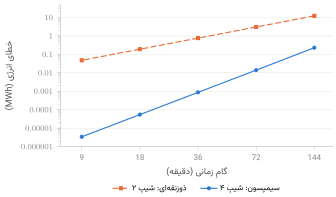
تفسیر. با هر نصف شدنِ گام، خطای ذوزنقهای چهار برابر و خطای سیمپسون شانزده برابر کم میشود: روی نمودارِ لگاریتمی-لگاریتمی، دو خطِ راست با شیبهای ۲ و ۴ (شکل 3.34). خطای ذوزنقهای منفی است (منحنیِ مقعر، یعنی رو به پایین خمیده، بالای وترها میماند و ذوزنقهها کمبرآورد میکنند). ریچاردسون از دو برآوردِ ذوزنقهای دقیقاً همان سیمپسون را ساخت: این دو روش در واقع یکیاند. این مقایسهٔ تحلیلی و عددی، شیوهٔ استانداردِ وارسیِ هر برنامهٔ عددی است: روی مسئلهای با پاسخِ دقیقِ معلوم، خطا را بسنجید و ببینید با مرتبهٔ نظری کم میشود یا نه.
خطای گسستهسازی در داده. خطای گسستهسازی فقط مسئلهٔ روشهای عددی نیست؛ وضوحِ زمانیِ داده هم آن را میسازد. دادهٔ ساعتی میانگین است و نوسانهای درونِ ساعت را نمیبیند. برای کمیتهای خطی (انرژی) این مهم نیست، اما برای کمیتهایی که به سقف یا آستانه وابستهاند (بُرشِ اینورتر، بُرشِ اتصال، شارژِ باتری) مهم است.
مثال 3.64 (بُرشی که دادهٔ ساعتی نمیبیند) پرسش. یک روزِ ساختگی با نوسانهای دهدرصدیِ دقیقهبهدقیقه (عبورِ ابرهای پراکنده) و سقفِ 50 MW اینورتر بسازید. انرژیِ بریدهشده را یک بار با دادهٔ یکدقیقهای و یک بار با میانگینهای ساعتی حساب کنید.
پاسخ.
synthetic day with 10 % minute-to-minute fluctuations, 50 MW inverter limit
energy above the limit from 1-minute data: 28.333 MWh
energy above the limit from hourly means: 24.430 MWh
hourly averaging hides 14 % of the clipped energy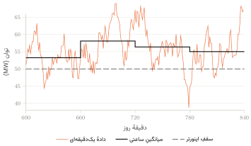
تفسیر. میانگینِ ساعتی ۱۴ درصدِ انرژیِ بریدهشده را پنهان میکند: در دقیقههایی که توان از سقف بالاتر است، بُرش رخ میدهد حتی اگر میانگینِ ساعت کمتر از سقف باشد (شکل 3.35). این یک خطای سامانمندِ گسستهسازی است که همیشه بُرش را کمبرآورد میکند، و به همین دلیل مطالعههای دقیقِ نسبتِ DC/AC و اندازهٔ باتری دادهٔ زیرساعتی میخواهند (فصلهای ۱۵ و ۱۹). درس: پیش از انتخابِ گامِ زمانیِ داده بپرسید آیا مدل غیرِخطی است (سقف، آستانه، مجذور) یا نه.
- سه منبعِ خطای محاسبهٔ عددی را نام ببرید. روشهای عددی کدام را کنترل میکنند؟
- چرا \(\sqrt{x + 1} - \sqrt{x}\) برای \(x = 10^{12}\) نادقیق است؟ آن را بازنویسی کنید.
- عددِ وضعیتِ \(10^{6}\) یعنی حدودِ چند رقمِ بامعنا از دست میرود؟
- پس از ده گامِ دوبخشی روی بازهای به طولِ 10 m/s، طولِ بازه چقدر است؟
- نیوتن را برای \(f(x) = x^{2} - 2\) از \(x_0 = 1\) دو گام با دست بروید.
- چرا چندجملهایِ درجهٔ بالا برای برازشِ منحنیِ توان بد است؟ جایگزین چیست؟
- اگر خطای ذوزنقهای با گامِ 60 min برابرِ 0.4 MWh باشد، با گامِ 15 min چقدر است؟
- چرا دادهٔ ساعتی بُرشِ اینورتر را کمبرآورد میکند ولی انرژیِ کل را درست میدهد؟
3.5.5 برنامهریزیِ خطی و بهینهسازیِ مقید
شهود. بسیاری از تصمیمهای نیروگاه «بهترین انتخاب با منابعِ محدود»اند: چه ترکیبی از خورشیدی و بادی با کمترین هزینه به هدفِ تولید میرسد؟ باتری کِی شارژ و کِی دشارژ شود تا درآمد بیشینه شود؟ اگر هدف و قیدها همه خطی باشند، مسئله یک برنامهٔ خطی است و الگوریتمهای قدرتمندی جوابِ بهینهٔ سراسریاش را تضمین میکنند.
شکلِ استاندارد. کمینه کن \(\mathbf{c}^{\mathsf{T}}\mathbf{x}\) با قیدهای \(\mathbf{A}\mathbf{x} \le \mathbf{b}\)، \(\mathbf{A}_\text{eq}\mathbf{x} = \mathbf{b}_\text{eq}\) و کرانهای متغیرها. ناحیهٔ شدنی (همهٔ \(\mathbf{x}\)هایی که قیدها را برقرار میکنند) یک چندوجهیِ محدب است و جوابِ بهینه همیشه روی یکی از رأسهای آن است. در دو بُعد میتوان این را دید.
مثال 3.65 (ترکیبِ خورشیدی و بادی با کمترین هزینه) پرسش. با تولیدِ ویژهٔ نیروگاهِ P (هر مگاوات-پیک خورشیدی و هر مگاوات بادی در سال چند گیگاواتساعت میدهد)، ظرفیتِ خورشیدیِ \(x\) و بادیِ \(y\) را طوری انتخاب کنید که دستکم 290 GWh در سال تولید شود و هزینهٔ \(0.55x + 1.25y\) (واحدهای ساختگی) کمینه باشد. قیدها: زمینِ خورشیدی حداکثر 80 MWp؛ جمعِ ظرفیتِ AC حداکثر 120 MW (هر دو فرضی).
پاسخ.
yields: PV 1.6217 GWh per MWp, wind 3.2090 GWh per MW (Plant P Reference Data
Pack 1.0.0, scenario S0 (no-BESS))
minimise 0.55 x + 1.25 y (fictional cost units) subject to
1.622 x + 3.209 y >= 290 GWh; x <= 80 MWp (land); x/1.2 + y <= 120 MW
optimum x = 80.0 MWp, y = 49.9 MW, cost 106.4 units
cost per GWh: PV 0.339, wind 0.390 units -> PV first, up to the land limit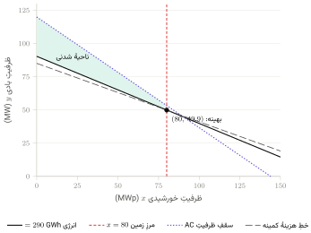
تفسیر. با این هزینهها، هر گیگاواتساعت از خورشیدی ارزانتر است، پس بهینه تا جایی که قیدِ زمین اجازه میدهد خورشیدی میسازد و بقیه را با بادی پُر میکند: رأسِ \((80, 49.9)\). خطِ هزینه درست در این رأس ناحیه را لمس میکند (شکل 3.36). حساسیت: اگر هزینهٔ خورشیدی بیش از ۱۵ درصد بالا برود، ترتیبِ هزینه بر انرژیِ دو منبع جابهجا میشود و بهینه به رأسِ دیگری، \((0, 90.4)\)، میپرد: جوابِ برنامهٔ خطی پیوسته به دادهها وابسته نیست، پلهای است. هشدار بزرگ: این مدل ارزشِ زمانیِ انرژی، سقفِ اتصال، مکمل بودن و ریسک را نمیبیند؛ انتخابِ واقعیِ ترکیب در فصلهای ۱۸ و ۲۲ انجام میشود. این مثال فقط ساختارِ مسئله را نشان میدهد.
مثال 3.66 (برنامهٔ روزانهٔ باتری بهعنوانِ برنامهٔ خطی) پرسش. باتریِ 20 MW با بازهٔ مجازِ 4 تا 36 MWh و بازدهِ یکطرفهٔ \(0.927\) میتواند در یک روز با قیمتهای ساعتیِ ساختگی خرید و فروش کند (فقط برای نشان دادنِ روش؛ قاعدهٔ A-012 شارژ از شبکه را برای S1 مجاز نمیداند). انرژیِ پایانِ روز باید با آغاز (20 MWh) برابر باشد. برنامهٔ بهینه چیست؟
پاسخ. متغیرها توانِ شارژ \(c_t\) و دشارژ \(d_t\) در ۲۴ ساعتاند (۴۸ متغیر). هدف: بیشینه کردنِ \(\sum p_t(d_t - c_t)\). قیدها: \(0 \le c_t, d_t \le 20\)؛ انرژیِ انباشته \(E_t = E_0 + \sum_{\tau \le t}(\eta c_\tau - d_\tau/\eta)\) میانِ ۴ و ۳۶ در هر ساعت؛ و \(E_{24} = E_0\):
one day of price arbitrage, battery 20 MW, usable 4..36 MWh, one-way
efficiency 0.927
prices (fictional units/MWh): 30 28 27 27 28 32 40 48 45 38 33 30 29 30 34
42 55 70 78 72 60 48 40 34
linear program: 48 variables, 48 inequality and 1 equality constraints
optimum revenue 1584 units; charge hours 3, 11, 12, 23; discharge hours 7,
8, 18, 19
energy charged 69.0 MWh, discharged 59.4 MWh; SOC range 4.0..36.0 MWh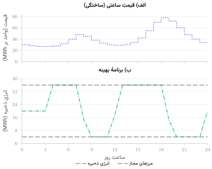
تفسیر. حلکننده دو چرخه یافت: شارژ در نیمهشب و دشارژ در اوجِ صبح، سپس شارژ در ظهر و دشارژ در اوجِ عصر، و یک شارژِ پایانی تا انرژی به مقدارِ آغاز برگردد. باتری در هر چرخه از کف تا سقف میرود: یک ویژگیِ رایجِ جوابهای برنامهٔ خطی که «همه یا هیچ» است. محدودیتها: پیشبینیِ کاملِ قیمت، بیهزینهٔ فرسودگی، بیقیدِ تولیدِ همزمانِ نیروگاه. فصلهای ۱۹ تا ۲۱ اینها را میافزایند و نشان میدهند که درآمدِ واقعی کمتر از این «کرانِ بالا» است. وارسی: انرژیِ دشارژشده (59.4) تقریباً \(0.86\) برابرِ انرژیِ شارژشده (69.0 MWh) است (درست، با بازدهِ رفتوبرگشت).
بهینهسازیِ غیرِخطی. وقتی هدف یا قیدها غیرِخطیاند (تلفات با مجذورِ جریان، هزینه با اندازه، بازده با بار)، روشهای دیگری لازم است: شرطِ لاگرانژ (مثال 3.14) برای مسئلههای ساده، و الگوریتمهای عددی (گرادیان، نیوتن، برنامهریزیِ درجهٔ دو) برای بقیه. یک تفاوتِ مهم: در مسئلههای غیرِمحدب ممکن است چند بهینهٔ محلی باشد و الگوریتم فقط یکی را بیابد؛ آغاز از چند نقطهٔ متفاوت، وارسیِ سادهای است.
3.5.6 تحلیلِ حساسیت
هدف. کدام ورودی بیشترین اثر را بر نتیجه دارد؟ پاسخ میگوید کجا دنبالِ دادهٔ بهتر برویم و کجا فرضِ ساده کافی است. سادهترین روش یکییکی است: هر ورودی را به مقدارِ پایین و بالای محتملش ببر، بقیه را ثابت نگه دار و تغییرِ نتیجه را ثبت کن. نمودارِ حاصل، با بلندترین میله در بالا، نمودارِ گردباد نام دارد.
مثال 3.67 (کدام فرض بیشترین وزن را دارد؟) پرسش. انرژیِ صادراتیِ نیروگاهِ P را وقتی هر یک از این ورودیها به مقدارِ پایین و بالای آموزشیاش میرود حساب کنید: ضریبِ مقیاسِ تندیِ باد (\(\pm 3\,\%\))، تابش (\(\pm 4\,\%\))، تلفاتِ بادی (۹ تا ۱۵ درصد)، ضریبِ عملکردِ DC (\(\pm 5\,\%\)) و بازدهِ اینورتر (۹۷ تا ۹۹ درصد).
پاسخ.
one-at-a-time sensitivity of exported energy, base 289.8 GWh
wind speed scale +-3 % -9.5 .. +9.2 GWh
wind losses 15 / 9 % -6.6 .. +6.5 GWh
PR_DC +-5 % -4.8 .. +4.7 GWh
irradiation +-4 % -3.9 .. +3.8 GWh
inverter efficiency 97 / 99 % -1.0 .. +1.0 GWh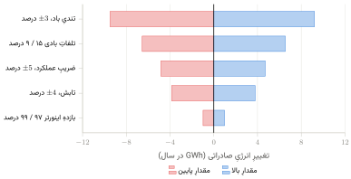
تفسیر. تندیِ باد با فاصلهٔ زیاد بالاترین میله است، سپس تلفاتِ بادی. پس اگر بودجهٔ محدودی برای دادهٔ بهتر داریم، اولویت اندازهگیریِ باد است (فصلِ ۱۳) و پس از آن تلفاتِ بادی (اثرِ ویک و دسترسی؛ فصلهای ۱۴ و ۱۵). بازدهِ اینورتر، هر قدر هم در برگههای داده بحثبرانگیز باشد، اینجا کماثر است. محدودیت: روشِ یکییکی اثرِ همزمانِ چند ورودی و برهمکنشها را نمیبیند؛ مونتکارلو (مثال 2.35) آن را میبیند. و بازهها آموزشیاند: نمودارِ گردباد فقط به اندازهٔ بازههایش معتبر است.
3.5.7 انضباطِ مدلسازی
همهٔ این فصل یک پیام دارد: مدلِ ریاضی ابزار است، نه حقیقت. برای آنکه ابزار درست بهکار رود، هر مدلی که در پروندهٔ نیروگاه بهکار میرود یک کارتِ مدل دارد که اینها را ثبت میکند:
- هدف: کدام پرسش را پاسخ میدهد؛ برای کدام تصمیم.
- متغیرها و یکاها: ورودیها، خروجیها، پارامترها.
- معادلهها و فرضها: و اینکه هر فرض از کجا آمده (فیزیک، برازش، قرارداد).
- شرایطِ مرزی و اولیه: برای مدلهای پویا.
- دامنهٔ اعتبار: بازهٔ ورودیهایی که مدل در آن آزموده شده؛ رفتار بیرون از آن.
- دادهٔ کالیبراسیون: پارامترها با کدام داده برازش شدهاند.
- باقیماندهها: اختلافِ مدل و داده چقدر است و آیا الگو دارد.
- وارسیهای مستقل: حالتهای حدی، پایستگی، مقایسه با پاسخِ تحلیلی، آزمونهای کد.
- عدمِ قطعیتِ مدل: و جداییاش از خطای عددی.
- مالک و بازنگری: چه کسی آن را نگه میدارد، کِی دوباره سنجیده میشود.
مثال 3.68 (کارتِ مدلِ غربالگریِ بادی) پرسش. برای مدلِ تولیدِ بادیِ غربالگری (فصلِ ۱؛ تابعِ wind_power_mw در کتابخانهٔ همراه) کارتِ مدل بنویسید.
پاسخ.
| بند | مدلِ غربالگریِ بادی |
|---|---|
| هدف | تولیدِ سالانهٔ مزرعه برای دروازهٔ غربالگری؛ نه برای تضمین یا تأمینِ مالی |
| ورودیها | تندیِ ساعتی در ارتفاعِ توپی (m/s)؛ جدولِ منحنیِ توان (kW)؛ تعدادِ توربین؛ تلفاتِ لامپشده |
| معادله | توانِ هر ساعت = درونیابیِ خطیِ جدول × تعداد × (۱ − تلفات) |
| فرضها | چگالیِ 1.225 kg/m³ (A-028)؛ تلفاتِ ثابتِ ۱۲ درصد؛ تندیِ یکسان برای همهٔ توربینها |
| دامنهٔ اعتبار | تندیهای ۰ تا ۳۰ متر بر ثانیه؛ بیرون از جدول تعریفنشده؛ گامِ ساعتی |
| کالیبراسیون | هیچ؛ منحنیِ توان ساختگی است |
| باقیماندهها | دادهٔ تولیدِ واقعی برای مقایسه وجود ندارد |
| وارسیها | روشِ فراوانیِ بستهای (+0.11 %)، کرانها، آزمونهای واحدِ test_screening |
| عدمِ قطعیتِ مدل | بزرگ و کمّینشده؛ چگالی حدودِ −8.5 %؛ ویک و دسترسی در تلفاتِ لامپشده |
| مالک و بازنگری | تیمِ ارزیابیِ منابع؛ جایگزینی در فصلهای ۱۱ و ۱۵ |
تفسیر. این کارت در یک نگاه نشان میدهد که مدل برای چه کاری خوب است (مقایسهٔ سریعِ گزینهها) و برای چه کاری نه (هر عددی که پول بر آن تکیه کند). سطرِ «کالیبراسیون: هیچ» و «باقیماندهها: دادهای نیست» صادقانهترین و مهمترین سطرهای کارتاند.
- چرا جوابِ یک برنامهٔ خطی روی یک رأسِ ناحیهٔ شدنی است؟
- در مثال 3.65، اگر قیدِ زمین برداشته شود، جوابِ بهینه چه میشود؟
- چرا باتری در مثال 3.66 از کف تا سقف میرود؟ در واقعیت چه چیزی این رفتار را محدود میکند؟
- فرقِ بهینهٔ محلی و سراسری چیست؟ چرا در برنامهٔ خطی این مشکل نیست؟
- نمودارِ گردباد چه چیزی را نمیبیند؟
- ده بندِ کارتِ مدل را از حفظ بنویسید. کدام بند بیشتر از همه فراموش میشود؟
- کارتِ مدلی برای مدلِ دمای کابلِ مثال 3.29 بنویسید.
- «دامنهٔ اعتبار» مدلِ پروفیلِ لگاریتمیِ باد (مثال 2.15) چیست؟
3.5.8 مشتقگیریِ عددی: گامِ کوچکتر همیشه بهتر نیست
دو خطا در یک فرمول. مشتقِ عددی با تفاضلها ساخته میشود (بخش 3.2.9). سریِ تیلور (معادلهٔ 3.18) نشان میدهد تفاضلِ پیشرو خطای برشیِ متناسب با \(h\) و تفاضلِ مرکزی متناسب با \(h^{2}\) دارد؛ پس به نظر میرسد \(h\) را باید تا جای ممکن کوچک گرفت. اما وقتی \(h\) خیلی کوچک است، \(f(x + h)\) و \(f(x)\) تقریباً برابرند و تفریقشان دچارِ حذفِ فاجعهبار میشود (بخش 3.5.1): خطای گرد کردن متناسب با \(\varepsilon/h\) رشد میکند. جمعِ دو خطا کمینهای دارد: برای تفاضلِ پیشرو نزدیکِ \(h \approx \sqrt\varepsilon \approx 10^{-8}\) و برای تفاضلِ مرکزی نزدیکِ \(h \approx \varepsilon^{1/3} \approx 10^{-5}\) (نسبت به اندازهٔ \(x\)).
مثال 3.69 (منحنیِ U شکلِ خطا) پرسش. مشتقِ \(e^{x}\) را در \(x = 1\) (که دقیقاً \(e\) است) با تفاضلهای پیشرو و مرکزی و گامهای \(10^{-15}\) تا \(10^{-1}\) حساب کنید و خطا را رسم کنید.
پاسخ.
derivative of e^x at x = 1 (exact e) by finite differences:
forward (f(x+h) - f(x))/h: smallest error near h = 1.0e-08 (theory sqrt(eps)
= 1.5e-08)
central (f(x+h) - f(x-h))/2h: smallest error near h = 3.2e-06 (theory
eps^(1/3) = 6.0e-06)
smaller h is NOT always better: truncation error falls, round-off error
grows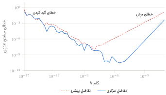
تفسیر. هر دو منحنی U شکلاند و کمینهشان نزدیکِ پیشبینیِ نظری است (شکل 3.39). با گامِ \(10^{-15}\) خطا از خودِ مشتق بزرگتر است. درسهای عملی: (۱) تفاضلِ مرکزی را ترجیح دهید؛ (۲) گام را نسبی انتخاب کنید (\(h = 10^{-6}|x|\) برای مرکزی، همان که کتابخانهٔ عدمِ قطعیتِ فصلِ ۲ بهکار میبرد)؛ (۳) اگر مشتقِ تحلیلی در دسترس است (مثلاً از اسپلاین)، آن را بهکار ببرید؛ (۴) مشتقگیری از دادهٔ اندازهگیریشده نویز را بزرگ میکند، پس پیش از آن داده را صاف کنید.
3.5.9 درونیابیِ دوبعدی در جدولهای تجهیزات
مسئله. برگههای دادهٔ تجهیزات اغلب جدولهای دوبعدی میدهند: بازدهِ اینورتر بر حسبِ توان و ولتاژِ ورودی، توانِ توربین بر حسبِ تندی و چگالیِ هوا، ظرفیتِ کابل بر حسبِ دمای خاک و عمق. درونیابیِ دوخطی مقدار را در نقطهای میانِ چهار گرهٔ جدول برآورد میکند: ابتدا در امتدادِ یک محور دو درونیابیِ خطی، سپس یک درونیابیِ خطی در امتدادِ محورِ دیگر. نتیجه به ترتیبِ محورها بستگی ندارد.
مثال 3.70 (بازدهِ اینورتر در نقطهای میانِ جدول) پرسش. جدولِ ساختگیِ بازدهِ یک اینورتر برای پنج سطحِ توان و سه ولتاژِ DC داده شده است. بازده را در ۶۰ درصدِ توانِ نامی و 1000 V بیابید.
پاسخ.
inverter efficiency table (synthetic), %
P/P_rated 900 V 1100 V 1300 V
0.10 96.2 96.6 96.0
0.25 97.8 98.1 97.6
0.50 98.3 98.5 98.1
0.75 98.2 98.4 98.0
1.00 98.0 98.2 97.8
bilinear value at P = 0.6 P_rated, 1000 V: 98.360 %
linear interpolation along one axis, then along the other; outside
the table the interpolator refuses (extrapolation policy)تفسیر. نقطهٔ \((0.6, 1000)\) میانِ سطرهای ۰٫۵ و ۰٫۷۵ و ستونهای ۹۰۰ و ۱۱۰۰ ولت است و بازدهِ 98.36 % به دست میآید. در بارهای کم، بازده تند میافتد (سطرِ ۰٫۱)؛ پس در صبح و عصر، و در روزهای ابری، بازدهِ اینورتر کمتر از عددِ «بازدهِ بیشینه»ِ برگهٔ داده است. مدلهای تولیدِ فصلِ ۱۵ همین جدولها را ساعتبهساعت درونیابی میکنند، بهجای عددِ ثابتِ 0.98ِ مدلِ غربالگری. سیاستِ بیرون از جدول: درونیاب بیرون از جدول خطا میدهد، همانطور که باید (بخش 3.5.3).
3.5.10 قیمتِ سایه: ارزشِ یک واحد منبعِ بیشتر
ایده. حلِ یک برنامهٔ خطی فقط جوابِ بهینه نمیدهد؛ برای هر قید یک قیمتِ سایه (مقدارِ دوگان) هم میدهد: اگر آن قید یک واحد شلتر شود، هدف چقدر بهتر میشود. قیدی که در بهینه فعال نیست (به مرزش نرسیده) قیمتِ سایهٔ صفر دارد. قیمتِ سایه پاسخِ دقیقِ پرسشهای مدیریتی است: «یک هکتار زمینِ بیشتر برای ما چقدر میارزد؟»
مثال 3.71 (یک مگاوات-پیک زمینِ بیشتر چقدر میارزد؟) پرسش. قیمتهای سایهٔ سه قیدِ برنامهٔ خطیِ مثال 3.65 را بیابید و قیمتِ سایهٔ زمین را با حلِ دوبارهٔ مسئله با 81 MWp وارسی کنید.
پاسخ.
shadow prices (dual values) of the PV/wind mix linear program:
energy constraint: 0.3895 cost units per extra GWh/yr required
land constraint: 0.0817 cost units saved per extra MWp of land
AC capacity: 0.0000 (not binding: zero)
check: with 81 MWp of land the cost falls from 106.427 to 106.345 (0.0817)تفسیر. هر مگاوات-پیک زمینِ بیشتر 0.082 واحد هزینه صرفهجویی میکند: تفاوتِ هزینهٔ یک گیگاواتساعتِ بادی و خورشیدی ضربِ تولیدِ ویژهٔ خورشیدی. اگر اجارهٔ زمینِ اضافی برای یک مگاوات-پیک کمتر از این باشد، ارزش دارد. قیدِ ظرفیتِ AC فعال نیست و قیمتِ سایهاش صفر است: شل کردنش سودی ندارد. محدودیت: قیمتِ سایه فقط برای تغییرهای کوچک معتبر است؛ اگر زمین آنقدر زیاد شود که جوابِ بهینه به رأسِ دیگری بپرد، قیمتِ سایه عوض میشود.
3.5.11 محاسبهٔ عددی با یکا
روشهای عددیِ این فصل روی عددهای بییکا کار میکنند، و همین خطر است: نگهبانِ ابعادیِ فصلِ ۲ را میتوان در محاسبههای عددی هم بهکار برد، دستکم در لبههای ورودی و خروجی. الگوی عملی این است: ورودیها را با یکا بخوانید، پیش از حلقهٔ عددی به SI تبدیل کنید (برای سرعت)، و نتیجه را دوباره به کمیتِ یکادار تبدیل و بُعدش را وارسی کنید.
مثال 3.72 (فاصلهٔ ردیف و انرژیِ روز با کمیتهای یکادار) پرسش. محاسبهٔ فاصلهٔ ردیفِ مثال 3.8 و انرژیِ روزانهٔ خورشیدیِ یک روزِ 6.2 kWh/m² را با کتابخانهٔ یکا انجام دهید.
پاسخ.
row pitch computed with quantities: 7.215 m (dimension check passed)
PV energy of a day with H = 6.2 kWh/m2: 309.9 MWh
dividing by G_STC makes the dimension an energy; check(e, 'MWh') would
refuse
the version without it (chapter 2)تفسیر. کتابخانه فاصلهٔ ردیف را با یکای متر و انرژی را با یکای مگاواتساعت داد و هر دو از آزمونِ بُعد گذشتند. توابعِ مثلثاتی بیبُعدند و روی ضریبِ عددی عمل کردهاند، نه روی کمیت؛ این همان قاعدهٔ بخش 2.3.1 است. فصلِ ۵ این الگو را به ساختارِ یک برنامهٔ کامل تبدیل میکند: «یکا در لبهها، عدد در هسته».
- چرا خطای گرد کردنِ تفاضلِ پیشرو با \(\varepsilon/h\) رشد میکند؟
- برای \(x = 1000\)، گامِ مناسبِ تفاضلِ مرکزی تقریباً چقدر است؟
- درونیابیِ دوخطیِ نقطهٔ \((0.5, 1000)\) در جدولِ مثال 3.70 را با دست انجام دهید.
- چرا بازدهِ اینورتر در بارِ کم کمتر است؟ (پیشنگاهی به فصلِ ۹.)
- قیمتِ سایهٔ صفر برای یک قید چه میگوید؟
- اگر قیدِ انرژی ۲۹۱ گیگاواتساعت شود، هزینهٔ بهینه حدوداً چقدر تغییر میکند؟
- چرا توابعِ مثلثاتی را روی کمیتهای بیبُعد اعمال میکنیم؟
- الگوی «یکا در لبهها، عدد در هسته» چه سودی دارد؟
3.5.12 کاهشِ گرادیان: بهینهسازی بدونِ فرمولِ بسته
شهود. تصور کنید در مه روی دامنهٔ کوهی ایستادهاید و میخواهید به ته دره برسید. نقشه ندارید، اما شیبِ زیرِ پایتان را حس میکنید. سادهترین راه: یک قدم در جهتی بروید که زمین بیشترین سرازیری را دارد، دوباره شیب را بسنجید و تکرار کنید. این کاهشِ گرادیان (به انگلیسی gradient descent) است. گرادیانِ تابعِ \(f(\mathbf{x})\) برداری است که به سمتِ بیشترین افزایش اشاره میکند (بخش 3.2.10)، پس قدم را در خلافِ آن برمیداریم:
\[ \mathbf{x}_{n+1} = \mathbf{x}_n - \eta\,\nabla f(\mathbf{x}_n) \tag{3.53}\]
در اینجا \(\eta\) اندازهٔ گام (یا نرخِ یادگیری) است. گامِ بسیار کوچک یعنی هزاران تکرار؛ گامِ بسیار بزرگ یعنی پریدن از روی دره و حتی واگرایی، درست مثلِ ناپایداریِ روشِ اویلر (بخش 3.3.7). وقتی دره باریک و کشیده باشد (تابع در یک جهت تند و در جهتِ دیگر کُند تغییر کند)، گرادیان تقریباً عمود بر محورِ دره است و روش زیگزاگوار و آهسته پیش میرود. روشِ نیوتن (بخش 3.5.2) با استفاده از انحنا (مشتقِ دوم) این مشکل را ندارد اما به مشتقِ دوم نیاز دارد.
چرا مهم است؟ بیشترِ مدلهای یادگیریِ ماشین (پیشبینیِ تولید، فصلهای ۲۰ و ۳۷)، برازشِ مدلهای غیرِخطی و بسیاری از مسئلههای طراحیِ بیفرمول با این روش یا شکلهای پیشرفتهترِ آن حل میشوند. فهمِ نقشِ اندازهٔ گام، مقیاسِ متغیرها و معیارِ توقف، پیشنیازِ استفادهٔ درست از این ابزارهاست.
مثال 3.73 (برازشِ وایبول با کاهشِ گرادیان) پرسش. میانگینِ منفیِ لگاریتمِ درستنمایی (به انگلیسی negative log-likelihood) را برای پارامترهای وایبولِ تندیهای ساعتی، با شروع از \(k = 1.5\) و \(c = 6\ \text{m/s}\)، گامِ \(\eta = 0.5\) و گرادیانِ عددی (تفاضلِ مرکزی، بخش 3.5.8) کمینه کنید. نتیجه را با برآوردِ بیشینهٔ درستنماییِ بخشِ پ مقایسه کنید.
پاسخ.
minimise the mean negative log-likelihood of a Weibull fit by gradient descent
(step 0.5, start k = 1.5, c = 6.0 m/s, numerical gradient)
iteration k c NLL |gradient|
0 1.5000 6.0000 2.78596 1.65e-01
1 1.5650 6.0509 2.77366 1.38e-01
2 1.6065 6.1059 2.76460 1.27e-01
5 1.6794 6.2737 2.74261 1.14e-01
10 1.7577 6.5302 2.71421 9.77e-02
25 1.9152 7.1010 2.66731 6.03e-02
50 2.0377 7.6082 2.64468 2.64e-02
100 2.1007 7.9337 2.63945 5.26e-03
200 2.1136 8.0138 2.63923 2.27e-04
399 2.1141 8.0174 2.63923 4.51e-07
closed-form MLE (section C): k = 2.1141, c = 8.0174
curvature at the optimum (Hessian eigenvalues): 0.062 and 0.412, ratio 6.7:
a narrow valley
stable only if step < 2 / 0.412 = 4.9
steps to |gradient| < 1e-4 with step 0.5: c/1: 227 steps; c/3: 45 steps;
c/8: no convergence (oscillates)تفسیر. کاهشِ گرادیان سرانجام به همان پاسخِ بخشِ پ (\(k = 2.114\) و \(c = 8.017\)) میرسد، اما پس از حدودِ چهارصد تکرار؛ ده تکرارِ نخست بیشترین بهبود را میدهند و بقیه آهسته پیش میروند. اندازهٔ گرادیان از \(10^{-1}\) به \(10^{-7}\) میرسد. دلیلِ کُندی، کشیدگیِ دره است. انحنای تابع در نقطهٔ بهینه با ماتریسِ مشتقهای دوم (ماتریسِ هِسی) سنجیده میشود و مقدارهای ویژهاش (بخش 3.3.4) انحنا در دو جهتِ اصلیِ درهاند: 0.062 و 0.412، یعنی یک جهت حدودِ ۷ برابر تندتر از دیگری است. گامی که برای جهتِ تند امن است، در جهتِ کُند بسیار کوچک است. سه درس: (۱) معیارِ توقف را روی اندازهٔ گرادیان و تغییرِ پاسخ بگذارید، نه فقط تعدادِ تکرار. (۲) کاهشِ گرادیان مثلِ روشِ اویلر (بخش 3.3.7) شرطِ پایداری دارد: نزدیکِ بهینه گام باید از \(2/\lambda_\text{max}\) کوچکتر باشد (4.9 در اینجا). (۳) متغیرها را طوری مقیاس کنید که انحنا در همهٔ جهتها هماندازه شود: تقسیمِ \(c\) بر ۳ تعدادِ گامها را از ۲۲۷ به ۴۵ میرساند، اما تقسیم بر ۸ جهتِ \(c\) را بیش از حد تند میکند و روش نوسان میکند. هممقیاس کردن یعنی همانحنا کردن، نه لزوماً تقسیم بر اندازهٔ متغیر. و اگر فرمولِ بسته یا روشِ بهتری (مثلِ نیوتن که انحنا را مستقیم بهکار میبرد) هست، از آن استفاده کنید.
روشِ نیوتن در چند بُعد. اگر تابع را نزدیکِ نقطهٔ کنونی با سریِ تیلورِ مرتبهٔ دوم (بخش 3.2.13) تقریب بزنیم، کمینهٔ این سهمیِ تقریبی با حلِ یک دستگاهِ خطی به دست میآید:
\[ \begin{aligned} \mathbf{H}(\mathbf{x}_n)\,\Delta\mathbf{x} &= -\nabla f(\mathbf{x}_n) \\ \mathbf{x}_{n+1} &= \mathbf{x}_n + \Delta\mathbf{x} \end{aligned} \tag{3.54}\]
\(\mathbf{H}\) ماتریسِ هِسی است. روشِ نیوتن انحنای هر جهت را خودش جبران میکند؛ پس کشیدگیِ دره برایش مهم نیست و نزدیکِ پاسخ همگراییِ مربعی دارد: تعدادِ رقمهای درست در هر گام تقریباً دو برابر میشود. بهایش محاسبهٔ \(\mathbf{H}\) (برای \(n\) متغیر، \(n^{2}\) مشتقِ دوم) و حلِ دستگاه در هر گام است، و دور از پاسخ ممکن است به سمتِ اشتباه برود.
مثال 3.74 (همان برازش، این بار با نیوتن) پرسش. کمینهسازیِ مثال 3.73 را از همان نقطهٔ شروع با روشِ نیوتن (گرادیان و هِسیِ تفاضلی) انجام دهید.
پاسخ.
Newton's method on the Weibull negative log-likelihood
(start k 1.5, c 6.0 m/s; finite-difference gradient and Hessian)
iteration |gradient|
0 1.65e-01
1 1.54e-02
2 1.53e-03
3 3.44e-06
4 6.17e-11
result k = 2.1141, c = 8.0174 m/s after 4 Newton steps
closed-form MLE: k = 2.1141, c = 8.0174; gradient descent needed 227 steps
(step 0.5) to reach 1e-4
each Newton step costs a Hessian (here 2 x 2) and a linear solveتفسیر. چهار گامِ نیوتن در برابرِ ۲۲۷ گامِ کاهشِ گرادیان. ستونِ گرادیان همگراییِ مربعی را نشان میدهد: از \(10^{-3}\) به \(10^{-6}\) و سپس به \(10^{-11}\)؛ توانِ ده در هر گام تقریباً دو برابر میشود. در مسئلههای کوچک و هموار، نیوتن (یا روشهای «شبهنیوتن» که هِسی را از گرادیانها برآورد میکنند) انتخابِ طبیعی است؛ کاهشِ گرادیان در مسئلههایی با میلیونها متغیر (یادگیریِ ماشین) جای خود را دارد، جایی که ساختنِ هِسی ممکن نیست.
کمینهٔ محلی. تابعِ این مثال یک دره دارد؛ بسیاری از مسئلههای واقعی چند دره دارند و کاهشِ گرادیان در نزدیکترین آنها میماند. راههای عملی: شروع از چند نقطهٔ مختلف، روشهایی که گاهی گامِ «سربالا» میپذیرند، و برای مسئلههای خطی، برنامهریزیِ خطی (بخش 3.5.5) که کمینهٔ سراسری را تضمین میکند. محدب بودن (یک دره، بیهیچ تپهای در میان) خاصیتی است که اگر مسئله داشته باشد، هر کمینهٔ محلی سراسری است.
- برای \(f(x) = x^{2}\) با \(\eta = 0.1\) و شروع از \(x_0 = 10\)، سه گامِ نخست چیست؟ با \(\eta = 1.1\) چه میشود؟
- چرا گرادیان را با تفاضلِ مرکزی حساب کردیم و نه پیشرو؟
- اگر \(c\) را بر حسبِ سانتیمتر بر ثانیه بنویسیم (\(c\) صد برابر)، انحنا در جهتِ \(c\) چند برابر میشود و کاهشِ گرادیان با گامِ 0.5 چه رفتاری خواهد داشت؟
- معیارِ توقفِ «تعدادِ تکرار = ۴۰۰» چه خطری دارد؟
- چرا برای برنامهریزیِ خطی نگرانِ کمینهٔ محلی نیستیم؟
3.5.13 برنامهریزیِ پویا: تصمیمهای پشتِ سرِ هم
شهود. باتریِ مثال 3.66 هر ساعت تصمیم میگیرد: شارژ، دشارژ یا هیچ. تصمیمِ هر ساعت روی ساعتهای بعد اثر دارد، چون انرژیِ ذخیره را عوض میکند. ریچارد بلمن اصلی ساده اما نیرومند بیان کرد: بخشِ باقیماندهٔ یک برنامهٔ بهینه، خودش برای وضعیتی که از آن شروع میشود بهینه است. پس میتوان مسئله را از آخر به اول حل کرد: اگر بدانیم از هر وضعیت در ساعتِ \(t + 1\) تا پایانِ روز بهترین درآمد چقدر است (\(V_{t+1}\))، بهترین درآمد از ساعتِ \(t\) این است:
\[ V_t(e) = \max_{e'} \Big[\, p_t \, g(e, e') + V_{t+1}(e') \,\Big] \tag{3.55}\]
\(e\) انرژیِ ذخیرهٔ کنونی، \(e'\) انرژیِ ذخیرهٔ ساعتِ بعد، \(p_t\) قیمت و \(g(e, e')\) توانِ تحویلی به شبکه برای رفتن از \(e\) به \(e'\) است (منفی هنگامِ شارژ). در پایانِ روز \(V_{24}\) فقط برای «بازگشت به انرژیِ آغازین» صفر است و برای بقیه منفیِ بینهایت. به این روش برنامهریزیِ پویا (به انگلیسی dynamic programming) میگویند.
در برابرِ برنامهریزیِ خطی. برنامهریزیِ پویا خطی بودن نمیخواهد: بازده میتواند به توان وابسته باشد، هزینهٔ فرسودگی میتواند غیرِخطی باشد و قیمت میتواند تصادفی باشد. بهایش گسستهسازی است: انرژیِ ذخیره روی شبکهای از مقدارها (مثلاً هر 0.5 MWh) تعریف میشود و هر چه شبکه ریزتر، پاسخ دقیقتر و محاسبه سنگینتر. با چند متغیرِ حالت (چند باتری، دمای باتری، …) تعدادِ وضعیتها ضربی بالا میرود: نفرینِ ابعاد.
هستهٔ برنامهٔ کتابخانهٔ همراه در زیر آمده است. ماتریسِ power توانِ هر گذارِ «از وضعیت به وضعیت» را یکجا میسازد، گذارهای بیش از توانِ مجاز کنار گذاشته میشوند، و حلقه از ساعتِ آخر به عقب میآید. سطرِ worn هزینهٔ فرسودگیِ اختیاری است (صفر در این مثال؛ تمرین 3.50).
delta = grid[None, :] - grid[:, None] # change [from, to] in MWh
power = np.where(delta > 0, -delta / eta, -delta * eta) # + discharge
allowed = np.abs(power) <= p_max + 1e-9
worn = wear * np.maximum(power, 0.0) # wear cost of each move
value = np.full(n_s, -np.inf) # value after the last hour:
value[i_start] = 0.0 # only "back at start" counts
choice = np.zeros((n_t, n_s), dtype=int)
for t in range(n_t - 1, -1, -1): # backward in time
gain = price[t] * power - worn + value[None, :]
gain[~allowed] = -np.inf
choice[t] = np.argmax(gain, axis=1) # best next state from each
value = gain[np.arange(n_s), choice[t]]
path = [i_start] # forward: follow choices
for t in range(n_t):
path.append(int(choice[t, path[-1]]))مثال 3.75 (برنامهٔ باتری با برنامهریزیِ پویا) پرسش. مسئلهٔ مثال 3.66 (همان قیمتهای ساختگی، باتریِ 20 MW، انرژیِ مجازِ ۴ تا ۳۶ مگاواتساعت، آغاز و پایان در ۲۰) را با برنامهریزیِ پویا و شبکههای ۴، ۲، ۱، 0.5 و 0.25 MWh حل کنید و با برنامهریزیِ خطی مقایسه کنید.
پاسخ.
battery 20 MW, usable 4..36 MWh, one-way efficiency 0.927, start/end 20 MWh
same fictional prices as the linear program of section D (LP: 1584.4 units)
grid step (MWh) states revenue (units) transitions per hour
4.00 9 1568.6 81
2.00 17 1570.7 289
1.00 33 1579.1 1089
0.50 65 1583.8 4225
0.25 129 1583.8 16641
step 0.25: charge hours 2, 3, 12, 13, 23; discharge hours 7, 8, 18, 19
two batteries on the 0.25 grid: 16641 states, 2.8e+08 transitions per hour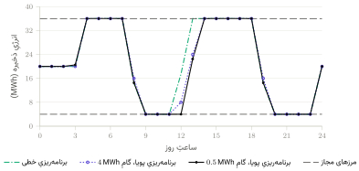
تفسیر. با شبکهٔ درشتِ ۴ مگاواتساعتی درآمد 1568.6 است و با ریز شدنِ شبکه به 1583.8 میرسد، فقط 0.6 واحد کمتر از پاسخِ پیوستهٔ برنامهریزیِ خطی: همگرایی با گسستهسازی، درست مثلِ بخش 3.5.4. پاسخِ برنامهریزیِ پویا همیشه کمتر یا مساوی است، چون فقط بخشی از انتخابها را میبیند. در شکل 3.40 دو روش در ساعتهای ۱۱ تا ۱۳ متفاوت شارژ میکنند اما درآمدشان تقریباً برابر است: قیمتهای ساعتهای ۱۱ تا ۱۳ (۳۰، ۲۹، ۳۰) تقریباً یکساناند و برنامهٔ بهینه یکتا نیست. این نکته برای بهرهبردار مهم است: میانِ برنامههای همارزش میتوان آن را برگزید که مثلاً تعدادِ چرخهها یا تغییرِ توان را کمتر کند (فصلهای ۱۹ و ۲۰). خطِ آخرِ خروجی نفرینِ ابعاد را نشان میدهد: دو باتری روی همان شبکه حدودِ \(2.8 \times 10^{8}\) گذار در هر ساعت دارند.
3.5.14 بهینهسازیِ چندهدفه و جبهٔ پارتو: اندازهٔ اقتصادیِ کابل
دو هدفِ متضاد. کابلِ ضخیمتر گرانتر است اما تلفاتِ کمتری دارد. هیچ گزینهای در هر دو هدف بهترین نیست. گزینهای مغلوب است اگر گزینهٔ دیگری در هر دو هدف دستکم به همان خوبی و در یکی بهتر باشد. گزینههای نامغلوب جبهٔ پارتو را میسازند و انتخاب از میانِ آنها به وزنِ هدفها بستگی دارد. اگر هر دو هدف را بتوان به پول تبدیل کرد (تلفات را با ارزشِ فعلیِ انرژیِ ازدسترفته، بخش 3.2.5)، مسئله تکهدفه میشود.
قانونِ کلوین. اگر هزینهٔ سرمایهایِ کابل بهطورِ خطی با سطحِ مقطع بالا رود، \(L(c_0 + c_1 A)\)، و ارزشِ فعلیِ تلفات با \(1/A\) پایین بیاید، \(k/A\)، مجموع کمینهای دارد که با صفر کردنِ مشتق (بخش 3.2.9) به دست میآید:
\[ \begin{aligned} \frac{\mathrm{d}}{\mathrm{d}A}\left(L c_0 + L c_1 A + \frac{k}{A}\right) &= L c_1 - \frac{k}{A^{2}} = 0 \\ A^{*} &= \sqrt{\frac{k}{L c_1}} \end{aligned} \tag{3.56}\]
در نقطهٔ بهینه، هزینهٔ سرمایهایِ وابسته به سطحِ مقطع با ارزشِ فعلیِ تلفات برابر است. این قاعدهٔ قدیمی (لُرد کلوین، ۱۸۸۱) هنوز پایهٔ «اندازهٔ اقتصادیِ هادی» است.
مثال 3.76 (کابلِ فیدر: ارزان امروز یا ارزان در طولِ عمر؟) پرسش. فیدرِ 33 kVِ مثال 3.78 (پنج کیلومتر، نیمی از تولیدِ نیروگاه، سالِ کاملِ بستهٔ داده، S0) را در نظر بگیرید. مقاومت را به نسبتِ وارونِ سطحِ مقطع از A-032 مقیاس کنید. هزینهٔ کابل را برای پنج کیلومتر \(5 \times (60\,000 + 300 A)\) واحد بگیرید (\(A\) بر حسبِ میلیمترِ مربع)، ارزشِ انرژیِ تلفشده را ۴۰ واحد بر مگاواتساعت و افقِ ۲۵ ساله با نرخِ ۷ درصد (همه ساختگی، A-038). کدام اندازهٔ استاندارد کمترین هزینهٔ کل را دارد؟ دو کابلِ موازیِ ۱۵۰ میلیمتر مربعی چه وضعی دارند؟
پاسخ.
one 33 kV feeder, 5 km, half the plant output, pf 0.95, data pack 1.0.0, S0
R = 0.125 ohm/km at 240 mm2 (A-032), scaled as 1/area (assumption)
cable cost 5 km x (60 000 + 300 A) units; losses valued 40 units/MWh;
25 years at 7 % (annuity factor 11.654); all money fictional (A-038)
area capex loss loss PV of losses total
(mm2) (k) (MWh/y) (%) (k) (k)
240 660 2268 1.57 1057 1717
300 750 1814 1.25 846 1596
400 900 1361 0.94 634 1534
500 1050 1089 0.75 507 1557
630 1245 864 0.60 403 1648
2 x 150 mm2 in parallel: capex 1050 k, losses as 300 mm2 -> dominated
Kelvin optimum (d total / dA = 0): A* = sqrt(k / (L c1)) = 411 mm2
cheapest standard size: 400 mm2; thermal minimum stays 240 mm2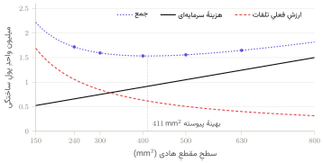
تفسیر. کوچکترین کابلی که از نظرِ گرمایی کافی است (240 mm²، فرضِ فصل) در طولِ عمر گرانترین گزینهٔ جدول است و از 400 mm² حدودِ ۱۲ درصد گرانتر است؛ بهینهٔ پیوسته 411 mm² است. منحنیِ جمع در شکل 3.41 نزدیکِ بهینه تخت است: 400 و 500 فقط حدودِ یک و نیم درصد فاصله دارند، پس عواملِ دیگر (افتِ ولتاژ، تحملِ اتصالِ کوتاه، وزن و قطرِ قرقره، فصلِ ۲۴) میتوانند انتخاب را تعیین کنند بیآنکه هزینهای جدی تحمیل شود. دو کابلِ موازیِ ۱۵۰ همان تلفاتِ ۳۰۰ را با هزینهٔ بیشتر دارند: مغلوباند و از جبهٔ پارتو بیرون میروند. محدودیتها: مقاومتِ واقعی دقیقاً با \(1/A\) تغییر نمیکند، قیمتِ واقعیِ کابل پلهای است، و ارزشِ تلفات به قیمتِ فروشِ انرژی و سقفِ صادرات بستگی دارد (فصلهای ۲۱ و ۲۴).
- اصلِ بهینگیِ بلمن را با مثالِ مسیرِ کوتاهترین راه میانِ دو شهر توضیح دهید.
- چرا پاسخِ برنامهریزیِ پویا روی شبکهٔ گسسته نمیتواند از پاسخِ پیوسته بیشتر باشد؟
- با ۶۵ وضعیت و ۲۴ ساعت، حلقهٔ بلمن چند مقایسه انجام میدهد؟
- چرا برنامهٔ بهینهٔ مثال 3.75 یکتا نیست؟
- گزینهٔ مغلوب را تعریف کنید و یک مثالِ غیرِکابلی از نیروگاه بزنید.
- اگر ارزشِ انرژیِ تلفشده دو برابر شود، \(A^{*}\) چند برابر میشود؟
- چرا تخت بودنِ منحنیِ هزینه در نزدیکیِ بهینه خبرِ خوبی برای طراح است؟
3.6 نیروگاهِ P: سه مثالِ یکپارچه
مثال 3.77 (مقدماتی: انرژیِ بادی از چهار راهِ ریاضی) پرسش. انرژیِ سالانهٔ مزرعهٔ بادیِ نیروگاهِ P (بستهٔ داده 1.0.0، S0) را از چهار راه حساب کنید و بگویید هر راه کدام ابزارِ این فصل است: (۱) تابعی از میانگین، (۲) امیدِ ریاضی با توزیعِ وایبول، (۳) جمعِ بستهای (انتگرالِ عددی روی بستهها)، (۴) جمعِ سریزمانی.
پاسخ.
annual energy of the wind farm (data pack 1.0.0, S0), four mathematical
routes:
1 mean speed into the power curve 162.6 GWh (function of a
mean)
2 Weibull k = 2.114, c = 8.017: 8760 x integral 191.4 GWh (expectation)
3 binned frequency x power at bin centres 192.7 GWh (quadrature on bins)
4 hour by hour (time series) 192.5 GWh (sum = integral)
routes 2-4 agree within 0.7 %; route 1 is -16 % (mean of a nonlinear
function)تفسیر. سه راهِ آخر در ۰٫۷ درصد با هم میخوانند و راهِ اول ۱۶ درصد کم میدهد. این جدول خلاصهٔ چند درسِ فصل است: تابعِ میانگین با میانگینِ تابع برابر نیست (بخش 3.2.11)؛ انتگرال با توزیع و جمع با سریزمانی دو روی یک سکهاند (معادلهٔ 3.40)؛ و قاعدهٔ بستهای همان انتگرالِ عددی با گامِ پهنای بسته است (بخش 3.5.4). وقتی چند راهِ مستقل یک جواب میدهند، به جواب اعتماد بیشتری داریم: این همان «وارسیِ مستقل»ِ فصلِ ۲ است، این بار با ریاضیاتِ متفاوت.
مثال 3.78 (میانی: یک فیدرِ 33 kV در طولِ یک روز) پرسش. فرض کنید شبکهٔ جمعآوری دو فیدر دارد و هر کدام نیمی از تولیدِ نیروگاهِ P را در روزِ تابستانیِ بستهٔ داده میبرد (فرضی). با فازور، جریان و تلفاتِ هر ساعت را حساب کنید؛ تلفاتِ روز را با انتگرال (جمعِ ساعتی) و با «جریانِ میانگین» مقایسه کنید؛ و دمای کابل را با معادلهٔ دیفرانسیلِ مرتبهٔ اول برای کابلِ در هوا (ثابتِ زمانیِ نیم ساعت) و کابلِ دفنشده (سه ساعت) شبیهسازی کنید (A-032 و A-033).
پاسخ.
one of two 33 kV collector feeders (half the plant output each, assumed), 5
km,
Z = 0.625 + j0.550 ohm per phase (A-032), summer subset day, pf 0.95
peak hour 12: 31.1 MW, I = 572 A, loss 614 kW
daily loss = sum of 3 I^2 R x 1 h = 6.64 MWh (1.55 % of 428 MWh)
with the daily MEAN current instead: 4.86 MWh (too low: mean of a square)
temperature rise, thermal ODE with 40 K at 552.5 A (A-033), RK4, dt 60 s:
hour-by-hour steady state: maximum 42.9 K
tau 0.5 h (in air): maximum 42.7 K at 13.0 h
tau 3 h (buried): maximum 37.5 K at 14.0 h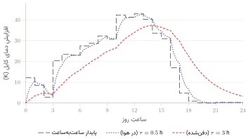
تفسیر. سه ابزار به یک تصمیم کمک میکنند. (۱) فازور و انتگرال: تلفاتِ روز 6.64 MWh است؛ جریانِ میانگین ۲۷ درصد کم میدهد (میانگینِ مجذور در برابرِ مجذورِ میانگین). (۲) معادلهٔ دیفرانسیل: کابلِ در هوا با ثابتِ زمانیِ نیم ساعت تقریباً حالتِ پایدارِ هر ساعت را دنبال میکند و در اوج به 42.7 K میرسد؛ کابلِ دفنشده با ثابتِ زمانیِ سه ساعت اوجِ کوتاهِ ظهر را «صاف» میکند و فقط 37.5 K گرم میشود (شکل 3.42). (۳) پیامدِ طراحی: ظرفیتِ پویای کابلهای دفنشده برای بارهای کوتاهمدت بیشتر از ظرفیتِ پایدارشان است و این دلیلِ وجودِ «ظرفیتِ چرخهای» در روشهای محاسبهٔ کابل است (فصلِ ۲۴). محدودیت: همهٔ عددهای کابل آموزشیاند و مدلِ دمایی یکحالته است؛ ظرفیتِ رسمی را استانداردِ حاکم و روشِ نصب تعیین میکنند.
مثال 3.79 (یکپارچه: درآمدِ باتری با قیمتِ نامطمئن) پرسش. درآمدِ روزانهٔ باتری با برنامهریزیِ خطی (مثال 3.66) برای یک نمایهٔ قیمتِ ثابت حساب شد. اما قیمتِ فردا نامعلوم است. ۳۰۰ روزِ تصادفی بسازید که سطحِ قیمتِ روز با توزیعِ لگنرمال (انحرافِ ۱۵ درصد) و قیمتِ هر ساعت با نوسانِ ۱۰ درصدی تغییر کند (قیمتها ساختگی، A-035)، برای هر روز برنامهٔ خطی را دوباره حل کنید و توزیعِ درآمد را خلاصه کنید.
پاسخ. این مونتکارلو با بهینهسازی در درون است: هر نمونه یک مسئلهٔ بهینهسازیِ کامل:
daily arbitrage of the 20 MW / 4..36 MWh battery (fictional prices, A-035)
base price profile: revenue 1584 units (perfect foresight)
300 random days: level x exp(N(0, 0.15)), each hour x exp(N(0, 0.10))
revenue: mean 1821, std 352, P10 1426, P90 2270 units
mean of the random-day revenues is +15 % from the base-day revenue:
noisier prices give a battery more to exploit (convexity of the optimum)
every value assumes perfect foresight: an UPPER bound, not a forecastتفسیر. دو نکته. (۱) میانگینِ درآمدِ روزهای تصادفی ۱۵ درصد بیشتر از درآمدِ «روزِ میانگین» است: درآمدِ بهینه تابعی محدب از قیمتهاست و نوسانِ بیشتر به باتری فرصتِ بیشتر میدهد. پس ارزیابیِ باتری با «نمایهٔ قیمتِ میانگین» آن را کم برآورد میکند؛ همان درسِ «میانگینِ تابع» با علامتِ دیگر. (۲) همهٔ عددها با پیشبینیِ کامل حساب شدهاند؛ باتریِ واقعی قیمتِ فردا را نمیداند و درآمدش کمتر است. P10 و P90 اینجا پراکندگیِ روزبهروز را نشان میدهند، نه عدمِ قطعیتِ مدل. فصلهای ۱۹ تا ۲۱ این مدل را با پیشبینی، فرسودگی و قواعدِ بازار کامل میکنند؛ و اینکه شارژ از شبکه اصلاً مجاز باشد را قراردادِ اتصال و مقرراتِ هر کشور تعیین میکنند (U-017).
3.7 گردشِ کارِ انتخاب و وارسیِ یک مدلِ ریاضی
«طراحی» در این فصل انتخاب و وارسیِ مدل است. گامها:
- پرسش را دقیق کنید: کدام کمیت، با چه دقتی، برای کدام تصمیم؟
- سادهترین مدلی را بنویسید که پرسش را پاسخ دهد: متغیرها، یکاها، معادلهها؛ هر فرض با منبع.
- ابعاد را وارسی کنید (فصلِ ۲) و حالتهای حدی را بسنجید.
- روشِ حل را انتخاب کنید: تحلیلی اگر ممکن است؛ عددی با روشی که مرتبهٔ دقتش معلوم است.
- روشِ عددی را روی مسئلهای با پاسخِ دقیق بیازمایید و مرتبهٔ همگرایی را اندازه بگیرید (بخش 3.8).
- مدل را با داده بسنجید: باقیماندهها، الگوهایشان، و دامنهٔ ورودیهایی که آزموده شده است.
- حساسیت و عدمِ قطعیت را برآورد کنید: نمودارِ گردباد، مونتکارلو؛ همبستگیِ ورودیها را فراموش نکنید.
- کارتِ مدل را بنویسید و مدل را در دفترِ مدلها ثبت کنید (جدول 3.4).
- برای بازبینی بفرستید (برگهٔ محاسبهٔ فصلِ ۲) و هر بار که مدل بیرون از دامنهاش بهکار میرود، دوباره بسنجید.
3.8 آزمایشگاهِ پایتون
3.8.1 آزمایشگاهِ ۱: مرتبهٔ دقت را اندازه بگیرید
پرونده: companion/ch03/lab_convergence.py
هدف. مرتبهٔ دقتِ یک روشِ عددی را اندازه بگیریم، بهجای اینکه آن را باور کنیم. این برنامه معادلهٔ گرم شدنِ کابل را، که پاسخِ دقیقش معلوم است، با اویلر و رونگه-کوتا و پنج گامِ زمانیِ متوالی (هر کدام نصفِ قبلی) حل میکند و از نسبتِ خطاها مرتبهٔ مشاهدهشده را حساب میکند:
\[ p = \frac{\log(e_h/e_{h/2})}{\log 2} \]
def observed_order(errors: list[float], ratio: float = 2.0) -> list[float]:
"""Order estimates from errors at steps h, h/ratio, h/ratio^2, ..."""
return [math.log(e1 / e2) / math.log(ratio)
for e1, e2 in zip(errors, errors[1:])]
def study(method, steps):
errors = []
for dt in steps:
_, y = method(rhs, 0.0, 0.0, T_END, dt)
errors.append(abs(y[-1] - exact(T_END)))
return errors dt (s) Euler error RK4 error
1200 3.9319e+00 3.1254e-02
600 1.9018e+00 1.4723e-03
300 9.2715e-01 8.0012e-05
150 4.5737e-01 4.6643e-06
75 2.2712e-01 2.8155e-07
observed order, Euler: 1.05, 1.04, 1.02, 1.01
observed order, RK4: 4.41, 4.20, 4.10, 4.05
expected: 1 for Euler, 4 for RK4; the work per step of RK4 is 4 times
Euler's, but for 1e-6 K accuracy it needs far fewer steps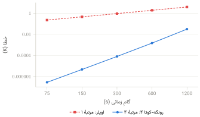
تفسیر. مرتبههای مشاهدهشده به ۱ و ۴ همگرا میشوند؛ در گامهای بزرگ کمی بیشترند، چون جملههای بالاترِ خطا هنوز کوچک نشدهاند. این آزمون یکی از مهمترین آزمونهای هر برنامهٔ شبیهسازی است: اگر مرتبهٔ مشاهدهشده با مرتبهٔ نظری نخواند، یا برنامه خطا دارد یا پاسخِ «دقیق» درست نیست.
تمرینهای آزمایشگاه. (۱) همین مطالعه را برای قاعدههای ذوزنقهای و سیمپسون روی تابعِ \(\sin\) تکرار کنید. (۲) گام را آنقدر کوچک کنید که خطای رونگه-کوتا به \(10^{-14}\) برسد؛ چه میشود و چرا (خطای گرد کردن)؟ (۳) آزمونی در companion/tests/test_numerics.py بیفزایید که اگر مرتبهٔ مشاهدهشدهٔ رونگه-کوتا کمتر از \(3.8\) شد، شکست بخورد.
3.8.2 آزمایشگاهِ ۲: چه مدت باید اندازه گرفت؟
پرونده: companion/ch03/lab_record_length.py
پرسشِ مهندسی. پیش از سرمایهگذاری، دکلِ اندازهگیریِ باد نصب میشود (فصلِ ۱۳). اما هر ماهِ اندازهگیری هزینه و تأخیر دارد. چند روز داده لازم است تا انرژیِ سالانه با خطای نمونهگیریِ قابلِقبول برآورد شود؟ این برنامه هزاران «کمپینِ اندازهگیریِ» ساختگی میسازد: در هر کمپین، \(N\) روزِ کامل بهتصادف (با جایگذاری) از سالِ بستهٔ داده برداشته و انرژیِ سالانه از میانگینِ آنها برآورد میشود. برداشتنِ روزِ کامل (نه ساعتِ تک) خودهمبستگیِ درونِ روز را نگه میدارد؛ این روش را بوتاسترپِ بلوکی مینامند (بخش 3.4.3).
def campaign_estimates(daily_energy, n_days, n_campaigns, rng):
"""Annual energy from n_days days drawn with replacement."""
picks = rng.integers(0, daily_energy.size, size=(n_campaigns, n_days))
return daily_energy[picks].mean(axis=1) * 365.0annual wind energy of the data-pack year: 192.5 GWh
days std (GWh) std (%) std x sqrt(days)
30 25.83 13.42 141.5
60 18.24 9.47 141.3
90 14.70 7.63 139.4
180 10.50 5.45 140.8
365 7.57 3.93 144.6
730 5.28 2.74 142.7
the last column is nearly constant: the spread falls as 1/sqrt(days)
a one-month campaign misses the seasons; resampled days pretend the season
of each day is random, so even these numbers are optimistic for 30 days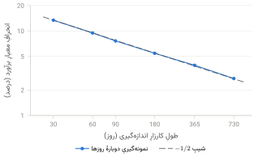
تفسیر. ستونِ آخر تقریباً ثابت (140 تا 145) است، پس پراکندگی با \(1/\sqrt{N}\) کم میشود: برای نصف کردنِ خطا باید چهار برابر اندازه گرفت. یک ماه داده خطای حدودِ 13 % و یک سال حدودِ 4 % میدهد. اما سه هشدار: (۱) این عددها خوشبینانهاند، چون روزها از سراسرِ سال برداشته شدهاند؛ کمپینِ واقعیِ سیروزه پشتِ هم است و فقط یک فصل را میبیند، پس سوگیریِ فصلی هم دارد. (۲) فقط نمونهگیری درونِ یک سال دیده شده؛ تغییرِ سال به سال (بعضی سالها پربادترند) جدا اضافه میشود و با دادهٔ بلندمدت و روشهای همبستگیِ بلندمدت کاهش مییابد (فصلِ ۱۶). (۳) خطای دستگاههای اندازهگیری (فصلِ ۲) جداست و با زمان کم نمیشود. به همین دلیل، کمپینِ دستکم یکساله رویهٔ رایج است.
تمرینهای آزمایشگاه. (۱) بهجای روزهای تصادفی، \(N\) روزِ پیوسته با شروعِ تصادفی بردارید و پراکندگی را مقایسه کنید؛ چرا بیشتر است؟ (۲) همین مطالعه را برای انرژیِ خورشیدی تکرار کنید؛ کدام منبع به اندازهگیریِ کوتاهتری نیاز دارد و چرا؟ (۳) بذرِ مولد را عوض کنید؛ کدام رقمهای جدول عوض میشوند؟ (۴) با \(N = 365\) و فرضِ خطای سال به سالِ 6 % (فرضی، مستقل)، عدمِ قطعیتِ ترکیبی را با جمعِ ریشهٔ مربعی (فصلِ ۲) بیابید.
3.8.3 آزمایشگاهِ ۳: طیفِ یک جریانِ نمونهبرداریشده
پرونده: companion/ch03/lab_spectrum.py
پرسشِ مهندسی. کنتورِ کیفیتِ توان در پستِ نیروگاه (فصلهای ۲۷ و ۳۷) هارمونیکهای جریان را از نمونههای پنجرهای محدود حساب میکند. اگر بسامدِ شبکه دقیقاً 50 Hz نباشد (مثلاً 49.8 Hz، فرضی) و پنجره ثابت بماند، چه خطایی رخ میدهد؟ این آزمایشگاه جریانِ ساختگیِ مثال 3.36 را با بسامدِ نمونهبرداریِ 10 kHz به سه روش تحلیل میکند: (الف) پنجرهٔ ثابتِ 200 ms (ده دوره در 50 Hz) با شکلِ مستطیلی؛ (ب) همان پنجره با پنجرهٔ هَن که لبههای پنجره را نرم به صفر میرساند تا نشت کم شود؛ (پ) پنجرهای که دقیقاً ده دورهٔ بسامدِ واقعی را بپوشاند (همگامسازی).
def harmonic_peaks(x, fs, f1, orders, window="rect"):
"""Peak amplitude near each harmonic h * f1 from the FFT of x."""
n = len(x)
w = np.hanning(n) if window == "hann" else np.ones(n)
spec = np.abs(np.fft.rfft(x * w)) * 2 / w.sum() # amplitude scale
freqs = np.fft.rfftfreq(n, 1 / fs)
out = []
for h in orders:
k = int(np.argmin(np.abs(freqs - h * f1))) # nearest bin
out.append(spec[k - 1:k + 2].max()) # largest of 3 bins
return np.array(out)true amplitudes (pu): 1.000, 0.040, 0.030; THD 5.00 %; grid at 49.8 Hz
window A1 A5 A7 THD (%)
200 ms, rectangular 0.999 0.0391 0.0260 4.70
200 ms, Hann 0.999 0.0390 0.0285 4.83
2008 samples = 10 periods 1.000 0.0400 0.0300 5.00
the synchronised window recovers the amplitudes; a fixed 200 ms window
leaks, and the Hann shape reduces the error at the cost of resolutionتفسیر. با پنجرهٔ ثابت، دامنهٔ هارمونیکِ هفتم 13 % کمبرآورد میشود، چون این هارمونیک (در 348.6 Hz) از مرکزِ سطلِ 350 Hz دورتر است؛ پنجرهٔ هَن خطا را به حدودِ 5 % میرساند. پنجرهٔ همگام همهٔ دامنهها را دقیق بازمیسازد. به همین دلیل روشهای استانداردِ اندازهگیریِ هارمونیک پنجره را با بسامدِ شبکه همگام میکنند (فصلِ ۲۷). تقسیم بر جمعِ وزنهای پنجره در برنامه «بهرهٔ همدوس»ِ پنجره را جبران میکند تا دامنهها با هر شکلِ پنجره قابلِ مقایسه باشند.
تمرینهای آزمایشگاه. (۱) بسامدِ شبکه را از 49.5 تا 50.5 Hz تغییر دهید و خطای هارمونیکِ هفتم را برای هر سه روش رسم کنید. (۲) نویزِ تصادفی با انحرافِ معیارِ 0.01 پریونیت بیفزایید؛ کدام روش حساستر است؟ (۳) یک هارمونیکِ میانی (175 Hz، دامنهٔ 0.01) بیفزایید؛ آیا روشِ «بزرگترین از سه سطل» آن را با هارمونیکِ چهارم اشتباه میگیرد؟
3.9 ساخت و تولیدِ صنعتی در این فصل
این فصل محصولِ فیزیکی ندارد و ساخت در آن کاربرد ندارد؛ ساختِ «نرمافزارِ مهندسی» (بستهبندی، آزمون، انتشار) موضوعِ فصلِ ۵ است. اما ریاضیاتِ این فصل ستونِ کنترلِ کیفیتِ صنعتی است و فصلهای ۴۰ تا ۴۸ به آن تکیه میکنند: آمارِ توصیفی و توزیعها پایهٔ نمودارهای کنترلِ فرایند و توانِ فرایند (فصلهای ۴ و ۴۱)؛ رگرسیون پایهٔ کالیبراسیونِ ایستگاههای آزمون؛ مونتکارلو پایهٔ انباشتِ رواداری در مونتاژ (فصلِ ۲)؛ برنامهریزیِ خطی پایهٔ برنامهریزیِ تولید و تدارکات (فصلهای ۳۸ و ۳۹)؛ و معادلهٔ دیفرانسیل پایهٔ مدلهای پخت و عملیاتِ حرارتی (فصلِ ۴).
3.10 جعبهٔ استاندارد و انطباق
ریاضیات استانداردِ «طراحی» ندارد؛ آنچه استاندارد میشود نمادهای ریاضی و روشهای ارزیابیِ داده است. سندهای زیر در تاریخِ 2026-11-14 از نظرِ عنوان و ویرایش وارسی و در دفترِ استانداردها ثبت شدهاند؛ محتوای بندها نقل نمیشود و پذیرشِ کشوریشان وارسی نشده است.
- ISO 80000-2:2019، کمیتها و یکاها، بخشِ ۲: ریاضیات: نمادها و معناهای ریاضی که این کتاب از آنها پیروی میکند (مثلاً \(\mathrm{d}\) راست برای مشتق، \(\mathrm{e}\) و \(\mathrm{j}\)).
- JCGM 100:2008 و JCGM 101:2008 (بخش 2.10): انتشارِ عدمِ قطعیت به روشِ مرتبهٔ اول و مونتکارلو، که بخش 3.4.6 بهکار برد.
مدلهای ریاضیِ بهکاررفته در تصمیمهای پروژه را رویهٔ مدیریتِ مدلِ مالک و الزاماتِ وامدهنده کنترل میکنند (کارتِ مدل، وارسیِ مستقل)، نه یک استانداردِ عمومی؛ کتاب این را با دفترِ مدلها (جدول 3.4) نشان میدهد.
3.11 تحویلدادنیِ نیروگاهِ P
- دفترِ مدلهای نیروگاهِ P، PLP-GEN-REG-0001، بازنگریِ A (جدول 3.4): هر مدلی که تا اینجا در پرونده بهکار رفته، با دامنهٔ اعتبار، وارسی و وضعیت؛ و کارتِ کاملِ مدلِ غربالگریِ بادی (جدول 3.3).
- پارامترهای وایبولِ دادهٔ ساختگی: \(k = 2.11\) و \(c = 8.02\ \text{m/s}\) در ارتفاعِ توپی، با هشدارِ ساختگی بودن.
- گزارشِ وارسیِ روشهای عددیِ کتابخانهٔ همراه: آزمونهای واحدِ ماژولهای عددی، آماری، فازوری، خورشیدی، سیگنال، ارزشِ زمانیِ پول و برنامهریزیِ پویا، و مرتبههای اندازهگیریشده در بخش 3.8.
- فرضها: A-031 هندسهٔ میز (طولِ شیبِ 4.6 m، شیبِ 25°، رو به جنوب)؛ A-032 امپدانسِ کابلِ 33 kV (\(0.125 + j0.110\ \Omega/\text{km}\))؛ A-033 مدلِ دمایی کابل (ثابتِ زمانیِ نیم ساعت، 40 K در 552.5 A)؛ A-034 پارامترهای دمایی ترانسفورماتور (مثال 3.26)؛ A-035 نمایهٔ قیمتِ ساعتیِ ساختگی برای مثالهای بهینهسازی؛ A-036 سی بیشینهٔ سالانهٔ ساختگیِ باد (گامبل با \(\mu = 26\) و \(\beta = 2.5\ \text{m/s}\)، بذرِ ثابت)؛ A-037 هزینههای ساختگیِ نیروگاه (سرمایهای ۱۰۰ میلیون واحد، بهرهبرداری 2.75 میلیون واحد در سال، نرخِ ۷ درصد، ۲۵ سال)؛ A-038 مدلِ هزینهٔ کابل و ارزشِ تلفات (۴۰ واحد بر مگاواتساعت)؛ A-039 MTBF و MTTRِ توربین (2000 و 60 h)؛ A-040 هارمونیکهای جریانِ اینورتر (پنجم 0.04 و هفتم 0.03 پریونیت)؛ A-041 مختصاتِ ساختگیِ سه توربین، دکل و پست نسبت به نصفالنهارِ مرجعِ \(\lambda_0\) (نیروگاه جای واقعی ندارد)؛ A-042 نرخهای پایشِ وضعیتِ جعبهدنده (پیشینِ ۲ درصد، حساسیتِ ۹۰ درصد، هشدارِ کاذبِ ۵ درصد)؛ A-043 ضریبِ پخشِ خاک (\(0.5 \times 10^{-6}\ \text{m}^2/\text{s}\)) و عمقِ کابلِ 0.8 m؛ A-044 دسترسپذیریِ کلید، ترانسفورماتور و خطِ صادرات (0.999، 0.995، 0.997)؛ A-045 چهار عاملِ نامطمئنِ مدلِ سادهٔ انرژی (۳، ۲، ۴ و ۲ درصد). همه فرضیِ آموزشی.
- مجهولها: U-016 هندسهٔ واقعیِ میز و فاصلهٔ ردیفها (فصلهای ۱۰ و ۱۴)؛ U-017 نمایههای قیمت و اینکه خرید و فروشِ انرژیِ باتری با شبکه مجاز است یا نه (فصلهای ۲۱ و ۵۵ تا ۵۷).
- تصمیم D-007: «هر مدلی که در پروندهٔ نیروگاهِ P بهکار میرود کارتِ مدل دارد و در PLP-GEN-REG-0001 ثبت میشود؛ مدلِ بیکارت در هیچ برگهٔ محاسبهٔ تأییدشدهای بهکار نمیرود.»
| مدل | فصل | دامنهٔ اعتبار | وارسی | وضعیت |
|---|---|---|---|---|
| غربالگریِ خورشیدی | ۱ | تابشِ افقی، گامِ ساعتی | روشِ دستیِ سالانه (فصلِ ۲) | غربالگری |
| غربالگریِ بادی | ۱ | 0 … 30 m/s، چگالیِ 1.225 kg/m³ | چهار راه (مثال 3.77) | غربالگری؛ L-2 |
| صادرات و بُرش | ۱ | گامِ ساعتی | آزمونهای واحد | غربالگری؛ زیرساعتی کمبرآورد |
| انرژیِ باتری | ۳ | توانِ ثابت در هر گام | پایستگیِ انرژی | آموزشی |
| فیدرِ DC | ۶ | جریانِ ثابت | آزمونهای واحد، دستی | آموزشی |
| دمای کابل | ۳ | یکحالته | پاسخِ تحلیلی، مرتبهٔ همگرایی | آموزشی |
| جای خورشید | ۳ | دقتِ حدودِ یک درجه | اعتدال، طولِ روز، دو روش | غربالگری |
| وایبول | ۳ | توزیعِ تکقلهای | سه روشِ برازش | غربالگری |
| پخشِ توانِ DC | ۳ | واکنشیِ چیره، زاویهٔ کوچک | پایستگی | آموزشی |
| برنامهٔ خطیِ باتری | ۳ | پیشبینیِ کامل | پایستگی، بازدهِ رفتوبرگشت | آموزشی؛ کرانِ بالا |
| برنامهریزیِ پویای باتری | ۳ | شبکهٔ گسستهٔ انرژی | همگرایی به برنامهٔ خطی | آموزشی |
| هزینهٔ ترازشده | ۳ | بیمالیات و بیوام | آزمونِ دستی، نرخِ صفر | غربالگری |
| اندازهٔ اقتصادیِ کابل | ۳ | مقاومت با \(1/A\) | قانونِ کلوین، جدول | آموزشی |
| بادِ حدیِ گامبل | ۳ | بیشینههای سالانهٔ مستقل | دو روشِ برازش، بوتاسترپ | آموزشی |
3.12 جمعبندی
- مقیاس: اگر \(y \propto x^{n}\)، نسبتِ \(y\)ها توانِ \(n\)امِ نسبتِ \(x\)هاست؛ لگاریتم ضرب را جمع و رابطهٔ توانی را خطِ راست میکند. سیزده درصد قطرِ بیشتر، ۲۸ درصد توانِ بیشتر.
- مثلثات و بردار: ارتفاعِ ظهرِ خورشید \(90^\circ - \phi + \delta\)؛ در عرضِ ۳۴ درجه میانِ 32.55° و 79.45°. سایهٔ میز \(h/\tan\alpha_\text{s}\)؛ فاصلهٔ ردیفِ آموزشیِ 7.2 m. زاویهٔ تابش ضربِ داخلیِ دو بردارِ یکه است.
- تابع: دامنه، شکل و منبع؛ درونیابی میانِ نقطههای نزدیک امن است، برونیابی نه (توربین در 25 m/s خاموش میشود).
- مشتق = حساسیت: حساسیتِ نسبیِ توانِ توربین به تندی در 8 m/s حدودِ ۳ است؛ مدلِ «مکعبیِ ساده» با جدول نخواند و رد شد. روشِ عددیِ دقیق مدلِ نادرست را درست نمیکند (نقطهٔ بیشینهٔ توان).
- بهینه با قید: شرطِ لاگرانژ؛ تقسیمِ بهینهٔ مس یعنی چگالیِ جریانِ برابر.
- انتگرال = انباشت: انرژی، گرما، تلفات؛ میانگینِ تابع با تابعِ میانگین برابر نیست (گرمای جریانِ افزایشی، ۲۵ درصد خطا). انرژیِ نیمسینوسی \(2P_\text{max}L/\pi\).
- ماتریس: \(\mathbf{G}\mathbf{v} = \mathbf{i}\) با حذفِ گاوسی؛ پخشِ توانِ DC \(\mathbf{P} = \mathbf{B}\boldsymbol{\theta}\) و توانی که مسیرِ «نخواسته» را میرود؛ کمترین مربعات با معادلههای نرمال؛ مقدارِ ویژه = زمانِ طبیعی (۴۸ ثانیه و ۲۸ دقیقه برای ترانسفورماتور).
- مختلط: \(\mathbf{S} = \mathbf{V}\mathbf{I}^{*}\)؛ افتِ ولتاژ تقریباً \((RP + XQ)/V\)، پس توانِ راکتیو ولتاژ را جابهجا میکند؛ مؤلفههای متقارن نامتعادلی را میسنجند.
- معادلهٔ دیفرانسیل: \(\tau\dot y = y_\infty - y\)؛ ۶۳ درصد در \(\tau\)؛ متغیرِ حالت (انرژیِ باتری)؛ پایداری با علامتِ مقدارهای ویژه؛ اویلر مرتبهٔ ۱ و با گامِ بیش از \(2\tau\) ناپایدار، رونگه-کوتا مرتبهٔ ۴.
- داده: میانه کمتر از میانگینِ باد؛ وایبول با \(k \approx 2.1\) و \(c \approx 8.0\) داده را خوب توصیف میکند و انرژی را در نیم درصد میدهد؛ خودهمبستگیِ \(0.96\) هشتهزار ساعت را به حدودِ ۱۸۴ مشاهدهٔ مستقل میکاهد؛ همبستگیِ باد و آفتاب منفی و وابسته به مقیاسِ زمانی؛ پرت یعنی «بررسی کن» و آزمونهای فیزیکی خطاهایی را میبینند که آمار نمیبیند؛ همبستگیِ مثبتِ منابعِ عدمِ قطعیت آن را بیشتر میکند.
- روشهای عددی: سه خطا (مدل، گسستهسازی، گرد کردن)؛ حذفِ فاجعهبار و عددِ وضعیت؛ دوبخشی امن و کند، نیوتن تند و حساس؛ چندجملهایِ درجهٔ بالا نوسان میکند؛ ذوزنقهای مرتبهٔ ۲ و سیمپسون مرتبهٔ ۴؛ دادهٔ ساعتی بُرش را کم میبیند.
- بهینهسازی و حساسیت: جوابِ برنامهٔ خطی روی رأس است و پلهای جابهجا میشود؛ باتریِ بهینه «همه یا هیچ» است؛ نمودارِ گردباد اولویتِ داده را نشان میدهد (اول باد).
- انضباطِ مدل: هر مدل یک کارت دارد و در دفترِ مدلها (PLP-GEN-REG-0001) ثبت میشود.
- جبر، رشد و عددِ صحیح: ممیزِ منفی یعنی «از نظرِ فیزیکی ممکن نیست» (بیش از 3.2 MW از رشتهٔ باتری)؛ افتِ ترکیبیِ نیم درصدی پس از ۲۵ سال 88.2 % باقی میگذارد؛ دسیبلها جمع نمیشوند؛ گرد کردنِ عددِ صحیح را با همهٔ قیدها دوباره بسنجید.
- سری و ارزشِ زمانیِ پول: سریِ هندسی پایهٔ ضریبِ ارزشِ فعلیِ اقساط است (11.65 برای ۷ درصد و ۲۵ سال)؛ هزینهٔ ترازشده انرژی را هم تنزیل میکند و نسبتِ بیتنزیل پروژه را حدودِ ۴۰ درصد ارزانتر نشان میدهد.
- مدلهای شبکه: پریونیت مقیاسها را یکی میکند؛ نیوتن-رافسون پخشِ بارِ غیرِخطی را در چند تکرار حل میکند؛ قطرِ \(\mathbf{Z}_\text{bus}\) امپدانسِ تونن و جریانِ خطاست (21.9 kA در باسِ اتصال).
- سیگنالها: هر شکلموجِ دورهای جمعِ هارمونیکهاست؛ جریانِ بلوکیِ ششپالسی 31.1 % اعوجاج دارد؛ نمونهبرداری بدونِ فیلتر هارمونیکِ دروغین میسازد؛ سامانهٔ مرتبهٔ اول فیلترِ پایینگذر است (تندبادِ نیمهرتزی با ۶۵ درصد دامنه).
- آمارِ بیشتر: سهمِ انرژیِ هر جهت مهمتر از سهمِ زمان است؛ نمونههای مستقل ترتیبِ زمانی ندارند؛ مقدارِ ۵۰ساله با احتمالِ حدودِ ۴۰ درصد در عمرِ ۲۵ ساله رخ میدهد؛ خرابی حافظه دارد (زنجیرهٔ مارکوف).
- بهینهسازیِ بیشتر: کاهشِ گرادیان شرطِ پایداری دارد و به مقیاسبندیِ انحنا حساس است؛ برنامهریزیِ پویا با ریز شدنِ شبکه به برنامهریزیِ خطی همگرا میشود؛ قانونِ کلوین اندازهٔ اقتصادیِ کابل را بزرگتر از کمینهٔ گرمایی میدهد (411 mm² در برابرِ 240 mm²).
- اندازهگیری: پراکندگیِ برآورد با \(1/\sqrt{N}\) کم میشود؛ یک سال داده خطای نمونهگیریِ حدودِ ۴ درصد دارد و تغییرِ سال به سال جداست.
منابعِ این فصل. ریاضیاتِ این فصل در هر کتابِ درسیِ حسابان، جبرِ خطی، آمار و روشهای عددیِ دورهٔ کارشناسی آمده است. برای کاربردِ آمار و توزیعِ وایبول در انرژیِ باد (Manwell و همکاران 2009)، برای هندسهٔ خورشید و تابش (Luque و Hegedus 2011)، و برای تحلیلِ عدمِ قطعیت (Taylor 1997) را ببینید. استانداردِ نمادها در بخش 3.10 آمده است.
3.12.1 واژگانِ فصلِ ۳
| فارسی | انگلیسی | یادداشت |
|---|---|---|
| قانونِ مقیاس | scaling law | |
| لگاریتمِ طبیعی | natural logarithm | \(\ln\) |
| میلِ خورشید | solar declination | \(\delta\) |
| زاویهٔ ساعتی | hour angle | \(\omega\) |
| ارتفاعِ خورشید | solar elevation | \(\alpha_\text{s}\) |
| نسبتِ پوششِ زمین | ground coverage ratio | |
| بردار / اسکالر | vector / scalar | |
| ضربِ داخلی / خارجی | dot / cross product | |
| تابعِ تکهایخطی | piecewise-linear function | |
| درونیابی / برونیابی | interpolation / extrapolation | |
| حد / پیوستگی | limit / continuity | |
| مشتق / مشتقِ جزئی | derivative / partial derivative | |
| گرادیان | gradient | |
| حساسیتِ نسبی | relative sensitivity, elasticity | |
| ضریبِ لاگرانژ | Lagrange multiplier | |
| انتگرالِ معین / نامعین | definite / indefinite integral | |
| ماتریس / ترانهاده / وارون | matrix / transpose / inverse | |
| حذفِ گاوسی | Gaussian elimination | |
| محورگیریِ جزئی | partial pivoting | |
| پخشِ توانِ DC | DC power flow | تقریبِ شبکهٔ AC |
| معادلههای نرمال | normal equations | |
| مقدار / بردارِ ویژه | eigenvalue / eigenvector | |
| روشِ توانی | power iteration | |
| عددِ مختلط / فازور | complex number / phasor | |
| امپدانس | impedance | \(\mathbf{Z} = R + jX\) |
| توانِ مختلط | complex power | \(\mathbf{S} = P + jQ\) |
| مؤلفههای متقارن | symmetrical components | |
| تبدیلِ کلارک | Clarke transform | |
| ثابتِ زمانی | time constant | \(\tau\) |
| متغیرِ حالت | state variable | |
| پایداری | stability | |
| سامانهٔ سخت | stiff system | |
| روشِ اویلر / رونگه-کوتا | Euler / Runge–Kutta method | |
| مرتبهٔ دقت | order of accuracy | |
| میانه / چارک | median / quartile | |
| چولگی | skewness | |
| تابعِ چگالیِ احتمال | probability density function | |
| امیدِ ریاضی | expected value | |
| توزیعِ وایبول | Weibull distribution | ضریبِ شکل \(k\)، مقیاس \(c\) |
| درستنمایی بیشینه | maximum likelihood | |
| قضیهٔ حدِ مرکزی | central limit theorem | |
| خودهمبستگی | autocorrelation | |
| اندازهٔ مؤثرِ نمونه | effective sample size | |
| بوتاسترپ | bootstrap | |
| ضریبِ تعیین | coefficient of determination | \(r^{2}\) |
| ضریبِ همبستگی | correlation coefficient | \(r\) |
| دادهٔ پرت | outlier | |
| ماتریسِ کوواریانس / ژاکوبی | covariance matrix / Jacobian | |
| حذفِ فاجعهبار | catastrophic cancellation | |
| عددِ وضعیت / بدحالی | condition number / ill-conditioning | |
| دوبخشی / نیوتن / وتری | bisection / Newton / secant | |
| پدیدهٔ رونگه | Runge phenomenon | |
| قاعدهٔ ذوزنقهای / سیمپسون | trapezoidal / Simpson rule | |
| برونیابیِ ریچاردسون | Richardson extrapolation | |
| خطای گسستهسازی | discretisation error | |
| برنامهریزیِ خطی | linear programming | |
| ناحیهٔ شدنی | feasible region | |
| بهینهٔ محلی / سراسری | local / global optimum | |
| نمودارِ گردباد | tornado chart | |
| کارتِ مدل | model card | |
| ممیز | discriminant | \(b^{2} - 4ac\) |
| سریِ حسابی / هندسی | arithmetic / geometric series | |
| نرخِ تنزیل / ارزشِ فعلی | discount rate / present value | |
| ضریبِ ارزشِ فعلیِ اقساط | annuity factor | |
| ضریبِ بازیافتِ سرمایه | capital recovery factor | |
| هزینهٔ ترازشدهٔ انرژی | levelised cost of energy | LCOE |
| ماتریسِ امپدانسِ باس | bus impedance matrix | \(\mathbf{Z}_\text{bus}\) |
| سریِ فوریه / هارمونیک | Fourier series / harmonic | |
| اعوجاجِ هارمونیکیِ کل | total harmonic distortion | THD |
| تبدیلِ فوریهٔ گسسته / سریع | discrete / fast Fourier transform | DFT, FFT |
| دگرنمایی / نشتِ طیفی | aliasing / spectral leakage | |
| بسامدِ گوشه / فیلترِ پایینگذر | corner frequency / low-pass filter | |
| گلِ باد | wind rose | |
| منحنیِ تداوم / چندک | duration curve / quantile | |
| توزیعِ گامبل / دورهٔ بازگشت | Gumbel distribution / return period | |
| زنجیرهٔ مارکوف / ماتریسِ گذار | Markov chain / transition matrix | |
| کاهشِ گرادیان / ماتریسِ هِسی | gradient descent / Hessian matrix | |
| برنامهریزیِ پویا / اصلِ بلمن | dynamic programming / Bellman principle | |
| نفرینِ ابعاد | curse of dimensionality | |
| جبهٔ پارتو / گزینهٔ مغلوب | Pareto front / dominated option | |
| قانونِ کلوین | Kelvin’s law | اندازهٔ اقتصادیِ هادی |
| فرمولِ هاورسین / دایرهٔ عظیمه | haversine formula / great circle | |
| مبنای مختصات | geodetic datum | |
| احتمالِ شرطی / قضیهٔ بیز | conditional probability / Bayes’ theorem | |
| احتمالِ پیشین / پسین | prior / posterior probability | |
| نرخِ هشدارِ کاذب | false-alarm rate | |
| معادلهٔ دیفرانسیلِ جزئی | partial differential equation | |
| ضریبِ پخشِ گرمایی / عمقِ میرایی | thermal diffusivity / damping depth | |
| همگراییِ مربعی | quadratic convergence | |
| پنجرهٔ هَن / پنجرهٔ همگام | Hann window / synchronised window | |
| نمودارِ بلوکیِ قابلیتِ اطمینان | reliability block diagram | |
| افزونگی / خرابیِ با علتِ مشترک | redundancy / common-cause failure | |
| ابرمکعبِ لاتین / کاهشِ واریانس | Latin hypercube / variance reduction |
3.13 ارزیابیِ پلکانی
3.13.1 پلهٔ ۱: مبانی
تمرین 3.1 \((2.5\times10^{3})^{3}\) و \(\log_{10}(2.5\times10^{3})\) را حساب کنید.
تمرین 3.2 \(45^\circ\) را به رادیان تبدیل کنید و سینوس و کسینوسش را بدهید.
تمرین 3.3 مشتقِ \(\tfrac12\rho A v^{3}\) را نسبت به \(v\)، \(\rho\) و \(A\) بنویسید و یکای هر کدام را بدهید.
تمرین 3.4 \(\int_0^{T} P_0\,\mathrm{d}t\) و \(\int_0^{T} P_0\,t/T\,\mathrm{d}t\) را حساب و تفسیر کنید.
تمرین 3.5 حاصلضربِ \(\begin{bmatrix}1 & 2\\3 & 4\end{bmatrix}\begin{bmatrix}5\\6\end{bmatrix}\) را بیابید. آیا \(\mathbf{A}\mathbf{B} = \mathbf{B}\mathbf{A}\) همیشه برقرار است؟
تمرین 3.6 \((2 + 3j)(1 - j)\)، اندازه و زاویهاش را بیابید.
تمرین 3.7 پس از \(\tau\)، \(3\tau\) و \(5\tau\)، سامانهٔ مرتبهٔ اول چند درصد راه را رفته است؟
تمرین 3.8 میانگین، میانه و انحرافِ معیارِ ۵، ۷، ۷، ۹ و ۱۲ را بیابید.
تمرین 3.9 عددِ وضعیت چیست و چرا نباید دو عددِ اعشاری را با «مساوی» مقایسه کرد؟
تمرین 3.10 ده بندِ کارتِ مدل را نام ببرید.
تمرین 3.11 جمعِ \(1 + 2 + \dots + 60\)، جمعِ ده جملهٔ نخستِ \(1 + 0.95 + 0.95^{2} + \dots\) و جمعِ نامتناهیِ آن را بیابید.
تمرین 3.12 جریانی دامنههای اوجِ \(A_1 = 100\)، \(A_5 = 6\)، \(A_7 = 4\) و \(A_{11} = 3\) آمپر دارد (بدونِ مؤلفهٔ DC). مقدارِ مؤثر و اعوجاجِ هارمونیکیِ کل را بیابید.
تمرین 3.13 احتمالِ آنکه مقدارِ ۲۰ساله در یک سالِ معین فراگذشته شود چیست؟ احتمالِ دستکم یک بار در ۲۰ سال؟
تمرین 3.14 امپدانسِ تونن در یک باسِ 33 kV برابرِ \(j0.10\) پریونیت در پایهٔ 100 MVA است. جریانِ اتصالِ کوتاهِ سهفاز را بر حسبِ پریونیت و کیلوآمپر بیابید.
تمرین 3.15 یک دقیقهٔ قوسی از عرضِ جغرافیایی و یک درجه طول در عرضِ ۶۰ درجه چند متر است؟ فاصلهٔ دو نقطه با اختلافِ \(0.001^\circ\) در عرض و \(0.001^\circ\) در طول، در عرضِ ۳۴ درجه، چیست؟
تمرین 3.16 دسترسپذیریِ سه بلوکِ سریِ 0.99، دو بلوکِ موازیِ 0.9 و سامانهٔ «دو از سه» با بلوکهای 0.9 را بیابید.
3.13.2 پلهٔ ۲: تحلیل
تمرین 3.17 ارتفاعِ خورشید در ظهرِ خورشیدی در عرضِ \(34^\circ\) برای میلِ \(+10^\circ\) و \(-15^\circ\) چیست؟
تمرین 3.18 سایهٔ دیرکی به ارتفاعِ 2 m وقتی خورشید 30° بالای افق است چقدر است؟
تمرین 3.19 زاویهٔ میانِ بردارهای \((1, 1, 0)\) و \((0, 1, 1)\) را با ضربِ داخلی بیابید.
تمرین 3.20 حساسیتِ نسبیِ \(P = kv^{3}\) را در هر \(v\) بیابید. برای \(P = av^{2} + b\) با \(b > 0\) چطور؟
تمرین 3.21 بیشینهٔ \(f(x) = x e^{-x}\) را برای \(x > 0\) بیابید.
تمرین 3.22 دستگاهِ \(2x + y - z = 8\)، \(-3x - y + 2z = -11\) و \(-2x + y + 2z = -3\) را با حذفِ گاوسی حل کنید.
تمرین 3.23 خطِ کمترین مربعات را از نقطههای \((0, 1)\)، \((1, 2)\)، \((2, 2)\) و \((3, 4)\) بگذرانید.
تمرین 3.24 مقدارهای ویژهٔ \(\begin{bmatrix}-2 & 1\\1 & -2\end{bmatrix}\) و ثابتهای زمانیِ متناظر را بیابید.
تمرین 3.25 \(\mathbf{V} = 230\angle 0^\circ\) و \(\mathbf{I} = 10\angle{-36.87^\circ}\). توانِ مختلط را بیابید.
تمرین 3.26 دو گامِ اویلر با \(h = 0.5\) برای \(\dot y = -y\) و \(y(0) = 1\) بردارید و با \(e^{-1}\) مقایسه کنید.
تمرین 3.27 برای وایبول با \(k = 2\) و \(c = 8\ \text{m/s}\)، میانگین و احتمالِ تندیِ کمتر از 4 m/s را بیابید.
تمرین 3.28 با \(r_1 = 0.9\)، ۱۰۰۰ مشاهده به اندازهٔ چند مشاهدهٔ مستقلاند؟
تمرین 3.29 ضریبِ ارزشِ فعلیِ اقساط و ضریبِ بازیافتِ سرمایه را برای نرخِ ۸ درصد و ۲۰ سال حساب کنید. قسطِ سالانهٔ بازپرداختِ ۵۰ میلیون واحد در ۱۵ سال با نرخِ ۶ درصد چیست؟
تمرین 3.30 هارمونیکهای ۳، ۱۳، ۲۱ و ۳۹ِ یک سیگنالِ 50 Hz با نمونهبرداریِ 1 kHz در چه بسامدهایی دیده میشوند؟ برای اندازهگیریِ هارمونیکها تا مرتبهٔ ۵۰ کمترین بسامدِ نمونهبرداری چیست؟
تمرین 3.31 برای سامانهٔ مرتبهٔ اول با \(\tau = 2\ \text{s}\)، بسامدِ گوشه و نسبتِ دامنه و تأخیرِ فاز را در 0.05 و 0.5 Hz بیابید.
تمرین 3.32 با MTBF برابرِ 1000 h و MTTR برابرِ 100 h، دسترسپذیری، احتمالِ خراب ماندنِ یک واحدِ خراب پس از ۲۴ ساعت و تعدادِ میانگینِ خرابی در سال را بیابید.
تمرین 3.33 در مثال 3.56 اگر نرخِ هشدارِ کاذب به یک درصد کاهش یابد (با همان حساسیت و احتمالِ پیشین)، احتمالِ خرابی پس از هشدار چه میشود؟ کدام بهبود ارزشمندتر است: حساسیتِ بیشتر یا هشدارِ کاذبِ کمتر؟
تمرین 3.34 با \(\alpha = 10^{-6}\ \text{m}^2/\text{s}\) و \(\Delta z = 0.05\ \text{m}\)، بزرگترین گامِ زمانیِ پایدارِ روشِ صریح و عمقِ میرایی موجِ روزانه را بیابید. عمقِ میرایی سالانه چند برابرِ روزانه است؟
تمرین 3.35 در مثال 3.39 اگر زاویهٔ قاب ده درجه از زاویهٔ واقعی عقب باشد، \(i_d\) و \(i_q\) گزارششده چه میشوند؟ کنترلکنندهای که \(i_q\) را صفر کند، در واقع چه ضریبِ توانی تحویل میدهد؟
3.13.3 پلهٔ ۳: کاربرد در نیروگاهِ P
تمرین 3.36 مثال 3.8 را برای شیبِ 30° تکرار کنید. نسبتِ پوششِ زمین چه میشود؟
تمرین 3.37 زاویهٔ تابش روی ماژولِ 25° رو به جنوب در ظهرِ اعتدال چیست؟
تمرین 3.38 مزرعهٔ بادی در چه تندیای 45 MW تحویل میدهد؟ با دوبخشی حل کنید.
تمرین 3.39 مثال 3.27 را برای کابلِ 10 km تکرار کنید. افت و تلفات چه میشوند؟
تمرین 3.40 مؤلفههای متقارنِ \(100\angle 0^\circ\)، \(100\angle{-120^\circ}\) و \(80\angle 120^\circ\) آمپر و درصدِ نامتعادلی را بیابید.
تمرین 3.41 کابلِ دفنشده با ثابتِ زمانیِ سه ساعت و افزایشِ نهاییِ 40 K، پس از یک ساعت چقدر گرم شده است؟
تمرین 3.42 باتریِ S1 با 20 MWh انرژیِ ذخیره، چند ساعت میتواند 5 MW تحویل دهد تا به کفِ 4 MWh برسد؟
تمرین 3.43 انرژیِ سالانهٔ مزرعه را با وایبولِ \(k = 2.0\) و \(c = 8.0\ \text{m/s}\) حساب کنید و با برازشِ واقعی مقایسه کنید.
تمرین 3.44 با رگرسیونِ مثال 3.43، تندیِ 100 m را برای تندیِ 9 m/s در 80 m پیشبینی کنید.
تمرین 3.45 امتیازِ \(z\) بیشینهٔ تندیِ سال (24.28 m/s) چیست؟ با آستانهٔ ۴ پرچم میخورد؟ درست است؟
تمرین 3.46 اگر خطای ذوزنقهای با گامِ 72 min برابرِ 3.04 MWh باشد، با گامِ 18 min چقدر است؟
تمرین 3.47 اگر عدمِ قطعیتِ تندیِ باد از ±3 % به ±1.5 % برسد، میلهٔ اولِ نمودارِ گردباد چه میشود؟
تمرین 3.48 در مثال 3.6 اثرِ جداگانهٔ ۱۰ درصد افزایشِ هزینهٔ سرمایهای، ۲۰ درصد افزایشِ هزینهٔ بهرهبرداری و ۵ درصد کاهشِ انرژی را بر هزینهٔ ترازشده بیابید. کدام بیشترین اثر را دارد و چرا؟
تمرین 3.49 اگر سقفِ صادرات بهجای 100 MW برابرِ 80 MW بود، در سناریوی S0 چه انرژیای و در چند ساعت بریده میشد؟ پاسخ را با مثال 3.53 مقایسه کنید.
تمرین 3.50 مثال 3.75 را با هزینهٔ فرسودگیِ ۵ واحد بر مگاواتساعتِ دشارژ تکرار و با پاسخِ برنامهریزیِ خطیِ تمرین 3.71 مقایسه کنید.
تمرین 3.51 فرض کنید توربینها فقط وقتی باد از بخشهای ۲۴۰ تا ۳۰۰ درجه میوزد سه درصد افتِ ردِ پا دارند. افتِ انرژیِ کلِ مزرعه را با مثال 3.51 برآورد کنید.
تمرین 3.52 در مثال 3.22 جهتِ T3 به T1 و فاصلهٔ آنها بر حسبِ قطرِ روتور را بیابید. آیا T3 با بادِ غالب در ردِ پای T1 است؟
تمرین 3.53 در مثال 3.57 برای دو ترانسفورماتورِ ۱۰۰ درصدی، یک خرابیِ با علتِ مشترک (مثلاً آتشسوزی که هر دو را از کار بیندازد) با عدمدسترسپذیریِ 0.0005 بیفزایید. انرژیِ ازدسترفته چه میشود؟ چه طرحی این خطر را کم میکند؟
3.13.4 پلهٔ ۴: طراحی و وارسی
تمرین 3.54 برای رفتارِ دمایی یک کابلِ دفنشده مدلی انتخاب کنید و کارتِ مدلش را بنویسید.
تمرین 3.55 آزمونی طراحی کنید که نشان دهد یک حلکنندهٔ معادلهٔ دیفرانسیل درست کار میکند.
تمرین 3.56 برای محاسبهٔ انرژیِ سالانه از دادهٔ دهدقیقهایِ یک کنتور، روشِ انتگرالگیری و گام را انتخاب و توجیه کنید.
تمرین 3.57 چه وارسیهایی نشان میدهد برازشِ وایبول برای یک ساختگاه مناسب است؟
تمرین 3.58 برای یافتنِ نقطهٔ بیشینهٔ توان در شبیهسازیِ ساعتبهساعتِ یک سال، کدام روشِ ریشهیابی را انتخاب میکنید؟
تمرین 3.59 مسئلهٔ «اندازهٔ باتری با کمترین هزینهٔ بُرش» را بهصورتِ برنامهٔ خطی فرمولبندی کنید (متغیرها، هدف، قیدها).
تمرین 3.60 یک مطالعهٔ حساسیت برای تولیدِ خورشیدی طراحی کنید: کدام ورودیها، چه بازههایی، چه روشی؟
تمرین 3.61 کدام منابعِ عدمِ قطعیتِ تولیدِ نیروگاهِ P ممکن است همبسته باشند؟ برای هر جفت علامتِ احتمالی را بگویید.
تمرین 3.62 نتیجهٔ یک پخشِ توانِ DC را چطور از نظرِ فیزیکی وارسی میکنید؟
تمرین 3.63 واریانسِ دادههای \(10^{9} + [4, 7, 13, 16]\) را با فرمولِ \(\mathbb{E}[x^{2}] - \mathbb{E}[x]^{2}\) و با روشِ دوگذری حساب کنید و تفاوت را توضیح دهید.
تمرین 3.64 در مثال 3.76 اگر ارزشِ انرژیِ تلفشده ۸۰ واحد بر مگاواتساعت شود، \(A^{*}\) و ارزانترین اندازهٔ استاندارد چه میشوند؟ نتیجه را بدونِ رایانه با معادلهٔ 3.56 بسنجید.
تمرین 3.65 مثال 3.73 را با گامهای ۱، ۲، ۴ و ۶ تکرار کنید و نتیجه را با شرطِ پایداریِ \(2/\lambda_\text{max}\) مقایسه کنید. چرا گامِ ۴ با آنکه از 4.9 کوچکتر است، شکست میخورد؟
تمرین 3.66 مقدارِ ۵۰سالهٔ مثال 3.54 را فقط با ده بیشینهٔ نخست برآورد و با برآوردِ سیساله مقایسه کنید. برای بارِ سازه چه پیامدی دارد؟
تمرین 3.67 آزمایشگاهِ ۳ را برای بسامدِ شبکهٔ 50.2 Hz تکرار کنید: دامنهٔ هارمونیکهای پنجم و هفتم با پنجرهٔ ثابتِ مستطیلی و با پنجرهٔ همگام چیست؟ برای مشخصاتِ خریدِ کنتورِ کیفیتِ توان چه بندی پیشنهاد میکنید؟
تمرین 3.68 در مثال 3.58 مونتکارلوی ساده چند نمونه لازم دارد تا پراکندگیِ برآوردِ میانگینش به اندازهٔ ابرمکعبِ لاتین با ۵۰ نمونه شود؟ اگر هر اجرای مدلِ واقعی یک دقیقه طول بکشد، چقدر زمان صرفهجویی میشود؟
3.13.5 پلهٔ ۵: تسلط
تمرین 3.69 یک زنجیرهٔ مدل از تندیِ ساعتی تا انرژیِ صادراتی با اصلاحِ چگالی و عدمِ قطعیت بسازید و برای هر حلقه کارتِ مدلِ کوتاه بنویسید.
تمرین 3.70 اگر \(k\) و \(c\) وایبول نامطمئن باشند (\(\pm 0.10\) و \(\pm 0.20\ \text{m/s}\)، نرمال)، توزیعِ انرژیِ سالانهٔ مزرعه چیست؟
تمرین 3.71 به برنامهٔ خطیِ باتری هزینهٔ فرسودگیِ ۵ واحد بر مگاواتساعتِ دشارژ را بیفزایید. درآمدِ خالص و برنامه چه میشود؟
تمرین 3.72 مثال 3.78 را برای ثابتِ زمانیِ شش ساعت تکرار کنید و نتیجه را برای ظرفیتِ کابل تفسیر کنید.
تمرین 3.73 بازهٔ اطمینانِ بوتاسترپیِ همبستگیِ روزانهٔ خورشیدی و بادی را بسازید. آیا همبستگی بهطورِ معناداری منفی است؟
تمرین 3.74 برای هر سطرِ جدول 3.4 یک برنامهٔ اعتبارسنجی بنویسید: کدام داده، کدام فصل، کدام معیار.
تمرین 3.75 یک چندجملهایِ درجهٔ ۶ را یک بار با معادلههای نرمال و یک بار با lstsq به منحنیِ توان برازش دهید؛ عددهای وضعیت را مقایسه و نتیجه را تفسیر کنید.
تمرین 3.76 سه درسِ این فصل را که به نظرتان بیشترین اثر را بر درستیِ عددهای پروندهٔ نیروگاه دارند نام ببرید و برای هر کدام یک نمونه از مثالها بیاورید.
تمرین 3.77 یک برنامهٔ اندازهگیریِ باد طراحی کنید. با نتیجهٔ آزمایشگاهِ ۲ (پراکندگیِ حدودِ \(73.5/\sqrt{N}\) درصد برای \(N\) روز)، خطای سال به سالِ ۶ درصد و خطای حسگرِ ۲ درصد (فرضی و مستقل)، چند روز اندازهگیری لازم است تا عدمِ قطعیتِ ترکیبی زیرِ ۷ درصد برود؟ چه کارهای دیگری عدمِ قطعیت را کم میکند؟
تمرین 3.78 فرمولِ سریِ هندسی را اثبات کنید و با سریِ تیلور نشان دهید که وقتی \(r \to 0\)، \(\text{AF}(r, n) \to n\). سپس توضیح دهید چرا هزینهٔ ترازشدهٔ نیروگاههای تجدیدپذیر با افزایشِ نرخِ تنزیل بیشتر از نیروگاههای سوختی بالا میرود.
3.14 پاسخنامه و راهحلها
عددها را برنامهٔ companion/ch03/solutions.py تولید کرده است (خروجی در پایانِ بخش). برای پرسشهای طراحی و تسلط معیارهای ارزیابی آمده است.
حل. تمرین 3.1. \(1.5625\times10^{10}\) و \(3.398\) (P01).
حل. تمرین 3.2. \(0.7854\ \text{rad}\)؛ هر دو \(0.7071\) (P02).
حل. تمرین 3.3. \(\partial/\partial v = \tfrac32\rho A v^{2}\) (وات بر متر بر ثانیه)؛ \(\partial/\partial\rho = \tfrac12 A v^{3}\) (وات بر کیلوگرم بر مترمکعب)؛ \(\partial/\partial A = \tfrac12\rho v^{3}\) (وات بر مترمربع: چگالیِ توان).
حل. تمرین 3.4. \(P_0T\) (توانِ ثابت) و \(P_0T/2\) (افزایشِ خطی از صفر: نصف).
حل. تمرین 3.5. \((17, 39)\)؛ نه، ضربِ ماتریسها عموماً جابهجاپذیر نیست.
حل. تمرین 3.6. \(5 + j\)، \(|z| = 5.099\)، زاویهٔ 11.31° (P06).
حل. تمرین 3.7. ۶۳٫۲، ۹۵٫۰ و ۹۹٫۳ درصد.
حل. تمرین 3.8. میانگین ۸، میانه ۷، \(s = 2.646\) (P08).
حل. تمرین 3.9. ضریبِ بزرگنماییِ خطای نسبیِ ورودی در خروجی؛ عددهای اعشاری در رایانه تقریبیاند و \(0.1 + 0.2 \ne 0.3\) (فصلِ ۲)؛ با یک رواداری مقایسه کنید.
حل. تمرین 3.10. هدف، متغیرها و یکاها، معادلهها و فرضها، شرایطِ مرزی، دامنهٔ اعتبار، دادهٔ کالیبراسیون، باقیماندهها، وارسیهای مستقل، عدمِ قطعیتِ مدل، مالک و بازنگری.
حل. تمرین 3.11. \(60 \times 61/2 = 1830\)؛ \((1 - 0.95^{10})/0.05 = 8.025\)؛ \(1/0.05 = 20\) (P53).
حل. تمرین 3.12. \(\sqrt{(100^{2} + 6^{2} + 4^{2} + 3^{2})/2} = 70.93\ \text{A}\)؛ \(\sqrt{61}/100 = 7.81\,\%\) (P54).
حل. تمرین 3.13. ۵ درصد در هر سال؛ \(1 - 0.95^{20} = 64.2\,\%\) در بیست سال (P55).
حل. تمرین 3.14. \(1/0.10 = 10\) پریونیت؛ جریانِ پایه 1749.5 A؛ پس 17.5 kA (P56).
حل. تمرین 3.15. 1853.3 m (یک مایلِ دریایی، تقریباً)؛ 55.60 km، نصفِ مقدارِ استوایی چون \(\cos 60^\circ = 0.5\)؛ 144.4 m (P70).
حل. تمرین 3.16. 0.9703؛ 0.9900؛ \(3(0.9)^{2}(0.1) + 0.9^{3} = 0.9720\) (P75).
حل. تمرین 3.17. 66° و 41° (P11).
حل. تمرین 3.18. \(2/\tan 30^\circ = 3.464\ \text{m}\) (P12).
حل. تمرین 3.19. \(\cos\theta = 1/(\sqrt2\sqrt2) = 0.5\)، پس \(\theta = 60^\circ\) (P13).
حل. تمرین 3.20. برای \(kv^{3}\) همیشه ۳. برای \(av^{2} + b\): \(2av^{2}/(av^{2} + b)\)، کمتر از ۲ و با \(v\) به سوی ۲ میل میکند.
حل. تمرین 3.21. \(f' = (1 - x)e^{-x} = 0\) در \(x = 1\)؛ \(f(1) = 0.368\)؛ مشتقِ دوم منفی، پس بیشینه (P15).
حل. تمرین 3.22. \(x = 2\)، \(y = 3\)، \(z = -1\) (P16).
حل. تمرین 3.23. \(y = 0.9x + 0.9\) (P17).
حل. تمرین 3.24. \(-3\) و \(-1\)؛ ثابتهای زمانیِ \(1/3\) و \(1\) (بر حسبِ یکای زمانِ مسئله) (P18).
حل. تمرین 3.25. \(\mathbf{S} = 1840 + j1380\ \text{VA}\)؛ \(|\mathbf{S}| = 2300\ \text{VA}\)؛ ضریبِ توان \(0.8\) پسفاز (P19).
حل. تمرین 3.26. \(0.5\) و \(0.25\) در برابرِ \(0.368\)؛ اویلر با گامِ بزرگ کمبرآورد میکند (P20).
حل. تمرین 3.27. میانگین \(7.090\ \text{m/s}\)؛ \(F(4) = 1 - e^{-0.25} = 0.221\) (P21).
حل. تمرین 3.28. \(1000 \times 0.1/1.9 = 52.6\) (P22).
حل. تمرین 3.29. \(\text{AF} = 9.818\) و \(\text{CRF} = 0.1019\)؛ قسط \(50 \times \text{CRF}(6\,\%, 15) = 5.148\) میلیون واحد در سال (P57).
حل. تمرین 3.30. 150، 350، 50 و 50 Hz: دو هارمونیک درست روی بسامدِ اصلی میافتند و اندازهگیریِ آن را خراب میکنند. برای مرتبهٔ ۵۰، بیش از 5 kHz، و در عمل با فیلتر و حاشیهٔ بیشتر (P58).
حل. تمرین 3.31. 0.0796 Hz؛ در 0.05 Hz: 0.847 و ۳۲ درجه؛ در 0.5 Hz: 0.157 و ۸۱ درجه (P59).
حل. تمرین 3.32. 90.91 %؛ 0.788 (عنصرِ \(\mathbf{P}^{24}\))؛ حدودِ ۸ خرابی در سال (P60).
حل. تمرین 3.33. 0.647 در برابرِ 0.269 (P71). وقتی خرابی نادر است، کم کردنِ هشدارِ کاذب بسیار ارزشمندتر از افزایشِ حساسیت است، چون بیشترِ هشدارها از ماههای سالم میآیند.
حل. تمرین 3.34. \(\Delta t \le 1250\ \text{s}\)؛ عمقِ میرایی 0.166 m؛ سالانه \(\sqrt{365} \approx 19.1\) برابر (P72).
حل. تمرین 3.35. \(i_d = 0.985\) و \(i_q = -0.174\) بهجای \(0.940\) و \(-0.342\) (P76)؛ بردار در قابِ عقبمانده ده درجه کمتر پسفاز دیده میشود. کنترلکنندهای که \(i_q\) را صفر کند، جریان را در واقع ده درجه از ولتاژ عقب نگه میدارد: ضریبِ توانِ \(\cos 10^\circ \approx 0.985\) بهجای یک. دقتِ زاویهٔ حلقهٔ قفلِ فاز مستقیماً به دقتِ کنترلِ توانِ راکتیو تبدیل میشود.
حل. تمرین 3.36. ارتفاع 2.300 m، فاصله 7.587 m، نسبتِ پوشش 0.606 (P23): شیبِ بیشتر، زمینِ بیشتر.
حل. تمرین 3.37. \(34^\circ - 25^\circ = 9^\circ\)؛ \(\cos 9^\circ = 0.988\) (P24).
حل. تمرین 3.38. هر توربین 4261.4 kW؛ \(v = 9.778\ \text{m/s}\) (P25).
حل. تمرین 3.39. افت 1471 V (4.46 %) و تلفات 1145 kW (3.82 %)؛ تقریباً دو برابر (P26).
حل. تمرین 3.40. \(|\mathbf{I}_0| = |\mathbf{I}_2| = 6.67\ \text{A}\)، \(|\mathbf{I}_1| = 93.33\ \text{A}\)، نامتعادلی 7.1 % (P27).
حل. تمرین 3.41. \(40(1 - e^{-1/3}) = 11.34\ \text{K}\) (P28).
حل. تمرین 3.42. \((20 - 4)\times 0.927/5 = 2.97\ \text{h}\) (P29).
حل. تمرین 3.43. 190.0 GWh در برابرِ 191.4 GWh؛ تغییرِ کوچکِ \(k\) اثرِ کوچکی دارد (P30).
حل. تمرین 3.44. \(9.354\ \text{m/s}\) (P31).
حل. تمرین 3.45. \(z = 4.87\)؛ پرچم میخورد، اما یک ساعتِ طوفانیِ واقعی است: پرت یعنی «بررسی کن» (P32).
حل. تمرین 3.46. گام چهار برابر کوچکتر، خطا \(4^{2} = 16\) برابر کمتر: 0.19 MWh (P33).
حل. تمرین 3.47. تقریباً نصف، حدودِ ±4.7 GWh؛ تندی هنوز بالاترین میله یا نزدیکِ تلفاتِ بادی است (P34).
حل. تمرین 3.48. پایه 39.65؛ سرمایهای 42.65، بهرهبرداری 41.58 و انرژی 41.74 واحد بر مگاواتساعت (P61). هزینهٔ سرمایهای بیشترین اثر را دارد، چون حدودِ ۷۵ درصدِ ارزشِ فعلیِ هزینههاست.
حل. تمرین 3.49. 2.35 GWh در ۲۷۶ ساعت، 0.81 % صادرات (P62)؛ همان ۲۷۶ ساعتِ بالای 80 MW در مثال 3.53. بیست مگاوات ظرفیتِ اتصال کمتر از یک درصد انرژی را جابهجا میکند.
حل. تمرین 3.50. خالص 1287.0 واحد با همان 59.4 MWh دشارژ، در برابرِ 1288ِ برنامهریزیِ خطی (P63)؛ با این قیمتها هزینهٔ فرسودگیِ ۵ واحدی برنامه را عوض نمیکند، چون اختلافِ قیمتِ شارژ و دشارژ بسیار بزرگتر است.
حل. تمرین 3.51. این سه بخش 68.7 % انرژی را دارند؛ افتِ کل \(3 \times 0.687 = 2.06\,\%\) (P64). وزن باید سهمِ انرژی باشد، نه سهمِ ساعت.
حل. تمرین 3.52. جهت 208.5° و فاصله 5.15 قطر (P73). بادِ غالب از 283° به سمتِ 103° میوزد؛ خطِ T1–T3 با این محور حدودِ ۷۵ درجه زاویه دارد، پس T3 در ردِ پای مستقیمِ T1 نیست.
حل. تمرین 3.53. دسترسپذیریِ مسیر از 0.99498 به 0.99448 و افت از 1.45 به 1.60 GWh در سال میرسد (P77): خرابیِ مشترک بخشی از سودِ افزونگی را میخورد. چارهها: فاصله یا دیوارِ آتش میانِ دو ترانسفورماتور، تغذیهٔ کمکیِ جدا و حفاظتِ مستقل (فصلهای ۲۵ و ۳۲).
حل. تمرین 3.54. معیارها: مدلِ یکحالته یا چندحالته (هسته، عایق، خاک)، پارامترها از روشِ استاندارد یا آزمون، دامنهٔ اعتبار (بار، دمای خاک، رطوبت)، وارسی با پاسخِ تحلیلی و داده، عدمِ قطعیتِ مقاومتِ گرماییِ خاک، مالک.
حل. تمرین 3.55. معیارها: مسئلهای با پاسخِ دقیق؛ چند گام با نسبتِ ۲؛ مرتبهٔ مشاهدهشده نزدیکِ مرتبهٔ نظری؛ پایستگی؛ گامِ بزرگ برای دیدنِ ناپایداری؛ آزمونِ خودکار با آستانه (بخش 3.8).
حل. تمرین 3.56. معیارها: داده انرژی است یا توانِ میانگین (فصلِ ۲)؛ اگر توانِ میانگین، جمعِ \(P\Delta t\) با \(\Delta t = 1/6\ \text{h}\) (برای میانگینهای بازهای دقیق است)؛ شکافها و برچسبِ زمان؛ روشهای مرتبهٔ بالا روی دادههای پلهای سودی ندارند.
حل. تمرین 3.57. معیارها: مقایسهٔ بافتنگار و چگالی، نمودارِ چندک-چندک، مقایسهٔ انرژیِ حاصل از توزیع با سریزمانی، تکقله بودن، رفتار در دنباله، و پایداری در ماهها یا سالهای مختلف.
حل. تمرین 3.58. نیوتن یا وتری با حدسِ آغازین از ساعتِ قبل (نزدیکِ جواب و تند)، با پشتیبانِ دوبخشی برای ایمنی؛ هزاران بار اجرا میشود، پس سرعت مهم است.
حل. تمرین 3.59. معیارها: متغیرها (ظرفیتِ انرژی و توان، شارژ و دشارژ و انرژیِ هر ساعت)، هدف (هزینهٔ سالانهٔ باتری + ارزشِ انرژیِ بریدهشده)، قیدها (پایستگیِ انرژی، کرانها، سقفِ اتصال، شارژ فقط از مازاد)؛ خطی است اگر هزینهها خطیاند.
حل. تمرین 3.60. معیارها: تابش، دما، ضریبِ عملکرد، تلفاتِ سایه و گردوغبار، بازدهِ اینورتر، فرسودگی؛ بازهها از شاهد؛ یکییکی برای اولویت، سپس مونتکارلو برای ترکیب؛ نمودارِ گردباد.
حل. تمرین 3.61. نمونهها: تندی و تابش از یک مدلِ جوّی (مثبت)؛ اصلاحِ بلندمدتِ باد و تابش با یک ایستگاه (مثبت)؛ دما و تابش (مثبت در تولیدِ خورشیدی، با اثرِ منفیِ دما)؛ ضریبِ عملکرد و تلفاتِ گردوغبار (همپوشانی، خطرِ شمارشِ دوباره).
حل. تمرین 3.62. معیارها: جمعِ توانِ رسیده به مرجع برابرِ جمعِ تزریقها؛ جهتِ جریان از زاویهٔ بزرگ به کوچک؛ زاویهها کوچک (چند درجه)؛ مقایسه با توزیع به نسبتِ عکسِ واکنشی در حالتهای ساده.
حل. تمرین 3.63. فرمولِ یکگذری −128 (منفی!) میدهد و روشِ دوگذری 22.50: تفریقِ دو عددِ بسیار بزرگ و نزدیک (حذفِ فاجعهبار) (P44). ابتدا میانگین را کم کنید.
حل. تمرین 3.64. \(k\) دو برابر میشود، پس \(A^{*} = 411\sqrt{2} \approx 582\ \text{mm}^2\)؛ از جدول، 630 با 2050 k ارزانترین است و 500 با 2065 k تقریباً همارز (P65). ارزشِ بیشترِ انرژی کابلِ ضخیمتر را توجیه میکند.
حل. تمرین 3.65. گامِ ۱: ۱۱۲ و گامِ ۲: ۵۴ تکرار؛ گامهای ۴ و ۶ پس از چند تکرار از ناحیهٔ مجاز (\(k, c > 0\)) بیرون میروند (P66). حدِ 4.9 فقط نزدیکِ بهینه معتبر است؛ در نقطهٔ شروع بزرگترین انحنا 0.955 است و حدِ گام آنجا حدودِ 2.1. گامِ ثابت باید برای بدترین نقطهٔ مسیر امن باشد، یا گام در هر تکرار تنظیم شود.
حل. تمرین 3.66. ده سال: 38.1 m/s؛ سی سال: 35.4 m/s (P67). نسبتِ بار حدودِ \((38.1/35.4)^{2} \approx 1.16\)، یعنی ۱۶ درصد اختلاف در بارِ طراحی، فقط از طولِ سابقه.
حل. تمرین 3.67. پنجرهٔ ثابت: 0.0368 و 0.0249؛ همگام (1992 نمونه): 0.0400 و 0.0300 (P74). بندِ پیشنهادی: «پنجرهٔ تحلیلِ هارمونیک با بسامدِ اندازهگیریشدهٔ شبکه همگام شود، مطابقِ روشِ استانداردِ اندازهگیری که در مشخصات نام برده میشود (فصلِ ۲۷)».
حل. تمرین 3.68. حدودِ \(50 \times (1.818/0.152)^{2} \approx 7150\) نمونه (P78)؛ با یک دقیقه برای هر اجرا، حدودِ پنج روز در برابرِ کمتر از یک ساعت. این صرفه فقط برای میانگین است؛ برای P90 باید جدا سنجید.
حل. تمرین 3.69. معیارها: حلقهها (برش تا ارتفاع، چگالی، منحنیِ توان، تلفات، سقفِ اتصال)، کارتِ هر حلقه، اثرِ چگالی بهصورتِ سوگیری، عدمِ قطعیت با مونتکارلو و همبستگیها، و برگهٔ محاسبهٔ فصلِ ۲.
حل. تمرین 3.70. میانگین 191.2 GWh، انحرافِ معیار 7.9 GWh، P90 حدودِ 181 GWh (P46).
حل. تمرین 3.71. درآمدِ خالص از 1584 به 1288 واحد کم میشود؛ انرژیِ دشارژ همان 59.4 MWh میماند، چون اختلافِ قیمتها از هزینهٔ فرسودگی بسیار بیشتر است (P47). با هزینهٔ بیشتر، چرخههای کمسود حذف میشوند.
حل. تمرین 3.72. بیشینه 31.0 K در برابرِ 42.9 K حالتِ پایدار (P48)؛ کابلِ کُند اوجهای کوتاه را تحمل میکند، پس ظرفیتِ چرخهای بیشتر از ظرفیتِ پایدار است، با رعایتِ روشِ رسمیِ محاسبه.
حل. تمرین 3.73. \(r = -0.117\) با بازهٔ −0.216 تا −0.010؛ منفی است اما ضعیف و به صفر نزدیک (P49). بوتاسترپِ روزانه خودهمبستگیِ روزبهروز را نادیده میگیرد؛ بازهٔ واقعی پهنتر است.
حل. تمرین 3.74. معیارها: برای هر مدل دادهٔ مستقل (اندازهگیریِ دکل و تابش، کنتور، آزمونِ کارخانه)، فصلِ پاسخدهنده، معیارِ عددیِ پذیرش و بازهٔ زمانیِ بازنگری.
حل. تمرین 3.75. عددِ وضعیتِ \(\mathbf{A}\) حدودِ \(6\times10^{8}\) و \(\mathbf{A}^{\mathsf{T}}\mathbf{A}\) حدودِ \(4\times10^{17}\)، یعنی مجذورِ آن؛ باقیماندهها اینجا یکسان (181.5 kW) اما ضریبهای معادلههای نرمال بیاعتبارند؛ و برازشِ چندجملهای به منحنیِ توان اصلاً مدلِ خوبی نیست (P51).
حل. تمرین 3.76. معیارها: سه درسِ مشخص (مثلاً میانگینِ تابع، برونیابی، فرضِ استقلال، خطای مدل در برابرِ خطای عددی، گسستهسازی و سقف) با نمونهٔ درست از فصل.
حل. تمرین 3.77. \((73.5)^{2}/N < 7^{2} - 6^{2} - 2^{2} = 9\)، پس \(N > 600\) روز، حدودِ ۲۰ ماه (P68). معیارها: محاسبه درست؛ تشخیصِ اینکه سهمِ سال به سال چیره است و با اندازهگیریِ کوتاه کم نمیشود؛ پیشنهادِ همبستگیِ بلندمدت با ایستگاه یا بازتحلیل (فصلِ ۱۳)، حسگرِ کالیبرهشده، چند ارتفاع، پوششِ همهٔ فصلها و ثبتِ رویدادهای از کار افتادنِ حسگر.
حل. تمرین 3.78. معیارها: اثباتِ \(S_n - qS_n = a - aq^{n}\)؛ بسطِ \((1 + r)^{-n} \approx 1 - nr\) و نتیجهٔ \(\text{AF} \to n\)؛ توضیحِ اینکه در نیروگاهِ تجدیدپذیر بیشترِ هزینه در سالِ صفر است و در نیروگاهِ سوختی بیشترِ هزینه (سوخت) در طولِ عمر پخش و با همان نرخ تنزیل میشود، پس افزایشِ نرخ صورت و مخرج را به یک اندازه کم نمیکند.
خروجیِ برنامهٔ پاسخنامه.
P01: (2.5e3)^3 = 1.5625e+10; log10(2.5e3) = 3.3979
P02: 45 deg = 0.7854 rad; sin = cos = 0.7071
P06: (2+3j)(1-j) = 5+1j; |z| = 5.0990; angle 11.31 deg
P08: mean 8.00; median 7; s = 2.6458
P11: declination +10: noon elevation 66 deg
P11: declination -15: noon elevation 41 deg
P12: shadow of 2 m at 30 deg: 2 / tan 30 = 3.4641 m
P13: cos theta = 0.5000; theta = 60.0 deg
P15: f = x e^-x: f' = (1 - x) e^-x = 0 at x = 1; f(1) = 0.3679 (maximum)
P16: solution 2.0000, 3.0000, -1.0000
P17: slope 0.90; intercept 0.90
P18: eigenvalues -3, -1; time constants 0.3333, 1.0000
P19: S = 1840.0 + j1380.0 VA; |S| = 2300 VA
P20: Euler: 0.5000, 0.2500; exact e^-1 = 0.3679
P21: mean 8 Gamma(1.5) = 7.090 m/s; P(v < 4) = 0.2212
P22: n_eff = 1000 x 0.1/1.9 = 52.6
P23: tilt 30: h 2.300 m, pitch 7.587 m, GCR 0.606
P24: equinox noon: theta = latitude - tilt = 34 - 25 = 9 deg; cos 9 = 0.9877
P25: per turbine 4261.4 kW; v = 9.7781 m/s (30 halvings)
P26: 10 km: drop 1471 V (4.46 %); loss 1145 kW (3.82 %)
P27: |I0| = 6.67, |I1| = 93.33, |I2| = 6.67 A; unbalance 7.1 %
P28: 40 (1 - e^(-1/3)) = 11.34 K
P29: (20 - 4) x 0.927 / 5 = 2.968 h at 5 MW
P30: Weibull k 2.0, c 8.0: 190.0 GWh (fit k 2.11: 191.4 GWh)
P31: 1.0403 x 9 - 0.0089 = 9.354 m/s
P32: z = (24.28 - 7.103) / 3.529 = 4.87 -> flagged, but real
P33: 3.04 / 4^2 = 0.19 MWh (table: 0.19)
P34: range roughly halves: about -4.7 .. +4.6 GWh
P44: variance of 1e9 + [4, 7, 13, 16]: naive E[x^2] - E[x]^2 = -128.0; two-
pass 22.50 (true 22.50)
P46: k 2.114 +- 0.10, c 8.017 +- 0.20: mean 191.2 GWh, std 7.9 GWh; P90 181.1
GWh
P47: wear cost 0/MWh: net 1584 units, discharged 59.4 MWh
P47: wear cost 5/MWh: net 1288 units, discharged 59.4 MWh
P48: tau 6 h: maximum rise 31.0 K (steady state 42.9 K)
P49: daily r = -0.117; bootstrap 95 % interval -0.216 .. -0.010
P51: degree-6 fit: cond(A) 6.20e+08, cond(A^T A) 3.85e+17; rms residual normal
eqs 181.5 kW, lstsq 181.5 kW
P53: 1 + ... + 60 = 1830; 10 terms of 0.95^k: 8.025; infinite: 20
P54: RMS = sqrt(sum A^2 / 2) = 70.93 A; THD = 7.81 %
P55: 20-year value in 20 years: 64.2 %; in any one year: 5.0 %
P56: I = 1 / 0.10 = 10 pu; base 1749.5 A; 17.50 kA
P57: AF(8 %, 20) = 9.818; CRF(8 %, 20) = 0.1019; 50 million over 15 y at 6 %:
5.148 million/yr
P58: 150 Hz -> 150 Hz, 650 Hz -> 350 Hz, 1050 Hz -> 50 Hz, 1950 Hz -> 50 Hz;
50th harmonic needs fs > 5000 Hz
P59: f_c = 1/(2 pi 2) = 0.0796 Hz; 0.05 Hz: ratio 0.847, lag 32.1 deg; 0.5 Hz:
ratio 0.157, lag 81.0 deg
P60: A = 90.91 %; still down after 24 h: 0.788; failures per year 7.96
P61: base 39.65; capex +10 %: 42.65; opex +20 %: 41.58; energy -5 %: 41.74
units/MWh
P62: cap 80 MW: 2.35 GWh curtailed in 276 h; 0.81 % of export
P63: DP with wear 5/MWh (0.25 MWh grid): net 1287.0 units; discharged 59.4 MWh
(LP of P47: 1288)
P64: west sectors 240..300 hold 68.7 % of energy; farm loss 3 % x 0.687 = 2.06
%
P65: loss value 80/MWh: A* = 582 mm2; 400: 2168 k, 500: 2065 k, 630: 2050 k
P66: step 1.0: 112 steps; step 2.0: 54 steps; step 4.0: leaves the valid
region after 6 steps; step 6.0: leaves the valid region after 4 steps;
largest curvature at the start 0.955: step limit there 2.1
P67: 50-year value from the first 10 maxima 38.1 m/s, from all 30 35.4 m/s
P68: sqrt((73.5/sqrt N)^2 + 6^2 + 2^2) < 7 needs N > 600 days (20 months)
P70: 1 arc-minute of latitude: 1853.3 m; 1 deg of longitude at 60 N: 55.60 km;
0.001 deg each way at 34 N: 144.4 m
P71: prior 0.02, sensitivity 0.9, false alarms 0.01: P(fault | alarm) = 0.647
P72: dt_max = 0.5 dz^2 / alpha = 1250 s; daily damping depth sqrt(2 alpha /
omega) = 0.166 m; annual / daily = sqrt(365) = 19.1
P73: bearing T3 -> T1 = 208.5 deg; T1-T3 = 5.15 D
P75: series 3 x 0.99: 0.9703; parallel 2 x 0.9: 0.9900; 2-out-of-3 of 0.9:
0.9720
P76: true d 0.940, q -0.342; frame 10 deg behind: d 0.985, q -0.174
P77: common-cause unavailability 0.0: path A 0.99498, loss 1.45 GWh/yr
P77: common-cause unavailability 0.0005: path A 0.99448, loss 1.60 GWh/yr
P78: plain MC samples to match LHS n = 50 on the mean: 50 x (1.818 / 0.152)^2
= 7153
P74: grid 50.2 Hz, fixed 200 ms rectangular: A5 0.0368, A7 0.0249;
synchronised (1992 samples): A5 0.0400, A7 0.0300